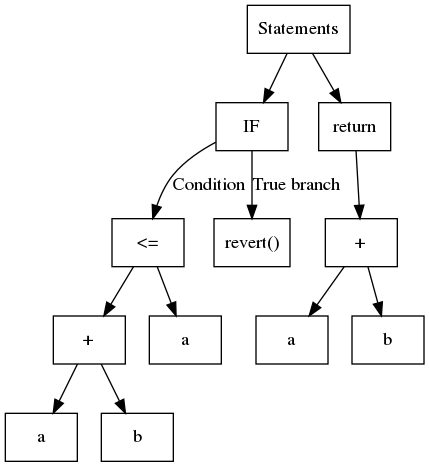
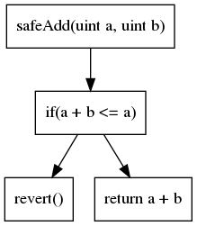

Building Secure Smart Contracts


This repository, brought to you by Trail of Bits, outlines guidelines and best practices to write secure smart contracts.
We welcome contributions, and you can contribute by following our contributing guidelines.
Table of contents:
- Development guidelines
- High-level best practices: High-level best-practices for all smart contracts
- Incident Response Recommendations: Guidelines on how to formulate an incident response plan
- Secure development workflow: A rough, high-level process to follow while you write code
- Token integration checklist: What to check when interacting with arbitrary token
- Learn EVM: EVM technical knowledge
- EVM Opcodes: Details on all EVM opcodes
- Transaction Tracing: Helper scripts and guidance for generating and navigating transaction traces
- Yellow Paper Guidance: Symbol reference for more easily reading the Ethereum yellow paper
- Forks <> EIPs: Summarize the EIPs included in each Ethereum fork
- Forks <> CIPs: Summarize the CIPs and EIPs included in each Celo fork (EVM-compatible chain)
- Upgrades <> TIPs: Summarize the TIPs included in each TRON upgrade (EVM-compatible chain)
- Forks <> BEPs: Summarize the BEPs included in each BSC fork (EVM-compatible chain)
- Not so smart contracts: Examples of smart contract common issues. Each issue contains a description, an example and recommendations
- Program analysis: How to use automated tools to secure contracts
- Echidna: a fuzzer that will check your contract's properties.
- Slither: a static analyzer available through a CLI and scriptable interface.
- Manticore: a symbolic execution engine that can prove the correctness properties.
- For each tool, this training material will provide:
- a theoretical introduction, a walkthrough of its API, and a set of exercises.
- exercises expected to require ~two hours to practically learn its operation.
- Resources: Various online resources
- Trail of Bits blogposts: List of blockchain related blogposts made by Trail of Bits
License
secure-contracts and building-secure-contracts are licensed and distributed under the AGPLv3 license. Contact us if you're looking for an exception to the terms.
License
secure-contracts and building-secure-contracts are licensed and distributed under the AGPLv3 license. Contact us if you're looking for an exception to the terms.
License
secure-contracts and building-secure-contracts are licensed and distributed under the AGPLv3 license. Contact us if you're looking for an exception to the terms.
License
secure-contracts and building-secure-contracts are licensed and distributed under the AGPLv3 license. Contact us if you're looking for an exception to the terms.
License
secure-contracts and building-secure-contracts are licensed and distributed under the AGPLv3 license. Contact us if you're looking for an exception to the terms.
License
secure-contracts and building-secure-contracts are licensed and distributed under the AGPLv3 license. Contact us if you're looking for an exception to the terms.
License
secure-contracts and building-secure-contracts are licensed and distributed under the AGPLv3 license. Contact us if you're looking for an exception to the terms.
License
secure-contracts and building-secure-contracts are licensed and distributed under the AGPLv3 license. Contact us if you're looking for an exception to the terms.
List of smart contract development best practices
- High-level best practices: High-level best-practices for all smart contracts
- Token integration checklist: What to check when interacting with arbitrary tokens
- Incident Response Recommendations: Guidelines on how to formulate an incident response plan
- Secure development workflow: A rough, high-level process to follow while you write code
Development Guidelines
Follow these high-level recommendations to build more secure smart contracts.
Design guidelines
The design of the contract should be discussed ahead of time, prior writing any line of code.
Documentation and specifications
Documentation can be written at different levels, and should be updated while implementing the contracts:
- A plain English description of the system, describing what the contracts do and any assumptions on the codebase.
- Schema and architectural diagrams, including the contract interactions and the state machine of the system. Slither printers can help to generate these schemas.
- Thorough code documentation, the Natspec format can be used for Solidity.
On-chain vs off-chain computation
- Keep as much code as you can off-chain. Keep the on-chain layer small. Pre-process data with code off-chain in such a way that verification on-chain is simple. Do you need an ordered list? Sort the list off-chain, then only check its order onchain.
Upgradeability
We discussed the different upgradeability solutions in our blog post. In particular, if you are using delegatecall to achieve upgradability, carefully review all items of the above delegatecall proxy guidance. Make a deliberate choice to support upgradeability or not prior to writing any code. The decision will influence how you structure our code. In general, we recommend:
- Favoring contract migration over upgradeability. Migration system have many of the same advantages than upgradeable, without their drawbacks.
- Using the data separation pattern over the delegatecall proxy one. If your project has a clear abstraction separation, upgradeability using data separation will necessitate only a few adjustments. The delegatecall proxy requires EVM expertise and is highly error-prone.
- Document the migration/upgrade procedure before the deployment. If you have to react under stress without any guidelines, you will make mistakes. Write the procedure to follow ahead of time. It should include:
- The calls that initiate the new contracts
- Where are stored the keys and how to access them
- How to check the deployment! Develop and test a post-deployment script.
Delegatecall Proxy Pattern
The delegatecall opcode is a very sharp tool that must be used carefully. Many high-profile exploits utilize little-known edge cases and counter-intuitive aspects of the delegatecall proxy pattern. This section aims to outline the most important risks to keep in mind while developing such smart contract systems. Trail of Bits developed the slither-check-upgradability tool to aid in the development of secure delegatecall proxies, it performs safety checks relevant to both upgradable and immutable delegatecall proxies.
- Storage layout: The storage layout of the proxy and implementation must be the same. Do not try to define the same state variables on each contract. Instead, both contracts should inherit all of their state variables from one shared base contract.
- Inheritance: If the base storage contract is split up, beware that the order of inheritance impacts the final storage layout. For example,
contract A is B,Candcontract A is C,Bwill not yield the same storage layout if both B and C define state variables. - Initialization: Make sure that the implementation is immediately initialized. Well-known disasters (and near disasters) have featured an uninitialized implementation contract. A factory pattern can help ensure that contracts are deployed & initialized correctly while also mitigating front-running risks that might otherwise open up between contract deployment & initialization.
- Function shadowing: If the same method is defined on the proxy and the implementation, then the proxy’s function will not be called. Be aware of
setOwnerand other administration functions that commonly exist on proxies. - Direct implementation usage: Consider configuring the implementation’s state variables with values that prevent it from being used directly, such as by setting a flag during construction that disables the implementation and causes all methods to revert. This is particularly important if the implementation also performs delegatecall operations because this opens up the possibility of unintended self destruction of the implementation.
- Immutable and constant variables: These are embedded into the bytecode and can therefore get out of sync between the proxy and implementation. If the implementation has an incorrect immutable variable, this value may still be used even if the same variables are correctly set in the proxy’s bytecode.
- Contract Existence Checks: All low-level calls, not just delegatecall, will return true against an address with empty bytecode. This might cause callers to be misled to think that a call performed a meaningful operation when it did not or it might result in important safety checks being silently skipped. Be aware that while a contract’s constructor is running, its bytecode remains empty until the end of constructor execution. We recommend that you rigorously verify that all low-level calls are properly protected against nonexistent contracts, keeping in mind that most proxy libraries (such as the one written by Openzeppelin) do not perform contract existence checks automatically.
For more information regarding delegatecall proxies in general, reference our blog posts and presentations:
- Contract Upgradability Anti-Patterns: Describes the difference between a downstream data contract and delegatecall proxies which use an upstream data contract and how these patterns impact upgradability.
- How the Diamond standard falls short: This post dives deep into delegatecall risks which apply to all contracts, not just those that follow the diamond standard.
- Breaking Aave Upgradeability: A write-up describing a subtle problem that we discovered in Aave
ATokencontracts that resulted from the interplay between delegatecall proxies, contact existence checks, and unsafe initialization. - Contract Upgrade Risks and Recommendations: A talk by Trail of Bits describing best-practices for developing upgradable delegatecall proxies. The section starting at 5:49 describes some general risks that also apply to non-upgradable proxies.
Implementation guidelines
Strive for simplicity. Always use the simplest solution that fits your purpose. Any member of your team should be able to understand your solution.
Function composition
The architecture of your codebase should make your code easy to review. Avoid architectural choices that decrease the ability to reason about its correctness.
- Split the logic of your system, either through multiple contracts or by grouping similar functions together (for example, authentication, arithmetic, ...).
- Write small functions, with a clear purpose. This will facilitate easier review and allow the testing of individual components.
Inheritance
- Keep the inheritance manageable. Inheritance should be used to divide the logic, however, your project should aim to minimize the depth and width of the inheritance tree.
- Use Slither’s inheritance printer to check the contracts’ hierarchy. The inheritance printer will help you review the size of the hierarchy.
Events
- Log all crucial operations. Events will help to debug the contract during the development, and monitor it after deployment.
Avoid known pitfalls
- Be aware of the most common security issues. There are many online resources to learn about common issues, such as Ethernaut CTF, Capture the Ether, or Not so smart contracts.
- Be aware of the warnings sections in the Solidity documentation. The warnings sections will inform you about non-obvious behavior of the language.
Dependencies
- Use well-tested libraries. Importing code from well-tested libraries will reduce the likelihood that you write buggy code. If you want to write an ERC20 contract, use OpenZeppelin.
- Use a dependency manager; avoid copy-pasting code. If you rely on an external source, then you must keep it up-to-date with the original source.
Testing and verification
- Write thorough unit-tests. An extensive test suite is crucial to build high-quality software.
- Write Slither and Echidna custom checks and properties. Automated tools will help ensure your contract is secure. Review the rest of this guide to learn how to write efficient checks and properties.
Solidity
- Favor Solidity versions outlined in our Slither Recommendations In our opinion, older Solidity are more secure and have better built-in practices. Newer Solidity versions may be too young to be used in production and require additional time to mature.
- Use a stable release to compile; use the latest release to check for warnings. Check that your code has no reported issues with the latest compiler version. However, Solidity has a fast release cycle and has a history of compiler bugs, so we do not recommend the latest version for deployment (see Slither’s solc version recommendation).
- Do not use inline assembly. Assembly requires EVM expertise. Do not write EVM code if you have not mastered the yellow paper.
Deployment guidelines
Once the contract has been developed and deployed:
- Monitor your contracts. Watch the logs, and be ready to react in case of contract or wallet compromise.
- Add your contact info to blockchain-security-contacts. This list helps third-parties contact you if a security flaw is discovered.
- Secure the wallets of privileged users. Follow our best practices if you store keys in hardware wallets.
- Have a response to incident plan. Consider that your smart contracts can be compromised. Even if your contracts are free of bugs, an attacker may take control of the contract owner's keys.
Token integration checklist
The following checklist provides recommendations for interactions with arbitrary tokens. Every unchecked item should be justified, and its associated risks, understood.
For convenience, all Slither utilities can be run directly on a token address, such as the following:
slither-check-erc 0xdac17f958d2ee523a2206206994597c13d831ec7 TetherToken --erc erc20
slither-check-erc 0x06012c8cf97BEaD5deAe237070F9587f8E7A266d KittyCore --erc erc721
To follow this checklist, use the below output from Slither for the token:
- slither-check-erc [target] [contractName] [optional: --erc ERC_NUMBER]
- slither [target] --print human-summary
- slither [target] --print contract-summary
- slither-prop . --contract ContractName # requires configuration, and use of Echidna and Manticore
General considerations
- The contract has a security review. Avoid interacting with contracts that lack a security review. Check the length of the assessment (i.e., the level of effort), the reputation of the security firm, and the number and severity of the findings.
- You have contacted the developers. You may need to alert their team to an incident. Look for appropriate contacts on blockchain-security-contacts.
- They have a security mailing list for critical announcements. Their team should advise users (like you!) when critical issues are found or when upgrades occur.
Contract composition
-
The contract avoids unneeded complexity. The token should be a simple contract; a token with complex code requires a higher standard of review. Use Slither’s
human-summaryprinter to identify complex code. -
The contract uses
SafeMath. Contracts that do not useSafeMathrequire a higher standard of review. Inspect the contract by hand forSafeMathusage. -
The contract has only a few non–token-related functions. Non-token-related functions increase the likelihood of an issue in the contract. Use Slither’s
contract-summaryprinter to broadly review the code used in the contract. -
The token only has one address. Tokens with multiple entry points for balance updates can break internal bookkeeping based on the address (e.g.,
balances[token_address][msg.sender]may not reflect the actual balance).
Owner privileges
-
The token is not upgradeable. Upgradeable contracts may change their rules over time. Use Slither’s
human-summaryprinter to determine whether the contract is upgradeable. -
The owner has limited minting capabilities. Malicious or compromised owners can abuse minting capabilities. Use Slither’s
human-summaryprinter to review minting capabilities, and consider manually reviewing the code. - The token is not pausable. Malicious or compromised owners can trap contracts relying on pausable tokens. Identify pausable code by hand.
- The owner cannot blacklist the contract. Malicious or compromised owners can trap contracts relying on tokens with a blacklist. Identify blacklisting features by hand.
- The team behind the token is known and can be held responsible for abuse. Contracts with anonymous development teams or teams that reside in legal shelters require a higher standard of review.
ERC20 tokens
ERC20 conformity checks
Slither includes a utility, slither-check-erc, that reviews the conformance of a token to many related ERC standards. Use slither-check-erc to review the following:
-
TransferandtransferFromreturn a boolean. Several tokens do not return a boolean on these functions. As a result, their calls in the contract might fail. -
The
name,decimals, andsymbolfunctions are present if used. These functions are optional in the ERC20 standard and may not be present. -
Decimalsreturns auint8. Several tokens incorrectly return auint256. In such cases, ensure that the value returned is below 255. - The token mitigates the known ERC20 race condition. The ERC20 standard has a known ERC20 race condition that must be mitigated to prevent attackers from stealing tokens.
Slither includes a utility, slither-prop, that generates unit tests and security properties that can discover many common ERC flaws. Use slither-prop to review the following:
-
The contract passes all unit tests and security properties from
slither-prop. Run the generated unit tests and then check the properties with Echidna and Manticore.
Risks of ERC20 Extensions
The behavior of certain contracts may differ from the original ERC specification. Conduct a manual review of the following conditions:
-
The token is not an ERC777 token and has no external function call in
transferortransferFrom. External calls in the transfer functions can lead to reentrancies. -
TransferandtransferFromshould not take a fee. Deflationary tokens can lead to unexpected behavior. - Potential interest earned from the token is taken into account. Some tokens distribute interest to token holders. This interest may be trapped in the contract if not taken into account.
Token scarcity
Reviews of token scarcity issues must be executed manually. Check for the following conditions:
- The supply is owned by more than a few users. If a few users own most of the tokens, they can influence operations based on the tokens’ repartition.
- The total supply is sufficient. Tokens with a low total supply can be easily manipulated.
- The tokens are located in more than a few exchanges. If all the tokens are in one exchange, a compromise of the exchange could compromise the contract relying on the token.
- Users understand the risks associated with a large amount of funds or flash loans. Contracts relying on the token balance must account for attackers with a large amount of funds or attacks executed through flash loans.
- The token does not allow flash minting. Flash minting can lead to substantial swings in the balance and the total supply, which necessitate strict and comprehensive overflow checks in the operation of the token.
ERC721 tokens
ERC721 Conformity Checks
The behavior of certain contracts may differ from the original ERC specification. Conduct a manual review of the following conditions:
- Transfers of tokens to the 0x0 address revert. Several tokens allow transfers to 0x0 and consider tokens transferred to that address to have been burned; however, the ERC721 standard requires that such transfers revert.
-
safeTransferFromfunctions are implemented with the correct signature. Several token contracts do not implement these functions. A transfer of NFTs to one of those contracts can result in a loss of assets. -
The
name,decimals, andsymbolfunctions are present if used. These functions are optional in the ERC721 standard and may not be present. -
If it is used,
decimalsreturns auint8(0). Other values are invalid. -
The
nameandsymbolfunctions can return an empty string. This behavior is allowed by the standard. -
The
ownerOffunction reverts if thetokenIdis invalid or is set to a token that has already been burned. The function cannot return 0x0. This behavior is required by the standard, but it is not always properly implemented. - A transfer of an NFT clears its approvals. This is required by the standard.
- The token ID of an NFT cannot be changed during its lifetime. This is required by the standard.
Common Risks of the ERC721 Standard
To mitigate the risks associated with ERC721 contracts, conduct a manual review of the following conditions:
-
The
onERC721Receivedcallback is taken into account. External calls in the transfer functions can lead to reentrancies, especially when the callback is not explicit (e.g., insafeMintcalls). - When an NFT is minted, it is safely transferred to a smart contract. If there is a minting function, it should behave similarly to safeTransferFrom and properly handle the minting of new tokens to a smart contract. This will prevent a loss of assets.
- The burning of a token clears its approvals. If there is a burning function, it should clear the token’s previous approvals.
Incident Response Recommendations
Here, we provide recommendations around the formulation of an incident response plan.
-
Identify who (either specific people or roles) is responsible for carrying out the mitigations (deploying smart contracts, pausing contracts, upgrading the front end, etc.).
- Specifying these roles will strengthen the incident response plan and ease the execution of mitigating actions when necessary.
-
Document internal processes for situations in which a deployed remediation does not work or introduces a new bug.
- Consider adding a fallback scenario that describes an action plan in the event of a failed remediation.
- Clearly describe the intended process of contract deployment.
-
Consider whether and under what circumstances your company will make affected users whole after certain issues occur.
- Some scenarios to consider include an individual or aggregate loss, a loss resulting from user error, a contract flaw, and a third-party contract flaw.
-
Document how you plan to keep up to date on new issues, both to inform future development and to secure the deployment toolchain and the external on-chain and off-chain services that the system relies on.
- For each language and component, describe the noteworthy sources for vulnerability news. Subscribe to updates for each source. Consider creating a special private Discord/Slack channel with a bot that will post the latest vulnerability news; this will help the team keep track of updates all in one place. Also consider assigning specific team members to keep track of the vulnerability news of a specific component of the system.
- Consider scenarios involving issues that would indirectly affect the system.
-
Determine when and how the team would reach out to and onboard external parties (auditors, affected users, other protocol developers, etc.).
- Some issues may require collaboration with external parties to efficiently remediate them.
-
Define contract behavior that is considered abnormal for off-chain monitoring.
- Consider adding more resilient solutions for detection and mitigation, especially in terms of specific alternate endpoints and queries for different data as well as status pages and support contacts for affected services.
- Combine issues and determine whether new detection and mitigation scenarios are needed.
-
Perform periodic dry runs of specific scenarios in the incident response plan to find gaps and opportunities for improvement and to develop muscle memory.
- Document the intervals at which the team should perform dry runs of the various scenarios. For scenarios that are more likely to happen, perform dry runs more regularly. Create a template to be filled in after a dry run to describe the improvements that need to be made to the incident response.
Incident Response Plan Resources
Well-handled IR Incidents
Secure development workflow
Here's a high-level process we recommend following while you write your smart contracts.
Check for known security issues:
- Review your contracts with Slither. It has more than 70 built-in detectors for common vulnerabilities. Run it on every check-in with new code and ensure it gets a clean report (or use triage mode to silence certain issues).
Consider special features of your contract:
-
Are your contracts upgradeable? Review your upgradeability code for flaws with
slither-check-upgradeabilityor Crytic. We've documented 17 ways upgrades can go sideways. -
Do your contracts purport to conform to ERCs? Check them with
slither-check-erc. This tool instantly identifies deviations from six common specs. -
Do you have unit tests in Truffle? Enrich them with
slither-prop. It automatically generates a robust suite of security properties for features of ERC20 based on your specific code. - Do you integrate with 3rd party tokens? Review our token integration checklist before relying on external contracts.
Visually inspect critical security features of your code:
- Review Slither's inheritance-graph printer. Avoid inadvertent shadowing and C3 linearization issues.
- Review Slither's function-summary printer. It reports function visibility and access controls.
- Review Slither's vars-and-auth printer. It reports access controls on state variables.
Document critical security properties and use automated test generators to evaluate them:
- Learn to document security properties for your code. It's tough as first, but it's the single most important activity for achieving a good outcome. It's also a prerequisite for using any of the advanced techniques in this tutorial.
- Define security properties in Solidity, for use with Echidna and Manticore. Focus on your state machine, access controls, arithmetic operations, external interactions, and standards conformance.
- Define security properties with Slither's Python API. Focus on inheritance, variable dependencies, access controls, and other structural issues.
Finally, be mindful of issues that automated tools cannot easily find:
- Lack of privacy: everyone else can see your transactions while they're queued in the pool
- Front running transactions
- Cryptographic operations
- Risky interactions with external DeFi components
Ask for help
Office Hours run every Tuesday afternoon. These 1-hour, 1-on-1 sessions are an opportunity to ask us any questions you have about security, troubleshoot using our tools, and get feedback from experts about your current approach. We will help you work through this guide.
Join our Slack: Empire Hacking. We're always available in the #crytic and #ethereum channels if you have any questions.
Security is about more than just smart contracts
Review our quick tips for general application and corporate security. It's most important that your code on-chain is secure, but lapses in off-chain security may be just as severe, especially where owner keys are concerned.
Learn EVM
List of EVM technical knowledge
- EVM Opcode Reference: Reference and notes for each of the EVM opcodes
- Transaction Tracing: Helper scripts and guidance for generating and navigating transaction traces
- Yellow Paper Guidance: Symbol reference for more easily reading the Ethereum yellow paper
- Forks <> EIPs: Summarize the EIPs included in each fork
- Forks <> CIPs: Summarize the CIPs and EIPs included in each Celo fork (EVM-compatible chain)
- Upgrades <> TIPs: Summarize the TIPs included in each TRON upgrade (EVM-compatible chain)
- Forks <> BEPs: Summarize the BEPs included in each BSC fork (EVM-compatible chain)
Ethereum VM (EVM) Opcodes and Instruction Reference
This reference consolidates EVM opcode information from the yellow paper, stack exchange, solidity source, parity source, evm-opcode-gas-costs and Manticore.
Notes
The size of a "word" in EVM is 256 bits.
The gas information is a work in progress. If an asterisk is in the Gas column, the base cost is shown but may vary based on the opcode arguments.
Table
| Opcode | Name | Description | Extra Info | Gas |
|---|---|---|---|---|
0x00 | STOP | Halts execution | - | 0 |
0x01 | ADD | Addition operation | - | 3 |
0x02 | MUL | Multiplication operation | - | 5 |
0x03 | SUB | Subtraction operation | - | 3 |
0x04 | DIV | Integer division operation | - | 5 |
0x05 | SDIV | Signed integer division operation (truncated) | - | 5 |
0x06 | MOD | Modulo remainder operation | - | 5 |
0x07 | SMOD | Signed modulo remainder operation | - | 5 |
0x08 | ADDMOD | Modulo addition operation | - | 8 |
0x09 | MULMOD | Modulo multiplication operation | - | 8 |
0x0a | EXP | Exponential operation | - | 10* |
0x0b | SIGNEXTEND | Extend length of two's complement signed integer | - | 5 |
0x0c - 0x0f | Unused | Unused | - | |
0x10 | LT | Less-than comparison | - | 3 |
0x11 | GT | Greater-than comparison | - | 3 |
0x12 | SLT | Signed less-than comparison | - | 3 |
0x13 | SGT | Signed greater-than comparison | - | 3 |
0x14 | EQ | Equality comparison | - | 3 |
0x15 | ISZERO | Simple not operator | - | 3 |
0x16 | AND | Bitwise AND operation | - | 3 |
0x17 | OR | Bitwise OR operation | - | 3 |
0x18 | XOR | Bitwise XOR operation | - | 3 |
0x19 | NOT | Bitwise NOT operation | - | 3 |
0x1a | BYTE | Retrieve single byte from word | - | 3 |
0x1b | SHL | Shift Left | EIP145 | 3 |
0x1c | SHR | Logical Shift Right | EIP145 | 3 |
0x1d | SAR | Arithmetic Shift Right | EIP145 | 3 |
0x20 | KECCAK256 | Compute Keccak-256 hash | - | 30* |
0x21 - 0x2f | Unused | Unused | ||
0x30 | ADDRESS | Get address of currently executing account | - | 2 |
0x31 | BALANCE | Get balance of the given account | - | 700 |
0x32 | ORIGIN | Get execution origination address | - | 2 |
0x33 | CALLER | Get caller address | - | 2 |
0x34 | CALLVALUE | Get deposited value by the instruction/transaction responsible for this execution | - | 2 |
0x35 | CALLDATALOAD | Get input data of current environment | - | 3 |
0x36 | CALLDATASIZE | Get size of input data in current environment | - | 2* |
0x37 | CALLDATACOPY | Copy input data in current environment to memory | - | 3 |
0x38 | CODESIZE | Get size of code running in current environment | - | 2 |
0x39 | CODECOPY | Copy code running in current environment to memory | - | 3* |
0x3a | GASPRICE | Get price of gas in current environment | - | 2 |
0x3b | EXTCODESIZE | Get size of an account's code | - | 700 |
0x3c | EXTCODECOPY | Copy an account's code to memory | - | 700* |
0x3d | RETURNDATASIZE | Pushes the size of the return data buffer onto the stack | EIP 211 | 2 |
0x3e | RETURNDATACOPY | Copies data from the return data buffer to memory | EIP 211 | 3 |
0x3f | EXTCODEHASH | Returns the keccak256 hash of a contract's code | EIP 1052 | 700 |
0x40 | BLOCKHASH | Get the hash of one of the 256 most recent complete blocks | - | 20 |
0x41 | COINBASE | Get the block's beneficiary address | - | 2 |
0x42 | TIMESTAMP | Get the block's timestamp | - | 2 |
0x43 | NUMBER | Get the block's number | - | 2 |
0x44 | DIFFICULTY | Get the block's difficulty | - | 2 |
0x45 | GASLIMIT | Get the block's gas limit | - | 2 |
0x46 | CHAINID | Returns the current chain’s EIP-155 unique identifier | EIP 1344 | 2 |
0x47 - 0x4f | Unused | - | ||
0x48 | BASEFEE | Returns the value of the base fee of the current block it is executing in. | EIP 3198 | 2 |
0x50 | POP | Remove word from stack | - | 2 |
0x51 | MLOAD | Load word from memory | - | 3* |
0x52 | MSTORE | Save word to memory | - | 3* |
0x53 | MSTORE8 | Save byte to memory | - | 3 |
0x54 | SLOAD | Load word from storage | - | 800 |
0x55 | SSTORE | Save word to storage | - | 20000** |
0x56 | JUMP | Alter the program counter | - | 8 |
0x57 | JUMPI | Conditionally alter the program counter | - | 10 |
0x58 | PC | Get the value of the program counter prior to the increment | - | 2 |
0x59 | MSIZE | Get the size of active memory in bytes | - | 2 |
0x5a | GAS | Get the amount of available gas, including the corresponding reduction for the cost of this instruction | - | 2 |
0x5b | JUMPDEST | Mark a valid destination for jumps | - | 1 |
0x5c - 0x5f | Unused | - | ||
0x60 | PUSH1 | Place 1 byte item on stack | - | 3 |
0x61 | PUSH2 | Place 2-byte item on stack | - | 3 |
0x62 | PUSH3 | Place 3-byte item on stack | - | 3 |
0x63 | PUSH4 | Place 4-byte item on stack | - | 3 |
0x64 | PUSH5 | Place 5-byte item on stack | - | 3 |
0x65 | PUSH6 | Place 6-byte item on stack | - | 3 |
0x66 | PUSH7 | Place 7-byte item on stack | - | 3 |
0x67 | PUSH8 | Place 8-byte item on stack | - | 3 |
0x68 | PUSH9 | Place 9-byte item on stack | - | 3 |
0x69 | PUSH10 | Place 10-byte item on stack | - | 3 |
0x6a | PUSH11 | Place 11-byte item on stack | - | 3 |
0x6b | PUSH12 | Place 12-byte item on stack | - | 3 |
0x6c | PUSH13 | Place 13-byte item on stack | - | 3 |
0x6d | PUSH14 | Place 14-byte item on stack | - | 3 |
0x6e | PUSH15 | Place 15-byte item on stack | - | 3 |
0x6f | PUSH16 | Place 16-byte item on stack | - | 3 |
0x70 | PUSH17 | Place 17-byte item on stack | - | 3 |
0x71 | PUSH18 | Place 18-byte item on stack | - | 3 |
0x72 | PUSH19 | Place 19-byte item on stack | - | 3 |
0x73 | PUSH20 | Place 20-byte item on stack | - | 3 |
0x74 | PUSH21 | Place 21-byte item on stack | - | 3 |
0x75 | PUSH22 | Place 22-byte item on stack | - | 3 |
0x76 | PUSH23 | Place 23-byte item on stack | - | 3 |
0x77 | PUSH24 | Place 24-byte item on stack | - | 3 |
0x78 | PUSH25 | Place 25-byte item on stack | - | 3 |
0x79 | PUSH26 | Place 26-byte item on stack | - | 3 |
0x7a | PUSH27 | Place 27-byte item on stack | - | 3 |
0x7b | PUSH28 | Place 28-byte item on stack | - | 3 |
0x7c | PUSH29 | Place 29-byte item on stack | - | 3 |
0x7d | PUSH30 | Place 30-byte item on stack | - | 3 |
0x7e | PUSH31 | Place 31-byte item on stack | - | 3 |
0x7f | PUSH32 | Place 32-byte (full word) item on stack | - | 3 |
0x80 | DUP1 | Duplicate 1st stack item | - | 3 |
0x81 | DUP2 | Duplicate 2nd stack item | - | 3 |
0x82 | DUP3 | Duplicate 3rd stack item | - | 3 |
0x83 | DUP4 | Duplicate 4th stack item | - | 3 |
0x84 | DUP5 | Duplicate 5th stack item | - | 3 |
0x85 | DUP6 | Duplicate 6th stack item | - | 3 |
0x86 | DUP7 | Duplicate 7th stack item | - | 3 |
0x87 | DUP8 | Duplicate 8th stack item | - | 3 |
0x88 | DUP9 | Duplicate 9th stack item | - | 3 |
0x89 | DUP10 | Duplicate 10th stack item | - | 3 |
0x8a | DUP11 | Duplicate 11th stack item | - | 3 |
0x8b | DUP12 | Duplicate 12th stack item | - | 3 |
0x8c | DUP13 | Duplicate 13th stack item | - | 3 |
0x8d | DUP14 | Duplicate 14th stack item | - | 3 |
0x8e | DUP15 | Duplicate 15th stack item | - | 3 |
0x8f | DUP16 | Duplicate 16th stack item | - | 3 |
0x90 | SWAP1 | Exchange 1st and 2nd stack items | - | 3 |
0x91 | SWAP2 | Exchange 1st and 3rd stack items | - | 3 |
0x92 | SWAP3 | Exchange 1st and 4th stack items | - | 3 |
0x93 | SWAP4 | Exchange 1st and 5th stack items | - | 3 |
0x94 | SWAP5 | Exchange 1st and 6th stack items | - | 3 |
0x95 | SWAP6 | Exchange 1st and 7th stack items | - | 3 |
0x96 | SWAP7 | Exchange 1st and 8th stack items | - | 3 |
0x97 | SWAP8 | Exchange 1st and 9th stack items | - | 3 |
0x98 | SWAP9 | Exchange 1st and 10th stack items | - | 3 |
0x99 | SWAP10 | Exchange 1st and 11th stack items | - | 3 |
0x9a | SWAP11 | Exchange 1st and 12th stack items | - | 3 |
0x9b | SWAP12 | Exchange 1st and 13th stack items | - | 3 |
0x9c | SWAP13 | Exchange 1st and 14th stack items | - | 3 |
0x9d | SWAP14 | Exchange 1st and 15th stack items | - | 3 |
0x9e | SWAP15 | Exchange 1st and 16th stack items | - | 3 |
0x9f | SWAP16 | Exchange 1st and 17th stack items | - | 3 |
0xa0 | LOG0 | Append log record with no topics | - | 375 |
0xa1 | LOG1 | Append log record with one topic | - | 750 |
0xa2 | LOG2 | Append log record with two topics | - | 1125 |
0xa3 | LOG3 | Append log record with three topics | - | 1500 |
0xa4 | LOG4 | Append log record with four topics | - | 1875 |
0xa5 - 0xaf | Unused | - | ||
0xb0 | JUMPTO | Tentative libevmasm has different numbers | EIP 615 | |
0xb1 | JUMPIF | Tentative | EIP 615 | |
0xb2 | JUMPSUB | Tentative | EIP 615 | |
0xb4 | JUMPSUBV | Tentative | EIP 615 | |
0xb5 | BEGINSUB | Tentative | EIP 615 | |
0xb6 | BEGINDATA | Tentative | EIP 615 | |
0xb8 | RETURNSUB | Tentative | EIP 615 | |
0xb9 | PUTLOCAL | Tentative | EIP 615 | |
0xba | GETLOCAL | Tentative | EIP 615 | |
0xbb - 0xe0 | Unused | - | ||
0xe1 | SLOADBYTES | Only referenced in pyethereum | - | - |
0xe2 | SSTOREBYTES | Only referenced in pyethereum | - | - |
0xe3 | SSIZE | Only referenced in pyethereum | - | - |
0xe4 - 0xef | Unused | - | ||
0xf0 | CREATE | Create a new account with associated code | - | 32000 |
0xf1 | CALL | Message-call into an account | - | Complicated |
0xf2 | CALLCODE | Message-call into this account with alternative account's code | - | Complicated |
0xf3 | RETURN | Halt execution returning output data | - | 0 |
0xf4 | DELEGATECALL | Message-call into this account with an alternative account's code, but persisting into this account with an alternative account's code | - | Complicated |
0xf5 | CREATE2 | Create a new account and set creation address to sha3(sender + sha3(init code)) % 2**160 | - | |
0xf6 - 0xf9 | Unused | - | - | |
0xfa | STATICCALL | Similar to CALL, but does not modify state | - | 40 |
0xfb | Unused | - | - | |
0xfd | REVERT | Stop execution and revert state changes, without consuming all provided gas and providing a reason | - | 0 |
0xfe | INVALID | Designated invalid instruction | - | 0 |
0xff | SELFDESTRUCT | Halt execution and register account for later deletion | - | 5000* |
Instruction Details
STOP
0x00
() => ()
halts execution
ADD
0x01
Takes two words from stack, adds them, then pushes the result onto the stack.
(a, b) => (c)
c = a + b
MUL
0x02
(a, b) => (c)
c = a * b
SUB
0x03
(a, b) => (c)
c = a - b
DIV
0x04
(a, b) => (c)
c = a / b
SDIV
0x05
(a: int256, b: int256) => (c: int256)
c = a / b
MOD
0x06
(a, b) => (c)
c = a % b
SMOD
0x07
(a: int256, b: int256) => (c: int256)
c = a % b
ADDMOD
0x08
(a, b, m) => (c)
c = (a + b) % m
MULMOD
0x09
(a, b, m) => (c)
c = (a * b) % m
EXP
0x0a
(a, b, m) => (c)
c = (a * b) % m
SIGNEXTEND
0x0b
(b, x) => (y)
y = SIGNEXTEND(x, b)
sign extends x from (b + 1) * 8 bits to 256 bits.
LT
0x10
(a, b) => (c)
c = a < b
all values interpreted as uint256
GT
0x11
(a, b) => (c)
c = a > b
all values interpreted as uint256
SLT
0x12
(a, b) => (c)
c = a < b
all values interpreted as int256
SGT
0x13
(a, b) => (c)
c = a > b
all values interpreted as int256
EQ
0x14
Pops 2 elements off the stack and pushes the value 1 to the stack in case they're equal, otherwise the value 0.
(a, b) => (c)
c = a == b
ISZERO
0x15
(a) => (c)
c = a == 0
AND
0x16
(a, b) => (c)
c = a & b
OR
0x17
(a, b) => (c)
c = a | b
XOR
0x18
(a, b) => (c)
c = a ^ b
NOT
0x19
(a) => (c)
c = ~a
BYTE
0x1a
(i, x) => (y)
y = (x >> (248 - i * 8) & 0xff
SHL
0x1b
Pops 2 elements from the stack and pushes the second element onto the stack shifted left by the shift amount (first element).
(shift, value) => (res)
res = value << shift
SHR
0x1c
Pops 2 elements from the stack and pushes the second element onto the stack shifted right by the shift amount (first element).
(shift, value) => (res)
res = value >> shift
SAR
0x1d
(shift, value) => (res)
res = value >> shift
value: int256
KECCAK256
0x20
(offset, len) => (hash)
hash = keccak256(memory[offset:offset+len])
ADDRESS
0x30
() => (address(this))
BALANCE
0x31
() => (address(this).balance)
ORIGIN
0x32
() => (tx.origin)
CALLER
0x33
() => (msg.sender)
CALLVALUE
0x34
() => (msg.value)
CALLDATALOAD
0x35
(index) => (msg.data[index:index+32])
CALLDATASIZE
0x36
() => (msg.data.size)
CALLDATACOPY
0x37
(memOffset, offset, length) => ()
memory[memOffset:memOffset+len] = msg.data[offset:offset+len]
CODESIZE
0x38
() => (address(this).code.size)
CODECOPY
0x39
(memOffset, codeOffset, len) => ()
memory[memOffset:memOffset+len] = address(this).code[codeOffset:codeOffset+len]
GASPRICE
0x3a
() => (tx.gasprice)
EXTCODESIZE
0x3b
(addr) => (address(addr).code.size)
EXTCODECOPY
0x3c
(addr, memOffset, offset, length) => ()
memory[memOffset:memOffset+len] = address(addr).code[codeOffset:codeOffset+len]
RETURNDATASIZE
0x3d
() => (size)
size = RETURNDATASIZE()
The number of bytes that were returned from the last ext call
RETURNDATACOPY
0x3e
(memOffset, offset, length) => ()
memory[memOffset:memOffset+len] = RETURNDATA[codeOffset:codeOffset+len]
RETURNDATA is the data returned from the last external call
EXTCODEHASH
0x3f
(addr) => (hash)
hash = address(addr).exists ? keccak256(address(addr).code) : 0
BLOCKHASH
0x40
(number) => (hash)
hash = block.blockHash(number)
COINBASE
0x41
() => (block.coinbase)
TIMESTAMP
0x42
() => (block.timestamp)
NUMBER
0x43
() => (block.number)
DIFFICULTY
0x44
() => (block.difficulty)
GASLIMIT
0x45
() => (block.gaslimit)
CHAINID
0x46
() => (chainid)
where chainid = 1 for mainnet & some other value for other networks
SELFBALANCE
0x47
() => (address(this).balance)
BASEFEE
0x48
() => (block.basefee)
current block's base fee (related to EIP1559)
POP
0x50
(a) => ()
discards the top stack item
MLOAD
0x51
(offset) => (value)
value = memory[offset:offset+32]
MSTORE
0x52
Saves a word to the EVM memory. Pops 2 elements from stack - the first element being the word memory address where the saved value (second element popped from stack) will be stored.
(offset, value) => ()
memory[offset:offset+32] = value
MSTORE8
0x53
(offset, value) => ()
memory[offset:offset+32] = value & 0xff
SLOAD
0x54
Pops 1 element off the stack, that being the key which is the storage slot and returns the read value stored there.
(key) => (value)
value = storage[key]
SSTORE
0x55
Pops 2 elements off the stack, the first element being the key and the second being the value which is then stored at the storage slot represented from the first element (key).
(key, value) => ()
storage[key] = value
JUMP
0x56
(dest) => ()
pc = dest
JUMPI
0x57
Conditional - Pops 2 elements from the stack, the first element being the jump location and the second being the value 0 (false) or 1 (true). If the value’s 1 the PC will be altered and the jump executed. Otherwise, the value will be 0 and the PC will remain the same and execution unaltered.
(dest, cond) => ()
pc = cond ? dest : pc + 1
PC
0x58
() => (pc)
MSIZE
0x59
() => (memory.size)
GAS
0x5a
() => (gasRemaining)
not including the gas required for this opcode
JUMPDEST
0x5b
() => ()
noop, marks a valid jump destination
PUSH1
0x60
The following byte is read from PC, placed into a word, then this word is pushed onto the stack.
() => (address(this).code[pc+1:pc+2])
PUSH2
0x61
() => (address(this).code[pc+2:pc+3])
PUSH3
0x62
() => (address(this).code[pc+3:pc+4])
PUSH4
0x63
() => (address(this).code[pc+4:pc+5])
PUSH5
0x64
() => (address(this).code[pc+5:pc+6])
PUSH6
0x65
() => (address(this).code[pc+6:pc+7])
PUSH7
0x66
() => (address(this).code[pc+7:pc+8])
PUSH8
0x67
() => (address(this).code[pc+8:pc+9])
PUSH9
0x68
() => (address(this).code[pc+9:pc+10])
PUSH10
0x69
() => (address(this).code[pc+10:pc+11])
PUSH11
0x6a
() => (address(this).code[pc+11:pc+12])
PUSH12
0x6b
() => (address(this).code[pc+12:pc+13])
PUSH13
0x6c
() => (address(this).code[pc+13:pc+14])
PUSH14
0x6d
() => (address(this).code[pc+14:pc+15])
PUSH15
0x6e
() => (address(this).code[pc+15:pc+16])
PUSH16
0x6f
() => (address(this).code[pc+16:pc+17])
PUSH17
0x70
() => (address(this).code[pc+17:pc+18])
PUSH18
0x71
() => (address(this).code[pc+18:pc+19])
PUSH19
0x72
() => (address(this).code[pc+19:pc+20])
PUSH20
0x73
() => (address(this).code[pc+20:pc+21])
PUSH21
0x74
() => (address(this).code[pc+21:pc+22])
PUSH22
0x75
() => (address(this).code[pc+22:pc+23])
PUSH23
0x76
() => (address(this).code[pc+23:pc+24])
PUSH24
0x77
() => (address(this).code[pc+24:pc+25])
PUSH25
0x78
() => (address(this).code[pc+25:pc+26])
PUSH26
0x79
() => (address(this).code[pc+26:pc+27])
PUSH27
0x7a
() => (address(this).code[pc+27:pc+28])
PUSH28
0x7b
() => (address(this).code[pc+28:pc+29])
PUSH29
0x7c
() => (address(this).code[pc+29:pc+30])
PUSH30
0x7d
() => (address(this).code[pc+30:pc+31])
PUSH31
0x7e
() => (address(this).code[pc+31:pc+32])
PUSH32
0x7f
() => (address(this).code[pc+32:pc+33])
DUP1
0x80
(1) => (1, 1)
DUP2
0x81
(1, 2) => (2, 1, 2)
DUP3
0x82
(1, 2, 3) => (3, 1, 2, 3)
DUP4
0x83
(1, ..., 4) => (4, 1, ..., 4)
DUP5
0x84
(1, ..., 5) => (5, 1, ..., 5)
DUP6
0x85
(1, ..., 6) => (6, 1, ..., 6)
DUP7
0x86
(1, ..., 7) => (7, 1, ..., 7)
DUP8
0x87
(1, ..., 8) => (8, 1, ..., 8)
DUP9
0x88
(1, ..., 9) => (9, 1, ..., 9)
DUP10
0x89
(1, ..., 10) => (10, 1, ..., 10)
DUP11
0x8a
(1, ..., 11) => (11, 1, ..., 11)
DUP12
0x8b
(1, ..., 12) => (12, 1, ..., 12)
DUP13
0x8c
(1, ..., 13) => (13, 1, ..., 13)
DUP14
0x8d
(1, ..., 14) => (14, 1, ..., 14)
DUP15
0x8e
(1, ..., 15) => (15, 1, ..., 15)
DUP16
0x8f
(1, ..., 16) => (16, 1, ..., 16)
SWAP1
0x90
(1, 2) => (2, 1)
SWAP2
0x91
(1, 2, 3) => (3, 2, 1)
SWAP3
0x92
(1, ..., 4) => (4, ..., 1)
SWAP4
0x93
(1, ..., 5) => (5, ..., 1)
SWAP5
0x94
(1, ..., 6) => (6, ..., 1)
SWAP6
0x95
(1, ..., 7) => (7, ..., 1)
SWAP7
0x96
(1, ..., 8) => (8, ..., 1)
SWAP8
0x97
(1, ..., 9) => (9, ..., 1)
SWAP9
0x98
(1, ..., 10) => (10, ..., 1)
SWAP10
0x99
(1, ..., 11) => (11, ..., 1)
SWAP11
0x9a
(1, ..., 12) => (12, ..., 1)
SWAP12
0x9b
(1, ..., 13) => (13, ..., 1)
SWAP13
0x9c
(1, ..., 14) => (14, ..., 1)
SWAP14
0x9d
(1, ..., 15) => (15, ..., 1)
SWAP15
0x9e
(1, ..., 16) => (16, ..., 1)
SWAP16
0x9f
(1, ..., 17) => (17, ..., 1)
LOG0
0xa0
(offset, length) => ()
emit(memory[offset:offset+length])
LOG1
0xa1
(offset, length, topic0) => ()
emit(memory[offset:offset+length], topic0)
LOG2
0xa2
(offset, length, topic0, topic1) => ()
emit(memory[offset:offset+length], topic0, topic1)
LOG3
0xa3
(offset, length, topic0, topic1, topic2) => ()
emit(memory[offset:offset+length], topic0, topic1, topic2)
LOG4
0xa4
(offset, length, topic0, topic1, topic2, topic3) => ()
emit(memory[offset:offset+length], topic0, topic1, topic2, topic3)
CREATE
0xf0
(value, offset, length) => (addr)
addr = keccak256(rlp([address(this), this.nonce]))[12:] addr.code = exec(memory[offset:offset+length]) addr.balance += value this.balance -= value this.nonce += 1
CALL
0xf1
(gas, addr, value, argsOffset, argsLength, retOffset, retLength) => (success)
memory[retOffset:retOffset+retLength] = address(addr).callcode.gas(gas).value(value)(memory[argsOffset:argsOffset+argsLength]) success = true (unless the prev call reverted)
CALLCODE
0xf2
(gas, addr, value, argsOffset, argsLength, retOffset, retLength) => (success)
memory[retOffset:retOffset+retLength] = address(addr).callcode.gas(gas).value(value)(memory[argsOffset:argsOffset+argsLength]) success = true (unless the prev call reverted)
TODO: what's the difference between this & CALL?
RETURN
0xf3
(offset, length) => ()
return memory[offset:offset+length]
DELEGATECALL
0xf4
(gas, addr, argsOffset, argsLength, retOffset, retLength) => (success)
memory[retOffset:retOffset+retLength] = address(addr).delegatecall.gas(gas)(memory[argsOffset:argsOffset+argsLength]) success = true (unless the prev call reverted)
CREATE2
0xf5
(value, offset, length, salt) => (addr)
initCode = memory[offset:offset+length] addr = keccak256(0xff ++ address(this) ++ salt ++ keccak256(initCode))[12:] address(addr).code = exec(initCode)
STATICCALL
0xfa
(gas, addr, argsOffset, argsLength, retOffset, retLength) => (success)
memory[retOffset:retOffset+retLength] = address(addr).delegatecall.gas(gas)(memory[argsOffset:argsOffset+argsLength]) success = true (unless the prev call reverted)
TODO: what's the difference between this & DELEGATECALL?
REVERT
0xfd
(offset, length) => ()
revert(memory[offset:offset+length])
SELFDESTRUCT
0xff
(addr) => ()
address(addr).send(address(this).balance) this.code = 0
Tracing Utils
Transaction Tracing
One great way to learn more about how the EVM works internally is to trace the execution of a transaction opcode by opcode. This technique can also help you assess the correctness of assembly code and catch problems related to the compiler or it's optimization steps.
The following Javascript snippet uses an ethers provider to connect to an ethereum node with the debug JSON RPC endpoints activated. Although this requires an archive node on mainnet, it can also be run quickly & easily against a local development testnet using hardhat node, ganache, or some other ethprovider that targets developers.
Transaction traces for even simple smart contract interactions are verbose so we recommend you provide a filename to save the trace at for further analysis. Note that the following function depends on the fs module built into node.js so it should be copied into a node console rather than a browser console, however the filesystem interactions could be removed for use in the browser.
const ethers = require("ethers");
const fs = require("fs");
const provider = new ethers.providers.JsonRpcProvider(
process.env.ETH_PROVIDER || "http://localhost:8545"
);
let traceTx = async (txHash, filename) => {
await provider.send("debug_traceTransaction", [txHash]).then((res) => {
console.log(`Got a response with keys: ${Object.keys(res)}`);
const indexedRes = {
...res,
structLogs: res.structLogs.map((structLog, index) => ({
index,
...structLog,
})),
};
if (filename) {
fs.writeFileSync(filename, JSON.stringify(indexedRes, null, 2));
} else {
log(indexecRes);
}
});
};
Note that, by default, transaction traces do not feature a sequential index making it difficult to answer, for example, "Which was the 100th opcode executed?" The above script adds such an index for easier navigation and communication.
The output of the above features a list of opcode executions, a snippet of which might look something like:
{
"structLogs": [
...,
{
"index": 191,
"pc": 3645,
"op": "SSTORE",
"gas": 10125,
"gasCost": 2900,
"depth": 1,
"stack": [
"0xa9059cbb",
"0x700",
"0x7fb610713c8404e21676c01c271bb662df6eb63c",
"0x1d8b64f4775be40000",
"0x0",
"0x1e01",
"0x68e224065325c640131672779181a2f2d1324c4d",
"0x7fb610713c8404e21676c01c271bb662df6eb63c",
"0x1d8b64f4775be40000",
"0x0",
"0x14af3e50252dfc40000",
"0x14af3e50252dfc40000",
"0x7d7d4dc7c32ad4c905ab39fc25c4323c4a85e4b1b17a396514e6b88ee8b814e8"
],
"memory": [
"00000000000000000000000068e224065325c640131672779181a2f2d1324c4d",
"0000000000000000000000000000000000000000000000000000000000000002",
"0000000000000000000000000000000000000000000000000000000000000080"
],
"storage": {
"7d7d4dc7c32ad4c905ab39fc25c4323c4a85e4b1b17a396514e6b88ee8b814e8": "00000000000000000000000000000000000000000000014af3e50252dfc40000"
}
},
...,
],
"gas": 34718,
"failed": false,
"returnValue": "0000000000000000000000000000000000000000000000000000000000000001"
}
An overview of the fields for opcode execution trace:
index: The index we added, indicates that the above opcode was the 191st one executed. Helpful for staying oriented as you jump around the trace.pc: program counter eg this opcode exists at index3645of the contract bytecode. You'll notice thatpcincrements by one for many common opcodes, by more than one for PUSH opcodes, and is reset entirely by JUMP/JUMP opcodes.op: name of the opcode, because most of the actual data is hex-encoded, using grep or ctrl-f to search through the trace for opcode names is an effective strategy.gas: remaining gas before the opcode is executedgasCost: cost of this operation, for CALL & similar opcodes, this cost takes into account all gas spent by the child execution frame.depth: each call creates a new child execution frame & this variable tracks how many sub-frames exist. Generally, CALL opcodes increase the depth and RETURN opcodes decrease it.stack: a snapshot of the entire stack before the opcode executesmemory: a snapshot of the entire memory before the opcode executesstorage: an accumulation of all state changes made during the execution of the transaction being traced
One big challenge of navigating such a transaction trace is matching opcode executions to higher-level solidity code. An effective first step is to identify uncommon opcodes which correspond to easily identified logic of the source code. Generally, expensive operations are relatively uncommon so SLOAD and SSTORE are good ones to scan for first and match against places where state variables are being read or written in solidity. Alternatively, CALL and related opcodes are relatively uncommon and can be matched with calls to other contracts in the source code.
If there's a specific part of the source code that you're interested in tracing, matching uncommon opcodes to the source code will give you bounds on where to search. From here, you'll likely start walking through the trace opcode-by-opcode as you review the source code line by line. Leaving a few ephemeral comments in the source code like # opcode 191 can help you keep track and pick up where you left off if you need to take a break.
Exploring transaction traces is challenging work but the reward is an ultra-high-definition view into how the EVM operates internally and can help you identify problems that might not be apparent from just the source code.
Storage Tracing
Although you can get an overview of all the changes to the contract state by checking the storage field of the last executed opcode in the above trace, the following helper function will extract that for you for quicker and easier analysis. If you're doing a more involved investigation into a contract's state, we recommend you check out the slither-read-storage command for a more powerful tool.
const traceStorage = async (txHash) => {
await provider.send("debug_traceTransaction", [txHash]).then((res) => {
log(res.structLogs[res.structLogs.length - 1].storage);
});
};
Ethereum Yellow Paper
So, you want to read the yellow paper. Before we dive in, keep in mind that the yellow paper is out of date and some in the community might refer to it as being depreciated. Check out the BRANCHES.md file of the yellowpaper repository on github to stay up-to-date on how closely this document tracks the latest version of the Ethereum protocol. At the time of writing, the yellow paper is up to date with the Berlin hardfork which occurred in April 2021. For an overview of all Ethereum forks and which EIPs are included in each of them, see the EIPs Forks page.
For a more up-to-date reference, check out the Ethereum Specification which features a detailed description of each opcode for each hardfork in addition to reference implementations written in python.
That said, the yellow paper is still a rich resource for ramping up on the fundamentals of the Ethereum protocol. This document aims to provide some guidance and assistance in deciphering Ethereum's flagship specification.
Mathematical Symbols
One challenging part of the yellow paper, for those of us who are not so well trained in formal mathematics, is comprehending the mathematical symbols. A cheat-sheet of some of these symbols is provided below
∃: there exists∀: for all∧: and∨: or
And some more Ethereum-specific symbols:
N_{H}: 1,150,000 aka block number at which the protocol was upgraded from homestead to frontier.T: a transaction egT = { n: nonce, p: gasPrice, g: gasLimit, t: to, v: value, i: initBytecode, d: data }S(): returns the sender of a transaction egS(T) = T.fromΛ: (lambda) account creation functionKEC: Keccak SHA-3 hash functionRLP: Recursive Length Prefix encoding
High-level glossary
The following are symbols and function representations that provide a high-level description of ethereum. Many of these symbols represent a data structure, the details of which are described in subsequent sections.
σ: ethereum world stateB: blockμ: EVM stateA: accumulated transaction sub-stateI: execution environmento: output ofH(μ,I)ie null if we're good to go or a set of data if execution should haltΥ(σ,T) => σ': the transaction-level state transition functionΠ(σ,B) => σ': the block-level state transition function, processes all transactions then finalizes with ΩΩ(B,σ) => σ: block-finalisation state transition functionO(σ,μ,A,I): one iteration of the execution cycleH(μ,I) => o: outputs null while execution should continue or a series if execution should halt.
Ethereum World-State: σ
A mapping between addresses (external or contract) and account states. Saved as a Merkle-Patricia tree whose root is recorded on the blockchain backbone.
σ = [ account1={...}, account2={...},
account3= {
n: nonce aka number of transactions sent by account3
b: balance ie number of wei account3 controls
s: storage root, hash of the merkle-patricia tree that contains this accounts long-term data store
c: code, hash of the EVM bytecode that controls this account. If this equals the hash of an empty string, this is a non-contract account.
}, ...
]
The Block: B
B = Block = {
H: Header = {
p: parentHash,
o: ommersHash,
c: beneficiary,
r: stateRoot,
t: transactionsRoot,
e: receiptsRoot,
b: logsBloomFilter,
d: difficulty,
i: number,
l: gasLimit,
g: gasUsed,
s: timestamp,
x: extraData,
m: mixHash,
n: nonce,
},
T: Transactions = [
tx1, tx2...
],
U: Uncle block headers = [
header1, header2..
],
R: Transaction Receipts = [
receipt_1 = {
σ: root hash of the ETH state after transaction 1 finishes executing,
u: cumulative gas used immediately after this tx completes,
b: bloom filter,
l: set of logs created while executing this tx
}
]
}
Execution Environment: I
I = Execution Environment = {
a: address(this) address of the account which owns the executing code
o: tx.origin original sender of the tx that initialized this execution
p: tx.gasPrice price of gas
d: data aka byte array of method id & args
s: sender of this tx or initiator of this execution
v: value send along w this execution or transaction
b: byte array of machine code to be executed
H: header of the current block
e: current stack depth
}
EVM state: μ
The state of the EVM during execution. This is the data structure provided by the debug_traceTransaction JSON RPC method, see this page for more details about using this method to investigate transaction execution.
μ = {
g: gas left
pc: program counter ie index into which instruction of I.b to execute next
m: memory contents, lazily initialized to 2^256 zeros
i: number of words in memory
s: stack contents
}
Accrued sub-state: A
The data accumulated during tx execution that needs to be available at the end to finalize the transactions state changes.
A = {
s: suicide set ie the accounts to delete at the end of this tx
l: logs
t: touched accounts
r: refunds eg gas received when storage is freed
}
Contract Creation
If we send a transaction tx to create a contract, tx.to is set to null and we include a tx.init field that contains bytecode. This is NOT the bytecode run by the contract, rather it RETURNS the bytecode run by the contract ie the tx.init code is run ONCE at contract creation and never again.
If T.to == 0 then this is a contract creation transaction and T.init != null, T.data == null
The following lists every EIP associated to an Ethereum fork.
| Fork | EIP | What it does | Opcode | Gas | Notes |
|---|---|---|---|---|---|
| Homestead (606) | 2 | Homestead Hard-fork Changes | X | ||
| Homestead (606) | 7 | Delegatecall | X | ||
| Homestead (606) | 8 | Networking layer: devp2p Forward Compatibility Requirements for Homestead | |||
| DAO Fork (779) | 779 | DAO Fork | |||
| Tangerine Whistle (608) | 150 | Gas cost changes for IO-heavy operations | X | Define the all but one 64th rule | |
| Spurious Dragon (607) | 155 | Simple replay attack protection | |||
| Spurious Dragon (607) | 160 | EXP cost increase | X | ||
| Spurious Dragon (607) | 161 | State trie clearing (invariant-preserving alternative) | X | ||
| Spurious Dragon (607) | 170 | Contract code size limit | Change the semantics of CREATE | ||
| Byzantium (609) | 100 | Change difficulty adjustment to target mean block time including uncles | |||
| Byzantium (609) | 140 | REVERT instruction | X | ||
| Byzantium (609) | 196 | Precompiled contracts for addition and scalar multiplication on the elliptic curve alt_bn128 | |||
| Byzantium (609) | 197 | Precompiled contracts for optimal ate pairing check on the elliptic curve alt_bn128 | |||
| Byzantium (609) | 198 | Precompiled contract for bigint modular exponentiation | |||
| Byzantium (609) | 211 | RETURNDATASIZE and RETURNDATACOPY | X | ||
| Byzantium (609) | 214 | STATICCALL | X | ||
| Byzantium (609) | 649 | Metropolis Difficulty Bomb Delay and Block Reward Reduction | |||
| Byzantium (609) | 658 | Embedding transaction status code in receipts | |||
| Constantinople (1013) | 145 | Bitwise shifting instructions in EVM | X | ||
| Constantinople (1013) | 1014 | Skinny CREATE2 | X | ||
| Constantinople (1013) | 1234 | Constantinople Difficulty Bomb Delay and Block Reward Adjustment | |||
| Constantinople (1013) | 1283 | Net gas metering for SSTORE without dirty maps | X | This EIP leads to reentrancies risks (see EIP-1283 incident report) and was directly removed with EIP-1716 | |
| Petersburg (1716) | 1716 | Remove EIP-1283 | X | See EIP-1283 incident report | |
| Istanbul (1679) | 152 | Precompiled contract for the BLAKE2 F compression function | |||
| Istanbul (1679) | 1108 | Reduce alt_bn128 precompile gas costs | X | ||
| Istanbul (1679) | 1344 | ChainID opcode | X | ||
| Istanbul (1679) | 1884 | Repricing for trie-size-dependent opcodes | X | X | The EIP changes the gas cost of multiple opcodes, and add SELFBALANCE |
| Istanbul (1679) | 2028 | Transaction data gas cost reduction | X | ||
| Istanbul (1679) | 2200 | Structured Definitions for Net Gas Metering | X | ||
| Muir Glacier (2387) | 2384 | Istanbul/Berlin Difficulty Bomb Delay | |||
| Berlin (2070) | 2565 | ModExp Gas Cost | X | ||
| Berlin (2070) | 2929 | Gas cost increases for state access opcodes | X | ||
| Berlin (2718) | 2718 | Typed Transaction Envelope | |||
| Berlin (2718) | 2930 | Typed Transaction Envelope | |||
| London | 1559 | Fee market change for ETH 1.0 chain | X | Significant modifications of Ethereum gas pricing | |
| London | 3198 | BASEFEE | X | ||
| London | 3529 | Reduction in refunds | X | Remove gas tokens benefits | |
| London | 3554 | Difficulty Bomb Delay to December 1st 2021 | |||
| Arrow Glacier | 4345 | Difficulty Bomb Delay to June 2022 | |||
| Gray Glacier | 5133 | Difficulty Bomb Delay to mid-September 2022 | |||
| Paris | 3675 | Upgrade consensus to Proof-of-Stake | Changes to DIFFICULTY and BLOCKHASH | ||
| Paris | 4399 | Supplant DIFFICULTY opcode with PREVRANDAO | X | DIFFICULTY becomes PREVRANDAO |
In this table:
Opcode: the EIP adds or removes an opcodeGas: the EIP changes the gas rules
The following lists every CIP associated to a Celo fork. Celo is an EVM-compatible chain.
| Fork | CIP/EIP | What it does |
|---|---|---|
| Churrito | EIP 211 | Create RETURNDATASIZE and RETURNDATACOPY opcodes |
| Donut | CIP 25 | Add Ed25519 precompile |
| Donut | CIP 31 - copied from EIP-2539 | Add precompile for BLS12-381 curve operations |
| Donut | CIP 30 - copied from EIP-2539 | Add precompile for BLS12-377 curve operations |
| Donut | CIP 20 | Add extensible hash function precompile |
| Donut | CIP 21 | Add governable lookback window |
| Donut | CIP 22 | Upgrade epoch SNARK data |
| Donut | CIP 26 | Add precompile to return BLS pubkey of given validator |
| Donut | CIP 28 | Split etherbase into separate addresses |
| Donut | CIP 35 | Add support for Ethereum-compatible transactions |
| Espresso | EIP 2565 | Define gas cost of ModExp precompile |
| Espresso | CIP 48 - modified from EIP 2929 | Gas repricing |
| Espresso | EIP 2718 | Introduce typed transaction envelope |
| Espresso | EIP 2930 | Introduce optional access lists |
| Espresso | CIP 42 - modified from EIP 1559 | Fee market changes |
| Espresso | EIP 3529 | Reduction in gas refunds |
| Espresso | EIP 3541 | Reject deployment of contract code starting with the 0xEF byte |
| Espresso | CIP 43 | Block Context |
| Espresso | CIP 47 | Modify round change timeout formula |
| Espresso | CIP 45 | Modify transaction fee check |
| Espresso | CIP 50 | Make replay protection optional |
The following lists every TIP associated to a TRON upgrade. TRON is an EVM-compatible chain.
| Upgrade | TIP | What it does |
|---|---|---|
| Odyssey-v3.5 | 12 | Event subscription model |
| Odyssey-v3.5 | 16 | Account multi-signature/different permissions support |
| Odyssey-v3.5 | 17 | Adapative energy upper limit |
| Odyssey-v3.5.1 | 24 | RocksDB offered as storage engine |
| Odyssey-v3.6.0 | 26 | Add create2 instruction to TVM |
| Odyssey-v3.6.0 | 28 | Built-in Message Queue in Event Subscription Model |
| Odyssey-v3.6.0 | 29 | Add bitwise shifting instructions to TVM |
| Odyssey-v3.6.0 | 30 | Add extcodehash instruction to TVM to return keccak256 hash of a contract's code |
| Odyssey-v3.6.0 | 31 | Add triggerConstantContract API to support contracts without ABI |
| Odyssey-v3.6.0 | 32 | Add clearContractABI API to clear existing ABI of contract |
| Odyssey-v3.6.1 | 41 | Optimize transactionHistoryStore occupancy space |
| Odyssey-v3.6.5 | 37 | Prohibit TransferContract & TransferAssetContract use for contract account |
| Odyssey-v3.6.5 | 43 | Add precompiled contract function batchvalidatesign to TVM that supports parallel signature verification |
| Odyssey-v3.6.5 | 44 | Add ISCONTRACT opcode |
| Odyssey-v3.6.5 | 53 | Optimize current TRON delegation mechanism |
| Odyssey-v3.6.5 | 54 | Automatic account activation when transferring TRX/TRC10 tokens in contracts |
| Odyssey-v3.6.5 | 60 | Add validatemultisign instruction to TVM to support multi-signature verification |
| GreatVoyage-v4.0.0 | 135 | Introduce shielded TRC-20 contract standards |
| GreatVoyage-v4.0.0 | 137 | Add ZKP verification functions to shielded TRC-20 contract - verifyMintProof, verifyTransferProof, and verifyBurnProof |
| GreatVoyage-v4.0.0 | 138 | Add Pedersen hash computation pedersenHash function to shielded TRC-20 contract |
| GreatVoyage-v4.1.0 | 127 | Add new system contracts to support token exchange (including TRX and TRC-10) |
| GreatVoyage-v4.1.0 | 128 | Add new node type: Lite Fullnode |
| GreatVoyage-v4.1.0 | 174 | Add CHAINID instruction to TVM |
| GreatVoyage-v4.1.0 | 175 | Add SELFBALANCE instruction to TVM |
| GreatVoyage-v4.1.0 | 176 | altbn128-related operation energy reduction in TVM |
| GreatVoyage-v4.1.2 | 196 | Reward SRs with tx fees |
| GreatVoyage-v4.1.2 | 204 | MAX_FEE_LIMIT is configurable |
| GreatVoyage-v4.1.2 | 209 | Adapt Solidity compilers to Solidity 0.6.0 |
| GreatVoyage-v4.2.0(Plato) | 157 | Add freeze instructions to TVM - FREEZE, UNFREEZE, and FREEZEEXPIRETIME |
| GreatVoyage-v4.2.0(Plato) | 207 | Optimize TRX freezing resource utilization |
| GreatVoyage-v4.2.2(Lucretius) | 268 | ABI optimization - Move ABI out of SmartContract and store it in a new ABI store to reduce execution speeds of certain opcodes |
| GreatVoyage-v4.2.2(Lucretius) | 269 | Optimize block processing speed |
| GreatVoyage-v4.2.2(Lucretius) | 281 | Optimize database query performance |
| GreatVoyage-v4.3.0(Bacon) | 271 | Add vote instructions and precompile contracts to TVM |
| GreatVoyage-v4.3.0(Bacon) | 276 | Optimize block verification logic |
| GreatVoyage-v4.3.0(Bacon) | 285 | Optimize node startup |
| GreatVoyage-v4.3.0(Bacon) | 292 | Adjust account free net limit |
| GreatVoyage-v4.3.0(Bacon) | 293 | Adjust total net limit |
| GreatVoyage-v4.3.0(Bacon) | 295 | Optimize account data structure |
| GreatVoyage-v4.3.0(Bacon) | 298 | Add new plugin to optimize levelDB performance startup |
| GreatVoyage-v4.3.0(Bacon) | 306 | Add Error type in smart contract ABI |
| GreatVoyage-v4.4.0(Rousseau) | 289 | Block broadcasting optimization |
| GreatVoyage-v4.4.0(Rousseau) | 290 | Optimize dynamic database query performance |
| GreatVoyage-v4.4.0(Rousseau) | 272 | TVM compatibility with EVM |
| GreatVoyage-v4.4.0(Rousseau) | 318 | Adapt to Ethereum London Upgrade |
| GreatVoyage-v4.4.2(Augustinus) | 343 | Optimize levelDB read performance |
| GreatVoyage-v4.4.2(Augustinus) | 343 | Optimize TVM instruction execution |
| GreatVoyage-v4.4.4(Plotinus) | 362 | Optimize node broadcast data caching |
| GreatVoyage-v4.4.4(Plotinus) | 366 | Optimize node startup process |
| GreatVoyage-v4.5.1(Tertullian) | 369 | Support prometheus (metrics interface) |
| GreatVoyage-v4.5.1(Tertullian) | 370 | Support node conditionalized stop |
| GreatVoyage-v4.5.1(Tertullian) | 382 | Optimize account assets data structure |
| GreatVoyage-v4.5.1(Tertullian) | 383 | Optimize transaction cache loading |
| GreatVoyage-v4.5.1(Tertullian) | 388 | Optimize light node synchronization logic |
| GreatVoyage-v4.5.1(Tertullian) | 391 | Optimize block process and broadcasting logic |
| GreatVoyage-v4.5.1(Tertullian) | 397 | Raise limit of the 13th network parameter |
| GreatVoyage-v4.5.2(Aurelius) | 425 | Speed up TCP connection establishment. |
| GreatVoyage-v4.5.2(Aurelius) | 440 | Optimize transaction cache |
| GreatVoyage-v4.5.2(Aurelius) | 428 | Optimize lock competition in block processing |
| GreatVoyage-v4.6.0(Socrates) | 461 | Upgrade checkpoint mechanism to V2 in database module |
| GreatVoyage-v4.6.0(Socrates) | 476 | Optimize delegate data structure |
| GreatVoyage-v4.6.0(Socrates) | 387 | Add transaction memo fee |
| GreatVoyage-v4.6.0(Socrates) | 465 | Optimize reward calculation algorithm |
The following lists every BEP associated to a Binance Smart Chain fork.
| Release | BEP | What it does |
|---|---|---|
| v1.0.6 | 84 | Issue/bind BEP2 with existing BEP20 tokens |
| v1.1.5 | 93 | Introduces new block syncing protocol |
| v1.1.5 | 95 | Creates real-time burning mechanism |
| v1.1.11 | 127 | Creates "Temporary Maintenance" mode for validators |
| v1.1.11 | 131 | Increase validator set with "Candidate" validators |
| v1.1.18 | 153 | Creates native staking protocol |
(Not So) Smart Contracts
This repository contains examples of common smart contract vulnerabilities, including code from real smart contracts. Use Not So Smart Contracts to learn about vulnerabilities, as a reference when performing security reviews, and as a benchmark for security and analysis tools:
(Not So) Smart Contracts
This repository contains examples of common Algorand smart contract vulnerabilities, including code from real smart contracts. Use Not So Smart Contracts to learn about Algorand vulnerabilities, as a reference when performing security reviews, and as a benchmark for security and analysis tools.
Features
Each Not So Smart Contract includes a standard set of information:
- Description of the vulnerability type
- Attack scenarios to exploit the vulnerability
- Recommendations to eliminate or mitigate the vulnerability
- Real-world contracts that exhibit the flaw
- References to third-party resources with more information
Vulnerabilities
| Not So Smart Contract | Description | Applicable to smart signatures | Applicable to smart contracts |
|---|---|---|---|
| Rekeying | Attacker rekeys an account | yes | yes |
| Unchecked Transaction Fees | Attacker sets excessive fees for smart signature transactions | yes | no |
| Closing Account | Attacker closes smart signature accounts | yes | no |
| Closing Asset | Attacker transfers entire asset balance of a smart signature | yes | no |
| Group Size Check | Contract does not check transaction group size | yes | yes |
| Time-based Replay Attack | Contract does not use lease for periodic payments | yes | no |
| Access Controls | Contract does not enfore access controls for updating and deleting application | no | yes |
| Asset Id Check | Contract does not check asset id for asset transfer operations | yes | yes |
| Denial of Service | Attacker stalls contract execution by opting out of a asset | yes | yes |
Credits
These examples are developed and maintained by Trail of Bits.
If you have questions, problems, or just want to learn more, then join the #ethereum channel on the Empire Hacking Slack or contact us directly.
Rekeying
The lack of check for RekeyTo field in the Teal program allows malicious actors to rekey the associated account and control the account assets directly, bypassing the restrictions imposed by the Teal contract.
Description
Rekeying is an Algorand feature which allows a user to transfer the authorization power of their account to a different account. When an account has been rekeyed, all the future transactions from that account are accepted by the blockchain, if and only if the transaction has been authorized by the rekeyed account.
A user can rekey their account to the selected account by sending a rekey-to transaction with rekey-to field set to the target account address. A rekey-to transaction is atransaction which has the rekey-to field set to a well formed Algorand address. Any algorand account can be rekeyed by sending a rekey-to transaction from that account, this includes the contract accounts.
Contract accounts are accounts which are derived from the Teal code that is in control of that account. Anyone can set the fields and submit a transaction from the contract account as long as it passes the checks enforced in the Teal code. This results in an issue if the Teal code is supposed to approve a transaction that passes specific checks and does not check the rekey-to field. A malicious user can first send a transaction approved by the Teal code with rekey-to set to their account. After rekeying, the attacker can transfer the assets, algos directly by authorizing the transactions with their private key.
Similar issue affects the accounts that created a delegate signature by signing a Teal program. Delegator is only needed to sign the contract and any user with access to delegate signature can construct and submit transactions. Because of this, a malicious user can rekey the sender’s account if the Teal logic accepts a transaction with the rekey-to field set to the user controlled address.
Note: From Teal v6, Applications can also be rekeyed by executing an inner transaction with "RekeyTo" field set to a non-zero address. Rekeying an application allows to bypass the application logic and directly transfer Algos and assets of the application account.
Exploit Scenarios
A user creates a delegate signature for recurring payments. Attacker rekeys the sender’s account by specifying the rekey-to field in a valid payment transaction.
Example
Note: This code contains several other vulnerabilities, Unchecked Transaction Fees, Closing Account, Time-based Replay Attack.
def withdraw(
duration,
period,
amount,
receiver,
timeout,
):
return And(
Txn.type_enum() == TxnType.Payment,
Txn.first_valid() % period == Int(0),
Txn.last_valid() == Txn.first_valid() + duration,
Txn.receiver() == receiver,
Txn.amount() == amount,
Txn.first_valid() < timeout,
)
Recommendations
-
For the Teal programs written in Teal version 2 or greater, either used as delegate signature or contract account, include a check in the program that verifies rekey-to field to be equal to ZeroAddress or any intended address. Teal contracts written in Teal version 1 are not affected by this issue. Rekeying feature is introduced in version 2 and Algorand rejects transactions that use features introduced in the versions later than the executed Teal program version.
-
Use Tealer to detect this issue.
-
For Applications, verify that user provided value is not used for
RekeyTofield of a inner transaction. Additionally, avoid rekeying an application to admin controlled address. This allows for the possibility of "rug pull" by a malicious admin.
Unchecked Transaction Fee
Lack of transaction fee check in smart signatures allows malicious users to drain the contract account or the delegator’s account by specifying excessive fees.
Description
Any user can submit transactions using the smart signatures and decide on the transaction fields. It is the responsibility of the creator to enforce restrictions on all the transaction fields to prevent malicious users from misusing the smart signature.
One of these transaction fields is Fee. Fee field specifies the number of micro-algos paid for processing the transaction. Protocol only verifies that the transaction pays a fee greater than protocol decided minimum fee. If a smart signature doesn’t bound the transaction fee, a user could set an excessive fee and drain the sender funds. Sender will be the signer of the Teal program in case of delegate signature and the contract account otherwise.
Exploit Scenarios
A user creates a delegate signature for recurring payments. Attacker creates a valid transaction and drains the user funds by specifying excessive fee.
Examples
Note: This code contains several other vulnerabilities, see Rekeying, Closing Account, Time-based Replay Attack.
def withdraw(
duration,
period,
amount,
receiver,
timeout,
):
return And(
Txn.type_enum() == TxnType.Payment,
Txn.first_valid() % period == Int(0),
Txn.last_valid() == Txn.first_valid() + duration,
Txn.receiver() == receiver,
Txn.amount() == amount,
Txn.first_valid() < timeout,
)
Recommendations
- Force the transaction fee to be
0and use fee pooling. If the users should be able to call the smart signature outside of a group, force the transaction fee to be minimum transaction fee:global MinTxnFee.
Closing Account
Lack of check for CloseRemainderTo transaction field in smart signatures allows attackers to transfer entire funds of the contract account or the delegator’s account to their account.
Description
Algorand accounts must satisfy minimum balance requirement and protocol rejects transactions whose execution results in account balance lower than the required minimum. In order to transfer the entire balance and close the account, users should use the CloseRemainderTo field of a payment transaction. Setting the CloseRemainderTo field transfers the entire account balance remaining after transaction execution to the specified address.
Any user with access to the smart signature may construct and submit the transactions using the smart signature. The smart signatures approving payment transactions have to ensure that the CloseRemainderTo field is set to the ZeroAddress or any other specific address to avoid unintended transfer of funds.
Exploit Scenarios
A user creates a delegate signature for recurring payments. Attacker creates a valid transaction and sets the CloseRemainderTo field to their address.
Examples
Note: This code contains several other vulnerabilities, see Rekeying, Unchecked Transaction Fees, Time-based Replay Attack.
def withdraw(
duration,
period,
amount,
receiver,
timeout,
):
return And(
Txn.type_enum() == TxnType.Payment,
Txn.first_valid() % period == Int(0),
Txn.last_valid() == Txn.first_valid() + duration,
Txn.receiver() == receiver,
Txn.amount() == amount,
Txn.first_valid() < timeout,
)
Recommendations
Verify that the CloseRemainderTo field is set to the ZeroAddress or to any intended address before approving the transaction in the Teal contract.
Closing Asset
Lack of check for AssetCloseTo transaction field in smart signatures allows attackers to transfer the entire asset balance of the contract account or the delegator’s account to their account.
Description
Algorand supports Fungible and Non Fungible Tokens using Algorand Standard Assets(ASA). An Algorand account must first opti-in to the asset before that account can receive any tokens. Opting to an asset increases the minimum balance requirement of the account. Users can opt-out of the asset and decrease the minimum balance requirement using the AssetCloseTo field of Asset Transfer transaction. Setting the AssetCloseTo field transfers the account’s entire token balance remaining after transaction execution to the specified address.
Any user with access to the smart signature may construct and submit the transactions using the smart signature. The smart signatures approving asset transfer transactions have to ensure that the AssetCloseTo field is set to the ZeroAddress or any other specific address to avoid unintended transfer of tokens.
Exploit Scenarios
User creates a delegate signature that allows recurring transfers of a certain asset. Attacker creates a valid asset transfer transaction with AssetCloseTo field set to their address.
Examples
Note: This code contains several other vulnerabilities, see Rekeying, Unchecked Transaction Fees, Closing Asset, Time-based Replay Attack, Asset Id Check.
def withdraw_asset(
duration,
period,
amount,
receiver,
timeout,
):
return And(
Txn.type_enum() == TxnType.AssetTransfer,
Txn.first_valid() % period == Int(0),
Txn.last_valid() == Txn.first_valid() + duration,
Txn.asset_receiver() == receiver,
Txn.asset_amount() == amount,
Txn.first_valid() < timeout,
)
Recommendations
Verify that the AssetCloseTo field is set to the ZeroAddress or to the intended address before approving the transaction in the Teal contract.
Group Size Check
Lack of group size check in contracts that are supposed to be called in an atomic group transaction might allow attackers to misuse the application.
Description
Algorand supports atomic transfers, an atomic transfer is a group of transactions that are submitted and processed as a single transaction. A group can contain upto 16 transactions and the group transaction fails if any of the included transactions fails. Algorand applications make use of group transactions to realize operations that may not be possible using a single transaction model. In such cases, it is necessary to check that the group transaction in itself is valid along with the individual transactions. One of the checks whose absence could be misused is group size check.
Exploit Scenarios
Application only checks that transactions at particular indices are meeting the criteria and performs the operations based on that. Attackers can create the transactions at the checked indices correctly and include equivalent application call transactions at all the remaining indices. Each application call executes successfully as every execution checks the same set of transactions. This results in performing operations multiple times, once for each application call. This could be damaging if those operations include funds or assets transfers among others.
Examples
Note: This code contains several other vulnerabilities, see Rekeying, Unchecked Transaction Fees, Closing Account, Time-based Replay Attack.
def split_and_withdraw(
amount_1,
receiver_1,
amount_2,
receiver_2,
lock_expire_round,
):
return And(
Gtxn[0].type_enum() == TxnType.Payment,
Gtxn[0].receiver() == receiver_1,
Gtxn[0].amount() == amount_1,
Gtxn[1].type_enum() == TxnType.Payment,
Gtxn[1].receiver() == receiver_2,
Gtxn[1].amount() == amount_2,
Gtxn[0].first_valid == lock_expire_round,
)
Recommendations
-
Verify that the group size of an atomic transfer is the intended size in the contracts.
-
Use Tealer to detect this issue.
-
Favor using ABI for smart contracts and relative indexes to verify the group transaction.
Time-based Replay Attack
Lack of check for lease field in smart signatures that intend to approve a single transaction in the particular period allows attackers to submit multiple valid transactions in that period.
Description
Algorand stops transaction replay attacks using a validity period. A validity period of a transaction is the sequence of blocks between FirstValid block and LastValid block. The transaction is considered valid only in that period and a transaction with the same hash can be processed only once in that period. Algorand also limits the period to a maximum of 1000 blocks. This allows the transaction creator to select the FirstValid, LastValid fields appropriately and feel assured that the transaction is processed only once in that period.
However, The same does not apply for transactions authorized by smart signatures. Even if the contract developer verifies the FirstValid and LastValid transaction fields to fixed values, an attacker can submit multiple transactions that are valid as per the contract. This is because any user can create and submit transactions authorized by a smart signature. The attacker can create transactions which have equal values for most transaction fields, for fields verified in the contract and slightly different values for the rest. Each one of these transactions will have a different hash and will be accepted by the protocol.
Exploit Scenarios
A user creates a delegate signature for recurring payments. Contract verifies the FirstValid and LastValid to only allow a single transaction each time. Attacker creates and submits multiple valid transactions with different hashes.
Examples
Note: This code contains several other vulnerabilities, see Rekeying, Unchecked Transaction Fees, Closing Account.
def withdraw(
duration,
period,
amount,
receiver,
timeout,
):
return And(
Txn.type_enum() == TxnType.Payment,
Txn.first_valid() % period == Int(0),
Txn.last_valid() == Txn.first_valid() + duration,
Txn.receiver() == receiver,
Txn.amount() == amount,
Txn.first_valid() < timeout,
)
Recommendations
Verify that the Lease field of the transaction is set to a specific value. Lease enforces mutual exclusion, once a transaction with non-zero lease is confirmed by the protocol, no other transactions with same lease and sender will be accepted till the LastValid block
Access Controls
Lack of appropriate checks for application calls of type UpdateApplication and DeleteApplication allows attackers to update application’s code or delete an application entirely.
Description
When an application call is successful, additional operations are executed based on the OnComplete field. If the OnComplete field is set to UpdateApplication the approval and clear programs of the application are replaced with the programs specified in the transaction. Similarly, if the OnComplete field is set to DeleteApplication, application parameters are deleted. This allows attackers to update or delete the application if proper access controls are not enforced in the application.
Exploit Scenarios
A stateful contract serves as a liquidity pool for a pair of tokens. Users can deposit the tokens to get the liquidity tokens and can get back their funds with rewards through a burn operation. The contract does not enforce restrictions for UpdateApplication type application calls. Attacker updates the approval program with a malicious program that transfers all assets in the pool to the attacker's address.
Recommendations
-
Set proper access controls and apply various checks before approving applications calls of type UpdateApplication and DeleteApplication.
-
Use Tealer to detect this issue.
Asset Id Check
Lack of verification of asset id in the contract allows attackers to transfer a different asset in place of the expected asset and mislead the application.
Description
Contracts accepting and doing operations based on the assets transferred to the contract must verify that the transferred asset is the expected asset by checking the asset Id. Absence of check for expected asset Id could allow attackers to manipulate contract’s logic by transferring a fake, less or more valuable asset instead of the correct asset.
Exploit Scenarios
- A liquidity pool contract mints liquidity tokens on deposit of two tokens. Contract does not check that the asset Ids in the two asset transfer transactions are correct. Attacker deposits the same less valuable asset in the two transactions and withdraws both tokens by burning the pool tokens.
- User creates a delegate signature that allows recurring transfers of a certain asset. Attacker creates a valid asset transfer transaction of more valuable assets.
Examples
Note: This code contains several other vulnerabilities, see Rekeying, Unchecked Transaction Fees, Closing Asset, Time-based Replay Attack.
def withdraw_asset(
duration,
period,
amount,
receiver,
timeout,
):
return And(
Txn.type_enum() == TxnType.AssetTransfer,
Txn.first_valid() % period == Int(0),
Txn.last_valid() == Txn.first_valid() + duration,
Txn.asset_receiver() == receiver,
Txn.asset_amount() == amount,
Txn.first_valid() < timeout,
)
Recommendations
Verify the asset id to be expected asset for all asset related operations in the contract.
Denial of Service
When a contract does not verify whether an account has opted in to an asset and attempts to transfer that asset, an attacker can DoS other users if the contract's operation is to transfer asset to multiple accounts.
Description
A user must explicitly opt-in to receive any particular Algorand Standard Asset(ASAs). A user may also opt out of an ASA. A transaction will fail if it attempts to transfer tokens to an account that didn’t opt in to that asset. This could be leveraged by attackers to DOS a contract if the contract’s operation depends on successful transfer of an asset to the attacker owned address.
Exploit Scenarios
Contract attempts to transfer assets to multiple users. One user is not opted in to the asset. The transfer operation fails for all users.
Examples
Note: This code contains several other vulnerabilities, see Rekeying, Unchecked Transaction Fees, Closing Asset, Group Size Check, Time-based Replay Attack, Asset Id Check
def split_and_withdraw_asset(
amount_1,
receiver_1,
amount_2,
receiver_2,
lock_expire_round,
):
return And(
Gtxn[0].type_enum() == TxnType.AssetTransfer,
Gtxn[0].asset_receiver() == receiver_1,
Gtxn[0].asset_amount() == amount_1,
Gtxn[1].type_enum() == TxnType.AssetTransfer,
Gtxn[1].receiver() == receiver_2,
Gtxn[1].amount() == amount_2,
Gtxn[0].first_valid == lock_expire_round,
)
Recommendations
Use pull over push pattern for transferring assets to users.
(Not So) Smart Contracts
This repository contains examples of common Cairo smart contract vulnerabilities, including code from real smart contracts. Use Not So Smart Contracts to learn about Cairo vulnerabilities, as a reference when performing security reviews, and as a benchmark for security and analysis tools.
Features
Each Not So Smart Contract includes a standard set of information:
- Description of the vulnerability type
- Attack scenarios to exploit the vulnerability
- Recommendations to eliminate or mitigate the vulnerability
- Real-world contracts that exhibit the flaw
- References to third-party resources with more information
Vulnerabilities
| Not So Smart Contract | Description |
|---|---|
| Improper access controls | Broken access controls due to StarkNet account abstraction |
| Integer division errors | Unexpected results due to division in a finite field |
| View state modifications | View functions don't prevent state modifications |
| Arithmetic overflow | Arithmetic in Cairo is not safe by default |
| Signature replays | Account abstraction requires robust reuse protections |
| L1 to L2 Address Conversion | L1 to L2 messaging requires L2 address checks |
| Incorrect Felt Comparison | Unexpected results can occur during felt comparison |
| Namespace Storage Var Collision | Storage variables are not scoped by namespaces |
| Dangerous Public Imports in Libraries | Nonimported external functions can still be called |
Credits
These examples are developed and maintained by Trail of Bits.
If you have questions, problems, or just want to learn more, then join the #ethereum channel on the Empire Hacking Slack or contact us directly.
Access controls & account abstraction
NOTE: The following was possible before StarkNet OS enforced the use of an account contract.
The account abstraction model used by StarkNet has some important differences from what Solidity developers might be used to. There are no EOA addresses in StarkNet, only contract addresses. Rather than interact with contracts directly, users will usually deploy a contract that authenticates them and makes further calls on the user's behalf. At its simplest, this contract checks that the transaction is signed by the expected key, but it could also represent a multisig or DAO, or have more complex logic for what kinds of transactions it will allow (e.g. deposits and withdrawals could be handled by separate contracts or it could prevent unprofitable trades).
It is still possible to interact with contracts directly. But from the perspective of the contract, the caller's address will be 0. Since 0 is also the default value for uninitialized storage, it's possible to accidentally construct access control checks that fail open instead of properly restricting access to only the intended users.
Example
Consider the following two functions that both allow a user to claim a small amount of tokens. The first, without any checks, will end up sending tokens to the zero address, effectively burning them by removing them from the circlating supply. The latter will ensure that this cannot happen.
@external
func bad_claim_tokens{syscall_ptr : felt*, pedersen_ptr : HashBuiltin*, range_check_ptr}():
let (user) = get_caller_address()
let (user_current_balance) = user_balances.read(sender_address)
user_balances.write(user_current_balance + 200)
return ()
end
@external
func better_claim_tokens{syscall_ptr : felt*, pedersen_ptr : HashBuiltin*, range_check_ptr}():
let (user) = get_caller_address()
assert_not_equal(user,0)
let (user_current_balance) = user_balances.read(sender_address)
user_balances.write(user, user_current_balance + 200)
return ()
end
Mitigations
- Add zero address checks. Note that this will prevent users from interacting with the contract directly.
External Examples
- An issue in the ERC721 implementation included in a pre-0.1.0 version of OpenZeppelin's Cairo contract library would have allowed unapproved users to transfer tokens.
Integer Division
Math in Cairo is done in a finite field, which is why the numeric type is called felt, for field elements. In most cases addition, subtraction and multiplication will behave as they would in standard integer operations when writing Cairo code. However, developers need to pay a little bit extra attention when performing division. Unlike in Solidity, where division is carried out as if the values were real numbers and anything after the decimal place is truncated, in Cairo it's more intuitive to think of division as the inverse of multiplication. When a number divides a whole number of times into another number, the result is what we would expect, for example 30/6=5. But if we try to divide numbers that don't quite match up so perfectly, like 30/9, the result can be a bit surprising, in this case 1206167596222043737899107594365023368541035738443865566657697352045290673497. That's because 120...97 * 9 = 30 (modulo the 252-bit prime used by StarkNet)
Example
Consider the following functions that normalize a user's token balance to a human readable value for a token with 10^18 decimals. In the first function, it will only provide meaningful values if a user has a whole number of tokens and return non-sense values in every other case. The better version stores these values as Uint256s and uses more traditional integer division.
@external
func bad_normalize_tokens{syscall_ptr: felt*, pedersen_ptr: HashBuiltin*, range_check_ptr}() -> (
normalized_balance: felt
) {
let (user) = get_caller_address();
let (user_current_balance) = user_balances.read(user);
let (normalized_balance) = user_current_balance / 10 ** 18;
return (normalized_balance,);
}
@external
func better_normalize_tokens{syscall_ptr: felt*, pedersen_ptr: HashBuiltin*, range_check_ptr}() -> (
normalized_balance: Uint256
) {
let (user) = get_caller_address();
let (user_current_balance) = user_balances.read(user);
let (normalized_balance, _) = uint256_unsigned_div_rem(user_current_balance, 10 ** 18);
return (normalized_balance,);
}
Mitigations
- Review which numeric type is most appropriate for your use case. Especially if your programs rely on division, consider using the uint256 module instead of the felt primitive type.
External Examples
State modifications in a view function
StarkNet provides the @view decorator to signal that a function should not make state modifications. However, this is not currently enforced by the compiler. Developers should take care when designing view functions but also when calling functions in other contracts as they may result in unexpected behavior if they do include state modifications accidentally.
Example
Consider the following function that's declared as a @view. It may have originally been intended as an actual view function but was later repurposed to fetch a nonce and also increment it in the process to ensure a nonce is never repeated when building a signature.
@view
func bad_get_nonce{syscall_ptr: felt*, pedersen_ptr: HashBuiltin*, range_check_ptr}() -> (
nonce: felt
) {
let (user) = get_caller_address();
let (nonce) = user_nonces.read(user);
user_nonces.write(user, nonce + 1);
return (nonce);
}
Mitigations
- Carefully review all
@viewfunctions, including those called in 3rd party contracts, to ensure they don't modify state unexpectedly.
External Examples
Arithmetic overflow
The default primitive type, the felt or field element, behaves a lot like an integer does in any other language but it has a few important differences to keep in mind. A felt can be interpreted as a signed integer in the range (-P/2,P/2) or as an unsigned integer in the range (0, P]. P here is the prime used by Cairo, which is current a 252-bit number. Arithemtic using felts is unchecked for overflow and can lead to unexpected results if this isn't properly accounted for. And since the range of values spans both negative and positive values, things like multiplying two positive numbers can have a negative value as a result, and vice versa, multiplying a two negative numbers doesn't always have a positive result.
StarkNet also provides the Uint256 module which offers a more typical 256-bit integer to developers. However, the arithmetic provided by this module is also unchecked so overflow is still something to keep in mind. For more robust integer support, consider using SafeUint256 from OpenZeppelin's Contracts for Cairo.
Attack Scenarios
Mitigations
- Always add checks for overflow when working with felts or Uint256s directly.
- Consider using the OpenZeppelin Contracts for Cairo's SafeUint256 functions instead of doing arithmetic directly
Examples
Signature replay protection
The StarkNet account abstraction model allows a lot of the details of authentication to be offloaded to contracts. This provides a greater amount of flexibility, but that also means signature schemas need to be constructed with great care. Signatures must be resilient to replay attacks and signature malleability. Signatures must include a nonce and should have a domain separator to bind the signature to a particular contract and chain, so for example testnet signatures can't be replayed against mainnet contracts.
Example
Consider the following function that validates a signature for EIP712-style permit functionality. The first version includes neither a nonce, nor a way of identifying the specific chain a signature is for. This signature schema would allow signatures to be replayed both on the same chain, but also across chains, for example between a testnet and mainnet.
# TODO
Mitigations
- Consider using the OpenZeppelin Contracts for Cairo Account contract or another existing account contract implementation.
External Examples
L1 to L2 Address Conversion
In Starknet, addresses are of type felt while on L1 addresses are of type uint160. Thus, in order to pass around address types during cross layer messaging, the address variable is typically given as a uint256. However, this can create an issue where an address on L1 can map to the zero address (or an unexpected address) on L2. This is because the primitive type in Cairo is the felt, which is in between the range 0 < x < P, where P is the prime order of the curve. Typically we have P = 2^251 + 17 * 2^192 + 1.
Example
Suppose that the following code to initiate L2 deposits from L1. The first example has no checks on the to parameter and thus depending on the users' address, it is possible to transfer tokens to an unexpected address on L2. The second example, however, verifies to make sure this check cannot happen. Note that the code is just a simplification of how messages are sent on L1 and processed on L2. For a more thorough overview, see here: https://www.cairo-lang.org/docs/hello_starknet/l1l2.html.
uint256 public constant STARKNET_FIELD_PRIME; // the prime order P of the elliptic curve used
IERC20 public constant token; //some token to deposit on L2
event Deposited(uint256 sender, uint256 amount);
function badDepositToL2(uint256 to, uint256 amount) public returns (bool) {
token.transferFrom(to, address(this),amount);
emit Deposited(to,amount); // this message gets processed on L2
return true;
}
function betterDepositToL2(uint256 to, uint256 amount) public returns (bool) {
require(to !=0 && to < STARKNET_FIELD_PRIME, "invalid address"); //verifies 0 < to < P
token.transferFrom(to, address(this),amount);
emit Deposited(to,amount); // this message gets processed on L2
return true;
}
Mitigations
When sending a message from L1 to L2, remember to verify parameters, especially user supplied params. Remember that the type and range of Cairo's default felt type is less than the uint256 type used by Solidity.
Incorrect Felt Comparison
In Cairo, there are two methods for the less than or equal to comparison operator: assert_le and assert_nn_le:
assert_leasserts that a numberais less than or equal tob, regardless of the size ofaassert_nn_leadditionally asserts thatais non-negative, i.e. not greater than or equal to theRANGE_CHECK_BOUNDvalue of2^128.
assert_nn_le works to compare unsigned integers but with a value less than 2^128 (e.g. an Uint256 field). To compare felts as unsigned integer over the entire range (0, P], assert_le_felt should be used. Note these functions exist also with the is_ prefix where they return 1 (TRUE) or 0 (FALSE).
Due to the complexity of these assertions, a common mistake is to use assert_le when assert_nn_le should be used.
Example
Suppose that a codebase uses the following checks regarding a hypothetical ERC20 token. In the first function, it may be possible that value is in fact greater than max_supply, yet because the function does not verify value >= 0 the assertion will incorrectly pass. The second function, however, asserts that 0 <= value <= max_supply, which will correctly not let an incorrect value go through the assertion.
@storage_var
func max_supply() -> (res: felt) {
}
@external
func bad_comparison{syscall_ptr : felt*, pedersen_ptr : HashBuiltin*, range_check_ptr}() {
let (value: felt) = ERC20.total_supply();
assert_le{range_check_ptr=range_check_ptr}(value, max_supply.read());
// do something...
return ();
}
@external
func better_comparison{syscall_ptr : felt*, pedersen_ptr : HashBuiltin*, range_check_ptr}() {
let (value: felt) = ERC20.total_supply();
assert_nn_le{range_check_ptr=range_check_ptr}(value, max_supply.read());
// do something...
return ();
}
Mitigations
- Review all felt comparisons closely.
- Determine what sort of behavior the comparison should have, and if
assert_nn_leorassert_le_feltis more appropriate. - Use
assert_leif you explicitly want to make comparison between signed integers - otherwise explicitely document why it is used overassert_nn_le
Namespace Storage Variable Collsion
NOTE: The following was possible until cairo-lang 0.10.0.
In Cairo, it is possible to use namespaces to scope functions under an identifier. However, storage variables are not scoped by these namespaces. If a developer accidentally uses the same variable name in two different namespaces, it could lead to a storage collision.
Example
The following example has been copied from here. Suppose we have two different namespaces A and B, both with the same balance storage variable. In addition, both namespaces have respective functions increase_balance() and get_balance() to increment the storage variable and retrieve it respectively. When either increase_balance_a or increase_balance_b() is called, the expected behavior would be to have two seperate storage variables have their balance increased respectively. However, because storage variables are not scoped by namespaces, there will be one balance variable updated twice:
%lang starknet
from starkware.cairo.common.cairo_builtins import HashBuiltin
from openzeppelin.a import A
from openzeppelin.b import B
@external
func increase_balance_a{
syscall_ptr : felt*, pedersen_ptr : HashBuiltin*,
range_check_ptr}(amount : felt):
A.increase_balance(amount)
return ()
end
@external
func increase_balance_b{
syscall_ptr : felt*, pedersen_ptr : HashBuiltin*,
range_check_ptr}(amount : felt):
B.increase_balance(amount)
return ()
end
@view
func get_balance_a{
syscall_ptr : felt*, pedersen_ptr : HashBuiltin*,
range_check_ptr}() -> (res : felt):
let (res) = A.get_balance()
return (res)
end
@view
func get_balance_b{
syscall_ptr : felt*, pedersen_ptr : HashBuiltin*,
range_check_ptr}() -> (res : felt):
let (res) = B.get_balance()
return (res)
end
Mitigations
Make sure to not use the same storage variable name in the namespace (or change the return value's name, see here). Also use Amarna to uncover this issue, since it has a detector for storage variable collisions.
Dangerous Public Imports in Libraries
NOTE: The following was possible until cairo-lang 0.10.0.
When a library is imported in Cairo, all functions can be called even if some of them are not declared in the import statement. As a result, it is possible to call functions that a developer may think is unexposed, leading to unexpected behavior.
Example
Consider the library library.cairo. Even though the example.cairo file imports only the check_owner() and the do_something() function, the bypass_owner_do_something() function is still exposed and can thus be called, making it possible to circumvent the owner check.
# library.cairo
%lang starknet
from starkware.cairo.common.cairo_builtins import HashBuiltin
@storage_var
func owner() -> (res: felt):
end
func check_owner{syscall_ptr: felt*, pedersen_ptr: HashBuiltin*, range_check_ptr: felt*}():
let caller = get_caller_address()
let owner = owner.read()
assert caller = owner
return ()
end
func do_something():
# do something potentially dangerous that only the owner can do
return ()
end
# for testing purposes only
@external
func bypass_owner_do_something():
do_something()
return ()
end
# example.cairo
%lang starknet
%builtins pedersen range_check
from starkware.cairo.common.cairo_builtins import HashBuiltin
from library import check_owner(), do_something()
# Even though we just import check_owner() and do_something(), we can still call bypass_owner_do_something()!
func check_owner_and_do_something{syscall_ptr: felt*, pedersen_ptr: HashBuiltin*, range_check_ptr: felt*}():
check_owner()
do_something()
return ()
end
Mitigations
Make sure to exercise caution when declaring external functions in a library. Recognize the possible state changes that can be made through the function and verify it is acceptable for anyone to call it. In addition, Amarna has a detector to uncover this issue.
(Not So) Smart Cosmos
This repository contains examples of common Cosmos applications vulnerabilities, including code from real applications. Use Not So Smart Cosmos to learn about Cosmos (Tendermint) vulnerabilities, as a reference when performing security reviews, and as a benchmark for security and analysis tools.
Features
Each Not So Smart Cosmos includes a standard set of information:
- Description of the vulnerability type
- Attack scenarios to exploit the vulnerability
- Recommendations to eliminate or mitigate the vulnerability
- Real-world contracts that exhibit the flaw
- References to third-party resources with more information
Vulnerabilities
| Not So Smart Contract | Description |
|---|---|
| Incorrect signers | Broken access controls due to incorrect signers validation |
| Non-determinism | Consensus failure because of non-determinism |
| Not prioritized messages | Risks arising from usage of not prioritized message types |
| Slow ABCI methods | Consensus failure because of slow ABCI methods |
| ABCI methods panic | Chain halt due to panics in ABCI methods |
| Broken bookkeeping | Exploit mismatch between different modules' views on balances |
| Rounding errors | Bugs related to imprecision of finite precision arithmetic |
| Unregistered message handler | Broken functionality because of unregistered msg handler |
| Missing error handler | Missing error handling leads to successful execution of a transaction that should have failed |
Credits
These examples are developed and maintained by Trail of Bits.
If you have questions, problems, or just want to learn more, then join the #ethereum channel on the Empire Hacking Slack or contact us directly.
Incorrect Signers
In Cosmos, transaction's signature(s) are validated against public keys (addresses) taken from the transaction itself,
where locations of the keys are specified in GetSigners methods.
In the simplest case there is just one signer required, and its address is simple to use correctly. However, in more complex scenarios like when multiple signatures are required or a delegation schema is implemented, it is possible to make mistakes about what addresses in the transaction (the message) are actually authenticated.
Fortunately, mistakes in GetSigners should make part of application's intended functionality not working,
making it easy to spot the bug.
Example
The example application allows an author to create posts. A post can be created with a MsgCreatePost message, which has signer and author fields.
service Msg {
rpc CreatePost(MsgCreatePost) returns (MsgCreatePostResponse);
}
message MsgCreatePost {
string signer = 1;
string author = 2;
string title = 3;
string body = 4;
}
message MsgCreatePostResponse {
uint64 id = 1;
}
message Post {
string author = 1;
uint64 id = 2;
string title = 3;
string body = 4;
}
The signer field is used for signature verification - as can be seen in GetSigners method below.
func (msg *MsgCreatePost) GetSigners() []sdk.AccAddress {
signer, err := sdk.AccAddressFromBech32(msg.Signer)
if err != nil {
panic(err)
}
return []sdk.AccAddress{Signer}
}
func (msg *MsgCreatePost) GetSignBytes() []byte {
bz := ModuleCdc.MustMarshalJSON(msg)
return sdk.MustSortJSON(bz)
}
func (msg *MsgCreatePost) ValidateBasic() error {
_, err := sdk.AccAddressFromBech32(msg.Signer)
if err != nil {
return sdkerrors.Wrapf(sdkerrors.ErrInvalidAddress, "invalid creator address (%s)", err)
}
return nil
}
The author field is saved along with the post's content:
func (k msgServer) CreatePost(goCtx context.Context, msg *types.MsgCreatePost) (*types.MsgCreatePostResponse, error) {
ctx := sdk.UnwrapSDKContext(goCtx)
var post = types.Post{
Author: msg.Author,
Title: msg.Title,
Body: msg.Body,
}
id := k.AppendPost(ctx, post)
return &types.MsgCreatePostResponse{Id: id}, nil
}
The bug here - mismatch between the message signer address and the stored address - allows users to impersonate other users by sending an arbitrary author field.
Mitigations
- Keep signers-related logic simple
- Implement basic sanity tests for all functionalities
Non-determinism
Non-determinism in conensus-relevant code will cause the blockchain to halt. There are quite a few sources of non-determinism, some of which are specific to the Go language:
rangeiterations over an unordered map or other operations involving unordered structures- Implementation (platform) dependent types like
intorfilepath.Ext - goroutines and
selectstatement - Memory addresses
- Floating point arithmetic operations
- Randomness (may be problematic even with a constant seed)
- Local time and timezones
- Packages like
unsafe,reflect, andruntime
Example
Below we can see an iteration over a amounts map. If k.GetPool fails for more than one asset, then different nodes will fail with different errors, causing the chain to halt.
func (k msgServer) CheckAmounts(goCtx context.Context, msg *types.MsgCheckAmounts) (*types.MsgCheckAmountsResponse, error) {
ctx := sdk.UnwrapSDKContext(goCtx)
amounts := make(map[Asset]int)
for asset, coin := range allMoney.Coins {
amounts[asset] = Compute(coin)
}
total int := 0
for asset, f := range amounts {
poolSize, err := k.GetPool(ctx, asset, f)
if err != nil {
return nil, err
}
total += poolSize
}
if total == 0 {
return nil, errors.New("Zero total")
}
return &types.MsgCheckAmountsResponse{}, nil
}
Even if we fix the map problem, it is still possible that the total overflows for nodes running on 32-bit architectures earlier than for the rest of the nodes, again causing the chain split.
Mitigations
- Use static analysis, for example custom CodeQL rules
- Test your application with nodes running on various architectures or require nodes to run on a specific one
- Prepare and test procedures for recovering from a blockchain split
External examples
- ThorChain halt due to "iteration over a map error-ing at different indexes"
- Cyber's had problems with
float64type
Not prioritized messages
Some message types may be more important than others and should have priority over them. That is, the more significant a message type is, the more quickly it should be included in a block, before other messages are.
Failing to prioritize message types allows attackers to front-run them, possibly gaining unfair advantage. Moreover, during high network congestion, the message may be simply not included in a block for a long period, causing the system to malfunction.
In the Cosmos's mempool, transactions are ordered in first-in-first-out (FIFO) manner by default. Especially, there is no fee-based ordering.
Example
An example application implements a lending platform. It uses a price oracle mechanism, where privileged entities can vote on new assets' prices. The mechanism is implemented as standard messages.
service Msg {
rpc Lend(MsgLend) returns (MsgLendResponse);
rpc Borrow(MsgBorrow) returns (MsgBorrowResponse);
rpc Liquidate(MsgLiquidate) returns (MsgLiquidateResponse);
rpc OracleCommitPrice(MsgOracleCommitPrice) returns (MsgOracleCommitPriceResponse);
rpc OracleRevealPrice(MsgOracleRevealPrice) returns (MsgOracleRevealPriceResponse);
}
Prices ought to be updated (committed and revealed) after every voting period. However, an attacker can spam the network with low-cost transactions to completely fill blocks, leaving no space for price updates. He can then profit from the fact that the system uses outdated, stale prices.
Example 2
Lets consider a liquidity pool application that implements the following message types:
service Msg {
rpc CreatePool(MsgCreatePool) returns (MsgCreatePoolResponse);
rpc Deposit(MsgDeposit) returns (MsgDepositResponse);
rpc Withdraw(MsgWithdraw) returns (MsgWithdrawResponse);
rpc Swap(MsgSwap) returns (MsgSwapResponse);
rpc Pause(MsgPause) returns (MsgPauseResponse);
rpc Resume(MsgResume) returns (MsgResumeResponse);
}
There is the Pause message, which allows privileged users to stop the pool.
Once a bug in pool's implementation is discovered, attackers and the pool's operators will compete for whose message is first executed (Swap vs Pause). Prioritizing Pause messages will help pool's operators to prevent exploitation, but in this case it won't stop the attackers completely. They can outrun the Pause message by order of magnitude - so the priority will not matter - or even cooperate with a malicious validator node - who can order his mempool in an arbitrary way.
Mitigations
- Use
CheckTx'spriorityreturn value to prioritize messages. Please note that this feature has a transaction (not a message) granularity - users can send multiple messages in a single transaction, and it is the transaction that will have to be prioritized. - Perform authorization for prioritized transactions as early as possible. That is, during the
CheckTxphase. This will prevent attackers from filling whole blocks with invalid, but prioritized transactions. In other words, implement a mechanism that will prevent validators from accepting not-authorized, prioritized messages into a mempool. - Alternatively, charge a high fee for prioritized transactions to disincentivize attackers.
External examples
- Terra Money's oracle messages were not prioritized (search for "priority"). It was fixed with modifications to Tendermint.
- Umee oracle and orchestrator messages were not prioritized (search for finding TOB-UMEE-20 and TOB-UMEE-31).
Slow ABCI methods
ABCI methods (like EndBlocker) are not constrained by gas. Therefore, it is essential to ensure that they always will finish in a reasonable time. Otherwise, the chain will halt.
Example
Below you can find part of a tokens lending application. Before a block is executed, the BeginBlocker method charges an interest for each borrower.
func BeginBlocker(ctx sdk.Context, k keeper.Keeper) {
updatePrices(ctx, k)
accrueInterest(ctx, k)
}
func accrueInterest(ctx sdk.Context, k keeper.Keeper) {
for _, pool := range k.GetLendingPools() {
poolAssets := k.GetPoolAssets(ctx, pool.Id)
for userId, _ := range k.GetAllUsers() {
for _, asset := range poolAssets {
for _, loan := range k.GetUserLoans(ctx, pool, asset, userId) {
if err := k.AccrueInterest(ctx, loan); err != nil {
k.PunishUser(ctx, userId)
}
}
}
}
}
}
The accrueInterest contains multiple nested for loops and is obviously too complex to be efficient. Mischievous
users can take a lot of small loans to slow down computation to a point where the chain is not able to keep up with blocks production and halts.
Mitigations
- Estimate computational complexity of all implemented ABCI methods and ensure that they will scale correctly with the application's usage growth
- Implement stress tests for the ABCI methods
- Ensure that minimal fees are enforced on all messages to prevent spam
External examples
ABCI methods panic
A panic inside an ABCI method (e.g., EndBlocker) will stop the chain. There should be no unanticipated panics in these methods.
Some less expected panic sources are:
Coins,DecCoins,Dec,Int, andUInttypes panics a lot, for example on overflows and rounding errorsnew Decpanicsx/params'sSetParamSetpanics if arguments are invalid
Example
The application below enforces limits on how much coins can be borrowed globally. If the loan.Borrowed array of Coins can be forced to be not-sorted (by coins' denominations), the Add method will panic.
Moreover, the Mul may panic if some asset's price becomes large.
func BeginBlocker(ctx sdk.Context, k keeper.Keeper) {
if !validateTotalBorrows(ctx, k) {
k.PauseNewLoans(ctx)
}
}
func validateTotalBorrows(ctx sdk.Context, k keeper.Keeper) {
total := sdk.NewCoins()
for _, loan := range k.GetUsersLoans() {
total.Add(loan.Borrowed...)
}
for _, totalOneAsset := range total {
if totalOneAsset.Amount.Mul(k.GetASsetPrice(totalOneAsset.Denom)).GTE(k.GetGlobalMaxBorrow()) {
return false
}
}
return true
}
Mitigations
- Use CodeQL static analysis to detect
panics in ABCI methods - Review the code against unexpected
panics
External examples
- Gravity Bridge can
panicin multiple locations in theEndBlockermethod - Agoric
panics purposefully if thePushActionmethod returns an error - Setting invalid parameters in
x/distributionmodule causespanicinBeginBlocker. Valid parameters are described in the documentation.
Broken Bookkeeping
The x/bank module is the standard way to manage tokens in a cosmos-sdk based applications. The module allows to mint, burn, and transfer coins between both users' and modules' accounts. If an application implements its own, internal bookkeeping, it must carefully use the x/bank's features.
Example
An application enforces the following invariant as a sanity-check: amount of tokens owned by a module equals to the amount of tokens deposited by users via the custom x/hodl module.
func BalanceInvariant(k Keeper) sdk.Invariant {
return func(ctx sdk.Context) (string, bool) {
weAreFine := true
msg := "hodling hard"
weHold := k.bankKeeper.SpendableCoins(authtypes.NewModuleAddress(types.ModuleName)).AmountOf("BTC")
usersDeposited := k.GetTotalDeposited("BTC")
if weHold != usersDeposited {
msg = fmt.Sprintf("%dBTC missing! Halting chain.\n", usersDeposited - weHold)
weAreFine = false
}
return sdk.FormatInvariant(types.ModuleName, "hodl-balance",), weAreFine
}
}
A spiteful user can simply transfer a tiny amount of BTC tokens directly to the x/hodl module via a message to the x/bank module. That would bypass accounting of the x/hodl, so the GetTotalDeposited function would report a not-updated amount, smaller than the module's SpendableCoins.
Because an invariant's failure stops the chain, the bug constitutes a simple Denial-of-Service attack vector.
Example 2
An example application implements a lending platform. It allows users to deposit Tokens in exchange for xTokens - similarly to the Compound's cTokens. Token:xToken exchange rate is calculated as (amount of Tokens borrowed + amount of Tokens held by the module account) / (amount of uTokens in circulation).
Implementation of the GetExchangeRate method computing an exchange rate is presented below.
func (k Keeper) GetExchangeRate(tokenDenom string) sdk.Coin {
uTokenDenom := createUDenom(tokenDenom)
tokensHeld := k.bankKeeper.SpendableCoins(authtypes.NewModuleAddress(types.ModuleName)).AmountOf(tokenDenom).ToDec()
tokensBorrowed := k.GetTotalBorrowed(tokenDenom)
uTokensInCirculation := k.bankKeeper.GetSupply(uTokenDenom).Amount
return (tokensHeld + tokensBorrowed) / uTokensInCirculation
}
A malicious user can screw an exchange rate in two ways:
- by force-sending Tokens to the module, changing the
tokensHeldvalue - by transferring uTokens to another chain via IBC, chaning
uTokensInCirculationvalue
The first "attack" could be pulled of by sending MsgSend message. However, it would be not profitable (probably), as executing it would irreversibly decrease an attacker's resources.
The second one works because the IBC module burns transferred coins in the source chain and mints corresponding tokens in the destination chain. Therefore, it will decrease the supply reported by the x/bank module, increasing the exchange rate. After the attack the malicious user can just transfer back uTokens.
Mitigations
- Use
Blocklistto prevent unexpected token transfers to specific addresses - Use
SendEnabledparameter to prevent unexpected transfers of specific tokens (denominations) - Ensure that the blocklist is explicitly checked whenever a new functionality allowing for tokens transfers is implemented
External examples
- Umee was vulnerable to the token:uToken exchange rate manipulation (search for finding TOB-UMEE-21).
- Desmos incorrectly blocklisted addresses (check app.go file in the commits diff)
Rounding errors
Application developers must take care of correct rounding of numbers, especially if the rounding impacts tokens amounts.
Cosmos-sdk offers two custom types for dealing with numbers:
sdk.Int(sdk.UInt) type for integral numberssdk.Dectype for decimal arithmetic
The sdk.Dec type has problems with precision and does not guarantee associativity, so it must be used carefully. But even if a more robust library for decimal numbers is deployed in the cosmos-sdk, rounding may be unavoidable.
Example
Below we see a simple example demonstrating sdk.Dec type's precision problems.
func TestDec() {
a := sdk.MustNewDecFromStr("10")
b := sdk.MustNewDecFromStr("1000000010")
x := a.Quo(b).Mul(b)
fmt.Println(x) // 9.999999999999999000
q := float32(10)
w := float32(1000000010)
y := (q / w) * w
fmt.Println(y) // 10
}
Mitigations
-
Ensure that all tokens operations that must round results always benefit the system (application) and not users. In other words, always decide on the correct rounding direction. See Appendix G in the Umee audit report
-
Apply "multiplication before division" pattern. That is, instead of computing
(x / y) * zdo(x * z) / y -
Observe issue #11783 for a replacement of the
sdk.Dectype
External examples
Unregistered message handler
In the legacy version of the Msg Service, all messages have to be registered in a module keeper's NewHandler method. Failing to do so would prevent users from sending the not-registered message.
In the recent Cosmos version manual registration is no longer needed.
Example
There is one message handler missing.
service Msg {
rpc ConfirmBatch(MsgConfirmBatch) returns (MsgConfirmBatchResponse) {
option (google.api.http).post = "/gravity/v1/confirm_batch";
}
rpc UpdateCall(MsgUpdateCall) returns (MsgUpdateCallResponse) {
option (google.api.http).post = "/gravity/v1/update_call";
}
rpc CancelCall(MsgCancelCall) returns (MsgCancelCallResponse) {
option (google.api.http).post = "/gravity/v1/cancel_call";
}
rpc SetCall(MsgSetCall) returns (MsgSetCallResponse) {
option (google.api.http).post = "/gravity/v1/set_call";
}
rpc SendCall(MsgSendCall) returns (MsgSendCallResponse) {
option (google.api.http).post = "/gravity/v1/send_call";
}
rpc SetUserAddress(MsgSetUserAddress) returns (MsgSetUserAddressResponse) {
option (google.api.http).post = "/gravity/v1/set_useraddress";
}
rpc SendUserAddress(MsgSendUserAddress) returns (MsgSendUserAddressResponse) {
option (google.api.http).post = "/gravity/v1/send_useraddress";
}
rpc RequestBatch(MsgRequestBatch) returns (MsgRequestBatchResponse) {
option (google.api.http).post = "/gravity/v1/request_batch";
}
rpc RequestCall(MsgRequestCall) returns (MsgRequestCallResponse) {
option (google.api.http).post = "/gravity/v1/request_call";
}
rpc RequestUserAddress(MsgRequestUserAddress) returns (MsgRequestUserAddressResponse) {
option (google.api.http).post = "/gravity/v1/request_useraddress";
}
rpc ConfirmEthClaim(MsgConfirmEthClaim) returns (MsgConfirmEthClaimResponse) {
option (google.api.http).post = "/gravity/v1/confirm_ethclaim";
}
rpc UpdateEthClaim(MsgUpdateEthClaim) returns (MsgUpdateEthClaimResponse) {
option (google.api.http).post = "/gravity/v1/update_ethclaim";
}
rpc SetBatch(MsgSetBatch) returns (MsgSetBatchResponse) {
option (google.api.http).post = "/gravity/v1/set_batch";
}
rpc SendBatch(MsgSendBatch) returns (MsgSendBatchResponse) {
option (google.api.http).post = "/gravity/v1/send_batch";
}
rpc CancelUserAddress(MsgCancelUserAddress) returns (MsgCancelUserAddressResponse) {
option (google.api.http).post = "/gravity/v1/cancel_useraddress";
}
rpc CancelEthClaim(MsgCancelEthClaim) returns (MsgCancelEthClaimResponse) {
option (google.api.http).post = "/gravity/v1/cancel_ethclaim";
}
rpc RequestEthClaim(MsgRequestEthClaim) returns (MsgRequestEthClaimResponse) {
option (google.api.http).post = "/gravity/v1/request_ethclaim";
}
rpc UpdateBatch(MsgUpdateBatch) returns (MsgUpdateBatchResponse) {
option (google.api.http).post = "/gravity/v1/update_batch";
}
rpc SendEthClaim(MsgSendEthClaim) returns (MsgSendEthClaimResponse) {
option (google.api.http).post = "/gravity/v1/send_ethclaim";
}
rpc SetEthClaim(MsgSetEthClaim) returns (MsgSetEthClaimResponse) {
option (google.api.http).post = "/gravity/v1/set_ethclaim";
}
rpc CancelBatch(MsgCancelBatch) returns (MsgCancelBatchResponse) {
option (google.api.http).post = "/gravity/v1/cancel_batch";
}
rpc UpdateUserAddress(MsgUpdateUserAddress) returns (MsgUpdateUserAddressResponse) {
option (google.api.http).post = "/gravity/v1/update_useraddress";
}
rpc ConfirmCall(MsgConfirmCall) returns (MsgConfirmCallResponse) {
option (google.api.http).post = "/gravity/v1/confirm_call";
}
rpc ConfirmUserAddress(MsgConfirmUserAddress) returns (MsgConfirmUserAddressResponse) {
option (google.api.http).post = "/gravity/v1/confirm_useraddress";
}
}
func NewHandler(k keeper.Keeper) sdk.Handler {
msgServer := keeper.NewMsgServerImpl(k)
return func(ctx sdk.Context, msg sdk.Msg) (*sdk.Result, error) {
ctx = ctx.WithEventManager(sdk.NewEventManager())
switch msg := msg.(type) {
case *types.MsgSetBatch:
res, err := msgServer.SetBatch(sdk.WrapSDKContext(ctx), msg)
return sdk.WrapServiceResult(ctx, res, err)
case *types.MsgUpdateUserAddress:
res, err := msgServer.UpdateUserAddress(sdk.WrapSDKContext(ctx), msg)
return sdk.WrapServiceResult(ctx, res, err)
case *types.MsgUpdateCall:
res, err := msgServer.UpdateCall(sdk.WrapSDKContext(ctx), msg)
return sdk.WrapServiceResult(ctx, res, err)
case *types.MsgSendBatch:
res, err := msgServer.SendBatch(sdk.WrapSDKContext(ctx), msg)
return sdk.WrapServiceResult(ctx, res, err)
case *types.MsgCancelUserAddress:
res, err := msgServer.CancelUserAddress(sdk.WrapSDKContext(ctx), msg)
return sdk.WrapServiceResult(ctx, res, err)
case *types.MsgRequestBatch:
res, err := msgServer.RequestBatch(sdk.WrapSDKContext(ctx), msg)
return sdk.WrapServiceResult(ctx, res, err)
case *types.MsgUpdateEthClaim:
res, err := msgServer.UpdateEthClaim(sdk.WrapSDKContext(ctx), msg)
return sdk.WrapServiceResult(ctx, res, err)
case *types.MsgSendCall:
res, err := msgServer.SendCall(sdk.WrapSDKContext(ctx), msg)
return sdk.WrapServiceResult(ctx, res, err)
case *types.MsgSetCall:
res, err := msgServer.SetCall(sdk.WrapSDKContext(ctx), msg)
return sdk.WrapServiceResult(ctx, res, err)
case *types.MsgCancelEthClaim:
res, err := msgServer.CancelEthClaim(sdk.WrapSDKContext(ctx), msg)
return sdk.WrapServiceResult(ctx, res, err)
case *types.MsgConfirmEthClaim:
res, err := msgServer.ConfirmEthClaim(sdk.WrapSDKContext(ctx), msg)
return sdk.WrapServiceResult(ctx, res, err)
case *types.MsgConfirmCall:
res, err := msgServer.ConfirmCall(sdk.WrapSDKContext(ctx), msg)
return sdk.WrapServiceResult(ctx, res, err)
case *types.MsgRequestCall:
res, err := msgServer.RequestCall(sdk.WrapSDKContext(ctx), msg)
return sdk.WrapServiceResult(ctx, res, err)
case *types.MsgConfirmUserAddress:
res, err := msgServer.ConfirmUserAddress(sdk.WrapSDKContext(ctx), msg)
return sdk.WrapServiceResult(ctx, res, err)
case *types.MsgRequestUserAddress:
res, err := msgServer.RequestUserAddress(sdk.WrapSDKContext(ctx), msg)
return sdk.WrapServiceResult(ctx, res, err)
case *types.MsgSendEthClaim:
res, err := msgServer.SendEthClaim(sdk.WrapSDKContext(ctx), msg)
return sdk.WrapServiceResult(ctx, res, err)
case *types.MsgSetEthClaim:
res, err := msgServer.SetEthClaim(sdk.WrapSDKContext(ctx), msg)
return sdk.WrapServiceResult(ctx, res, err)
case *types.MsgCancelBatch:
res, err := msgServer.CancelBatch(sdk.WrapSDKContext(ctx), msg)
return sdk.WrapServiceResult(ctx, res, err)
case *types.MsgSetUserAddress:
res, err := msgServer.SetUserAddress(sdk.WrapSDKContext(ctx), msg)
return sdk.WrapServiceResult(ctx, res, err)
case *types.MsgRequestEthClaim:
res, err := msgServer.RequestEthClaim(sdk.WrapSDKContext(ctx), msg)
return sdk.WrapServiceResult(ctx, res, err)
case *types.MsgConfirmBatch:
res, err := msgServer.ConfirmBatch(sdk.WrapSDKContext(ctx), msg)
return sdk.WrapServiceResult(ctx, res, err)
case *types.MsgUpdateBatch:
res, err := msgServer.UpdateBatch(sdk.WrapSDKContext(ctx), msg)
return sdk.WrapServiceResult(ctx, res, err)
case *types.MsgSendUserAddress:
res, err := msgServer.SendUserAddress(sdk.WrapSDKContext(ctx), msg)
return sdk.WrapServiceResult(ctx, res, err)
default:
return nil, sdkerrors.Wrap(sdkerrors.ErrUnknownRequest, fmt.Sprintf("Unrecognized Gravity Msg type: %v", msg.Type()))
}
}
}
And it is the CancelCall msg.
Mitigations
- Use the recent Msg Service mechanism
- Test all functionalities
- Deploy static-analysis tests in CI pipeline for all manually maintained code that must be repeated in multiple files/methods
External examples
- The bug occured in the Gravity Bridge. It was impossible to send evidence of malicious behavior, which impacted Gravity Bridge's security model.
Missing error handler
The idiomatic way of handling errors in Go is to compare the returned error to nil. This way of checking for errors gives the programmer a lot of control. However, when error handling is ignored it can also lead to numerous problems. The impact of this is most obvious in method calls in the bankKeeper module, which even causes some accounts with insufficient balances to perform SendCoin operations normally without triggering a transaction failure.
Example
In the following code, k.bankKeeper.SendCoins(ctx, sender, receiver, amount) does not have any return values being used, including err. This results in SendCoin not being able to prevent the transaction from executing even if there is an error due to insufficient balance in SendCoin.
func (k msgServer) Transfer(goCtx context.Context, msg *types.MsgTransfer) (*types.MsgTransferResponse, error) {
...
k.bankKeeper.SendCoins(ctx, sender, receiver, amount)
...
return &types.MsgTransferResponse{}, nil
}
Mitigations
- Implement the error handling process instead of missing it
External examples
(Not So) Smart Contracts
This repository contains examples of common Solana smart contract vulnerabilities, including code from real smart contracts. Use Not So Smart Contracts to learn about Solana vulnerabilities, as a reference when performing security reviews, and as a benchmark for security and analysis tools.
Features
Each Not So Smart Contract includes a standard set of information:
- Description of the vulnerability type
- Attack scenarios to exploit the vulnerability
- Recommendations to eliminate or mitigate the vulnerability
- Real-world contracts that exhibit the flaw
- References to third-party resources with more information
Vulnerabilities
| Not So Smart Contract | Description |
|---|---|
| Arbitrary CPI | Arbitrary program account passed in upon invocation |
| Improper PDA Validation | PDAs are vulnerable to being spoofed via bump seeds |
| Ownership Check | Broken access control due to missing ownership validation |
| Signer Check | Broken access control due to missing signer validation |
| Sysvar Account Check | Sysvar accounts are vulnerable to being spoofed |
Credits
These examples are developed and maintained by Trail of Bits.
If you have questions, problems, or just want to learn more, then join the #solana channel on the Empire Hacking Slack or contact us directly.
Arbitrary CPI
Solana allows programs to call one another through cross-program invocation (CPI). This can be done via invoke, which is responsible for routing the passed in instruction to the program. Whenever an external contract is invoked via CPI, the program must check and verify the program ID. If the program ID isn't verified, then the contract can call an attacker-controlled program instead of the intended one.
View ToB's lint implementation for the arbitrary CPI issue here.
Exploit Scenario
Consider the following withdraw function. Tokens are able to be withdrawn from the pool to a user account. The program invoked here is user-controlled and there's no check that the program passed in is the intended token_program. This allows a malicious user to pass in their own program with functionality to their discretion - such as draining the pool of the inputted amount tokens.
Example Contract
#![allow(unused)] fn main() { pub fn withdraw(accounts: &[AccountInfo], amount: u64) -> ProgramResult { let account_info_iter = &mut accounts.iter(); let token_program = next_account_info(account_info_iter)?; let pool = next_account_info(account_info_iter)?; let pool_auth = next_account_info(account_info_iter)?; let destination = next_account_info(account_info_iter)?; invoke( &spl_token::instruction::transfer( &token_program.key, &pool.key, &destination.key, &pool_auth.key, &[], amount, )?, &[ &pool.clone(), &destination.clone(), &pool_auth.clone(), ], ) } }
Inspired by Sealevel
Mitigation
#![allow(unused)] fn main() { if INPUTTED_PROGRAM.key != &INTENDED_PROGRAM::id() { return Err(ProgramError::InvalidProgramId); } }
Improper PDA bump seed validation
PDAs (Program Derived Addresses) are, by definition, program-controlled accounts and therefore can be used to sign without the need to provide a private key. PDAs are generated through a set of seeds and a program id, which are then collectively hashed to verify that the point doesn't lie on the ed25519 curve (the curve used by Solana to sign transactions).
Values on this elliptic curve have a corresponding private key, which wouldn't make it a PDA. In the case a point lying on the elliptic curve is found, our 32-byte address is modified through the addition of a bump to "bump" it off the curve. A bump, represented by a singular byte iterating through 255 to 0, is added onto our input until a point that doesn’t lie on the elliptic curve is generated, meaning that we’ve found an address without an associated private key.
The issue arises with seeds being able to have multiple bumps, thus allowing varying PDAs that are valid from the same seeds. An attacker can create a PDA with the correct program ID but with a different bump. Without any explicit check against the bump seed itself, the program leaves itself vulnerable to the attacker tricking the program into thinking they’re using the expected PDA when in fact they're interacting with an illegitimate account.
View ToB's lint implementation for the bump seed canonicalization issue here.
Exploit Scenario
In Solana, the create_program_address function creates a 32-byte address based off the set of seeds and program address. On its own, the point may lie on the ed25519 curve. Consider the following without any other validation being referenced within a sensitive function, such as one that handles transfers. That PDA could be spoofed by a passed in user-controlled PDA.
Example Contract
#![allow(unused)] fn main() { let program_address = Pubkey::create_program_address(&[key.to_le_bytes().as_ref(), &[reserve_bump]], program_id)?; ... }
Mitigation
The find_program_address function finds the largest bump seeds for which there exists a corresponding PDA (i.e., a point not on the ed25519 curve), and returns both the address and the bump seed. The function panics in the case that no PDA address can be found.
#![allow(unused)] fn main() { let (address, _system_bump) = Pubkey::find_program_address(&[key.to_le_bytes().as_ref()], program_id); if program_address != &account_data.key() { return Err(ProgramError::InvalidAddress); } }
Missing Ownership Check
Accounts in Solana include metadata of an owner. These owners are identified by their own program ID. Without sufficient checks that the expected program ID matches that of the passed in account, an attacker can fabricate an account with spoofed data to pass any other preconditions.
This malicious account will inherently have a different program ID as owner, but considering there’s no check that the program ID is the same, as long as the other preconditions are passed, the attacker can trick the program into thinking their malicious account is the expected account.
Exploit Scenario
The following contract allows funds to be dispersed from an escrow account vault, provided the escrow account's state is Complete. Unfortunately, there is no check that the State account is owned by the program.
Therefore, a malicious actor can pass in their own fabricated State account with spoofed data, allowing the attacker to send the vault's funds to themselves.
Example Contract
#![allow(unused)] fn main() { fn pay_escrow(_program_id: &Pubkey, accounts: &[AccountInfo], _instruction_data: &[u8]) -> ProgramResult { let account_info_iter = &mut accounts.iter(); let state_info = next_account_info(account_info_iter)?; let escrow_vault_info = next_account_info(account_info_iter)?; let escrow_receiver_info = next_account_info(account_info_iter)?; let state = State::deserialize(&mut &**state_info.data.borrow())?; if state.escrow_state == EscrowState::Complete { **escrow_vault_info.try_borrow_mut_lamports()? -= state.amount; **escrow_receiver_info.try_borrow_mut_lamports()? += state.amount; } Ok(()) } }
Inspired by SPL Lending Program
Mitigation
#![allow(unused)] fn main() { if EXPECTED_ACCOUNT.owner != program_id { return Err(ProgramError::IncorrectProgramId); } }
For further reading on different forms of account verification in Solana and implementation refer to the Solana Cookbook.
Missing Signer Check
In Solana, each public key has an associated private key that can be used to generate signatures. A transaction lists each account public key whose private key was used to generate a signature for the transaction. These signatures are verified using the inputted public keys prior to transaction execution.
In case certain permissions are required to perform a sensitive function of the contract, a missing signer check becomes an issue. Without this check, an attacker would be able to call the respective access controlled functions permissionlessly.
Exploit Scenario
The following contract sets an escrow account's state to Complete. Unfortunately, the contract does not check whether the State account's authority has signed the transaction.
Therefore, a malicious actor can set the state to Complete, without needing access to the authority’s private key.
Example Contract
#![allow(unused)] fn main() { fn complete_escrow(_program_id: &Pubkey, accounts: &[AccountInfo], _instruction_data: &[u8]) -> ProgramResult { let account_info_iter = &mut accounts.iter(); let state_info = next_account_info(account_info_iter)?; let authority = next_account_info(account_info_iter)?; let mut state = State::deserialize(&mut &**state_info.data.borrow())?; if state.authority != *authority.key { return Err(ProgramError::IncorrectAuthority); } state.escrow_state = EscrowState::Complete; state.serialize(&mut &mut **state_info.data.borrow_mut())?; Ok(()) } }
Inspired by SPL Lending Program
Mitigation
#![allow(unused)] fn main() { if !EXPECTED_ACCOUNT.is_signer { return Err(ProgramError::MissingRequiredSignature); } }
For further reading on different forms of account verification in Solana and implementation refer to the Solana Cookbook.
Missing Sysvar Account Check
The sysvar (system account) account is often used while validating access control for restricted functions by confirming that the inputted sysvar account by the user matches up with the expected sysvar account. Without this check in place, any user is capable of passing in their own spoofed sysvar account and in turn bypassing any further authentication associated with it, causing potentially disastrous effects.
Exploit Scenario
secp256k1 is an elliptic curve used by a number of blockchains for signatures. Validating signatures is crucial as by bypassing signature checks, an attacker can gain access to restricted functions that could lead to drainage of funds.
Here, load_current_index and load_instruction_at are functions that don't verify that the inputted sysvar account is authorized, therefore allowing serialized maliciously fabricated data to sucessfully spoof as an authorized secp256k1 signature.
Example Contract
#![allow(unused)] fn main() { pub fn verify_signatures(account_info: &AccountInfo) -> ProgramResult { let index = solana_program::sysvar::instructions::load_current_index( &account_info.try_borrow_mut_data()?, ); let secp_instruction = sysvar::instructions::load_instruction_at( (index - 1) as usize, &account_info.try_borrow_mut_data()?, ); if secp_instruction.program_id != secp256k1_program::id() { return Err(InvalidSecpInstruction.into()); } ... } }
Refer to Mitigation to understand what's wrong with these functions and how sysvar account checks were added.
Mitigation
- Solana libraries should be running on version 1.8.1 and up
- Use
load_instruction_at_checkedandload_current_index_checked
Utilizing the latest Solana version and referencing checked functions, especially on sensitive parts of a contract is crucial even if potential attack vectors have been fixed post-audit. Leaving the system exposed to any point of failure compromises the entire system's integrity, especially while the contracts are being constantly updated.
Here is the code showing the sysvar account checks added between unchecked and checked functions:
Example: Wormhole Exploit (February 2022)
Funds lost: ~326,000,000 USD
Note: The following analysis is condensed down to be present this attack vector as clearly as possible, and certain details might’ve been left out for the sake of simplification
The Wormhole hack serves to be one of the most memorable exploits in terms of impact DeFi has ever seen.
This exploit also happens to incorporate a missing sysvar account check that allowed the attacker to:
- Spoof Guardian signatures as valid
- Use them to create a Validator Action Approval (VAA)
- Mint 120,000 ETH via calling complete_wrapped function
(These actions are all chronologically dependent on one another based on permissions and conditions - this analysis will only dive into “Step 1”)
The SignatureSet was able to be faked because the verify_signatures function failed to appropriately verify the sysvar account passed in:
#![allow(unused)] fn main() { let secp_ix = solana_program::sysvar::instructions::load_instruction_at( secp_ix_index as usize, &accs.instruction_acc.try_borrow_mut_data()?, ) }
load_instruction_at doesn't verify that the inputted data came from the authorized sysvar account.
The fix for this was to upgrade the Solana version and get rid of these unsafe deprecated functions (see Mitigation). Wormhole had caught this issue but didn't update their deployed contracts in time before the exploiter had already managed to drain funds.
Resources:
samczsun's Wormhole exploit breakdown thread
(Not So) Smart Pallets
This repository contains examples of common Substrate pallet vulnerabilities. Use Not So Smart Pallets to learn about Substrate vulnerabilities, as a reference when performing security reviews, and as a benchmark for security and analysis tools.
Features
Each Not So Smart Pallet includes a standard set of information:
- Description of the vulnerability type
- Attack scenarios to exploit the vulnerability
- Recommendations to eliminate or mitigate the vulnerability
- A mock pallet that exhibits the flaw
- References to third-party resources with more information
Vulnerabilities
| Not So Smart Pallet | Description |
|---|---|
| Arithmetic overflow | Integer overflow due to incorrect use of arithmetic operators |
| Don't panic! | System panics create a potential DoS attack vector |
| Weights and fees | Incorrect weight calculations can create a potential DoS attack vector |
| Verify first | Verify first, write last |
| Unsigned transaction validation | Insufficient validation of unsigned transactions |
| Bad randomness | Unsafe sources of randomness in Substrate |
| Bad origin | Incorrect use of call origin can lead to bypassing access controls |
Credits
These examples are developed and maintained by Trail of Bits.
If you have questions, problems, or just want to learn more, then join the #ethereum channel on the Empire Hacking Slack or contact us directly.
Arithmetic overflow
Arithmetic overflow in Substrate occurs when arithmetic operations are performed using primitive operations instead of specialized functions that check for overflow. When a Substrate node is compiled in debug mode, integer overflows will cause the program to panic. However, when the node is compiled in release mode (e.g. cargo build --release), Substrate will perform two's complement wrapping. A production-ready node will be compiled in release mode, which makes it vulnerable to arithmetic overflow.
Example
In the pallet-overflow pallet, notice that the transfer function sets update_sender and update_to using primitive arithmetic operations.
#![allow(unused)] fn main() { /// Allow minting account to transfer a given balance to another account. /// /// Parameters: /// - `to`: The account to receive the transfer. /// - `amount`: The amount of balance to transfer. /// /// Emits `Transferred` event when successful. #[pallet::weight(10_000)] pub fn transfer( origin: OriginFor<T>, to: T::AccountId, amount: u64, ) -> DispatchResultWithPostInfo { let sender = ensure_signed(origin)?; let sender_balance = Self::get_balance(&sender); let receiver_balance = Self::get_balance(&to); // Calculate new balances. let update_sender = sender_balance - amount; let update_to = receiver_balance + amount; [...] } }
The sender of the extrinsic can exploit this vulnerability by causing update_sender to underflow, which artificially inflates their balance.
Note: Aside from the stronger mitigations mentioned below, a check to make sure that sender has at least amount balance would have also prevented an underflow.
Mitigations
- Use
checkedorsaturatingfunctions for arithmetic operations.
References
- https://doc.rust-lang.org/book/ch03-02-data-types.html#integer-overflow
- https://docs.substrate.io/reference/how-to-guides/basics/use-helper-functions/
Don't Panic!
Panics occur when the node enters a state that it cannot handle and stops the program / process instead of trying to proceed. Panics can occur for a large variety of reasons such as out-of-bounds array access, incorrect data validation, type conversions, and much more. A well-designed Substrate node must NEVER panic! If a node panics, it opens up the possibility for a denial-of-service (DoS) attack.
Example
In the pallet-dont-panic pallet, the find_important_value dispatchable checks to see if useful_amounts[0] is greater than 1_000. If so, it sets the ImportantVal StorageValue to the value held in useful_amounts[0].
#![allow(unused)] fn main() { /// Do some work /// /// Parameters: /// - `useful_amounts`: A vector of u64 values in which there is a important value. /// /// Emits `FoundVal` event when successful. #[pallet::weight(10_000)] pub fn find_important_value( origin: OriginFor<T>, useful_amounts: Vec<u64>, ) -> DispatchResultWithPostInfo { let sender = ensure_signed(origin)?; ensure!(useful_amounts[0] > 1_000, <Error<T>>::NoImportantValueFound); // Found the important value ImportantValue::<T>::put(&useful_amounts[0]); [...] } }
However, notice that there is no check before the array indexing to see whether the length of useful_amounts is greater than zero. Thus, if useful_amounts is empty, the indexing will cause an array out-of-bounds error which will make the node panic. Since the find_important_value function is callable by anyone, an attacker can set useful_amounts to an empty array and spam the network with malicious transactions to launch a DoS attack.
Mitigations
- Write non-throwing Rust code (e.g. prefer returning
Resulttypes, useensure!, etc.). - Proper data validation of all input parameters is crucial to ensure that an unexpected panic does not occur.
- A thorough suite of unit tests should be implemented.
- Fuzz testing (e.g. using
test-fuzz) can aid in exploring more of the input space.
References
- https://docs.substrate.io/main-docs/build/events-errors/#errors
Weights and Fees
Weights and transaction fees are the two main ways to regulate the consumption of blockchain resources. The overuse of blockchain resources can allow a malicious actor to spam the network to cause a denial-of-service (DoS). Weights are used to manage the time it takes to validate the block. The larger the weight, the more "resources" / time the computation takes. Transaction fees provide an economic incentive to limit the number of resources used to perform operations; the fee for a given transaction is a function of the weight required by the transaction.
Weights can be fixed or a custom "weight annotation / function" can be implemented. A weight function can calculate the weight, for example, based on the number of database read / writes and the size of the input paramaters (e.g. a long Vec<>). To optimize the weight such that users do not pay too little or too much for a transaction, benchmarking can be used to empirically determine the correct weight in worst case scenarios.
Specifying the correct weight function and benchmarking it is crucial to protect the Substrate node from denial-of-service (DoS) attacks. Since fees are a function of weight, a bad weight function implies incorrect fees. For example, if some function performs heavy computation (which takes a lot of time) but specifies a very small weight, it is cheap to call that function. In this way an attacker can perform a low-cost attack while still stealing a large amount of block execution time. This will prevent regular transactions from being fit into those blocks.
Example
In the pallet-bad-weights pallet, a custom weight function, MyWeightFunction, is used to calculate the weight for a call to do_work. The weight required for a call to do_work is 10_000_000 times the length of the useful_amounts vector.
#![allow(unused)] fn main() { impl WeighData<(&Vec<u64>,)> for MyWeightFunction { fn weigh_data(&self, (amounts,): (&Vec<u64>,)) -> Weight { self.0.saturating_mul(amounts.len() as u64).into() } } }
However, if the length of the useful_amounts vector is zero, the weight to call do_work would be zero. A weight of zero implies that calling this function is financially cheap. This opens the opportunity for an attacker to call do_work a large number of times to saturate the network with malicious transactions without having to pay a large fee and could cause a DoS attack.
One potential fix for this is to set a fixed weight if the length of useful_amounts is zero.
#![allow(unused)] fn main() { impl WeighData<(&Vec<u64>,)> for MyWeightFunction { fn weigh_data(&self, (amounts,): (&Vec<u64>,)) -> Weight { // The weight function is `y = mx + b` where `m` and `b` are both `self.0` (the static fee) and `x` is the length of the `amounts` array. // If `amounts.len() == 0` then the weight is simply the static fee (i.e. `y = b`) self.0 + self.0.saturating_mul(amounts.len() as u64).into() } } }
In the example above, if the length of amounts (i.e. useful_amounts) is zero, then the function will return self.0 (i.e. 10_000_000).
On the other hand, if an attacker sends a useful_amounts vector that is incredibly large, the returned Weight can become large enough such that the dispatchable takes up a large amount block execution time and prevents other transactions from being fit into the block. A fix for this would be to bound the maximum allowable length for useful_amounts.
Note: Custom fee functions can also be created. These functions should also be carefully evaluated and tested to ensure that the risk of DoS attacks is mitigated.
Mitigations
- Use benchmarking to empirically test the computational resources utilized by various dispatchable functions. Additionally, use benchmarking to define a lower and upper weight bound for each dispatchable.
- Create bounds for input arguments to prevent a transaction from taking up too many computational resources. For example, if a
Vec<>is being taken as an input argument to a function, prevent the length of theVec<>from being too large. - Be wary of fixed weight dispatchables (e.g.
#[pallet::weight(1_000_000)]). A weight that is completely agnostic to database read / writes or input parameters may open up avenues for DoS attacks.
References
- https://docs.substrate.io/main-docs/build/tx-weights-fees/
- https://docs.substrate.io/reference/how-to-guides/weights/add-benchmarks/
- https://docs.substrate.io/reference/how-to-guides/weights/use-custom-weights/
- https://docs.substrate.io/reference/how-to-guides/weights/use-conditional-weights/
- https://www.shawntabrizi.com/substrate/substrate-weight-and-fees/
Verify First, Write Last
NOTE: As of Polkadot v0.9.25, the Verify First, Write Last practice is no longer required. However, since older versions are still vulnerable and because it is still best practice, it is worth discussing the "Verify First, Write Last" idiom.
Substrate does not cache state prior to extrinsic dispatch. Instead, state changes are made as they are invoked. This is in contrast to a transaction in Ethereum where, if the transaction reverts, no state changes will persist. In the case of Substrate, if a state change is made and then the dispatch throws a DispatchError, the original state change will persist. This unique behavior has led to the "Verify First, Write Last" practice.
#![allow(unused)] fn main() { { // all checks and throwing code go here // ** no throwing code below this line ** // all event emissions & storage writes go here } }
Example
In the pallet-verify-first pallet, the init dispatchable is used to set up the TotalSupply of the token and transfer them to the sender. init should be only called once. Thus, the Init boolean is set to true when it is called initially. If init is called more than once, the transaction will throw an error because Init is already true.
#![allow(unused)] fn main() { /// Initialize the token /// Transfers the total_supply amount to the caller /// If init() has already been called, throw AlreadyInitialized error #[pallet::weight(10_000)] pub fn init( origin: OriginFor<T>, supply: u64 ) -> DispatchResultWithPostInfo { let sender = ensure_signed(origin)?; if supply > 0 { <TotalSupply<T>>::put(&supply); } // Set sender's balance to total_supply() <BalanceToAccount<T>>::insert(&sender, supply); // Revert above changes if init() has already been called ensure!(!Self::is_init(), <Error<T>>::AlreadyInitialized); // Set Init StorageValue to `true` Init::<T>::put(true); // Emit event Self::deposit_event(Event::Initialized(sender)); Ok(().into()) } }
However, notice that the setting of TotalSupply and the transfer of funds happens before the check on Init. This violates the "Verify First, Write Last" practice. In an older version of Substrate, this would allow a malicious sender to call init multiple times and change the value of TotalSupply and their balance of the token.
Mitigations
- Follow the "Verify First, Write Last" practice by doing all the necessary data validation before performing state changes and emitting events.
References
- https://docs.substrate.io/main-docs/build/runtime-storage/#best-practices
Unsigned Transaction Validation
There are three types of transactions allowed in a Substrate runtime: signed, unsigned, and inherent. An unsigned transaction does not require a signature and does not include information about who sent the transaction. This is naturally problematic because there is no by-default deterrent to spam or replay attacks. Because of this, Substrate allows users to create custom functions to validate unsigned transaction. However, incorrect or improper validation of an unsigned transaction can allow anyone to perform potentially malicious actions. Usually, unsigned transactions are allowed only for select parties (e.g., off-chain workers (OCW)). But, if improper data validation of an unsigned transaction allows a malicious actor to spoof data as if it came from an OCW, this can lead to unexpected behavior. Additionally, improper validation opens up the possibility to replay attacks where the same transaction can be sent to the transaction pool again and again to perform some malicious action repeatedly.
The validation of an unsigned transaction must be provided by the pallet that chooses to accept them. To allow unsigned transactions, a pallet must implement the frame_support::unsigned::ValidateUnsigned trait. The validate_unsigned function, which must be implemented as part of the ValidateUnsigned trait, will provide the logic necessary to ensure that the transaction is valid. An off chain worker (OCW) can be implemented directly in a pallet using the offchain_worker hook. The OCW can send an unsigned transaction by calling SubmitTransaction::submit_unsigned_transaction. Upon submission, the validate_unsigned function will ensure that the transaction is valid and then pass the transaction on towards towards the final dispatchable function.
Example
The pallet-bad-unsigned pallet is an example that showcases improper unsigned transaction validation. The pallet tracks the average, rolling price of some "asset"; this price data is being retrieved by an OCW. The fetch_price function, which is called by the OCW, naively returns 100 as the current price (note that an HTTP request can be made here for true price data). The validate_unsigned function (see below) simply validates that the Call is being made to submit_price_unsigned and nothing else.
#![allow(unused)] fn main() { /// By default unsigned transactions are disallowed, but implementing the validator /// here we make sure that some particular calls (the ones produced by offchain worker) /// are being whitelisted and marked as valid. fn validate_unsigned(_source: TransactionSource, call: &Self::Call) -> TransactionValidity { // If `submit_price_unsigned` is being called, the transaction is valid. // Otherwise, it is an InvalidTransaction. if let Call::submit_price_unsigned { block_number, price: new_price } = call { let avg_price = Self::average_price() .map(|price| if &price > new_price { price - new_price } else { new_price - price }) .unwrap_or(0); let valid_tx = | provide | { ValidTransaction::with_tag_prefix("ExampleOffchainWorker") .priority(T::UnsignedPriority::get().saturating_add(avg_price as _)) .and_provides([&provide]) .longevity(5) .propagate(true) .build() }; valid_tx(b"submit_price_unsigned".to_vec()) } else { InvalidTransaction::Call.into() } } }
However, notice that there is nothing preventing an attacker from sending malicious price data. Both block_number and price can be set to arbitrary values. For block_number, it would be valuable to ensure that it is not a block number in the future; only price data for the current block can be submitted. Additionally, medianization can be used to ensure that the reported price is not severely affected by outliers. Finally, unsigned submissions can be throttled by enforcing a delay after each submission.
Note that the simplest solution would be to sign the offchain submissions so that the runtime can validate that a known OCW is sending the price submission transactions.
Mitigations
- Consider whether unsigned transactions is a requirement for the runtime that is being built. OCWs can also submit signed transactions or transactions with signed payloads.
- Ensure that each parameter provided to
validate_unsignedis validated to prevent the runtime from entering a state that is vulnerable or undefined.
References
- https://docs.substrate.io/main-docs/fundamentals/transaction-types/#unsigned-transactions
- https://docs.substrate.io/main-docs/fundamentals/offchain-operations/
- https://github.com/paritytech/substrate/blob/polkadot-v0.9.26/frame/examples/offchain-worker/src/lib.rs
- https://docs.substrate.io/tutorials/work-with-pallets/add-offchain-workers/
- https://docs.substrate.io/reference/how-to-guides/offchain-workers/offchain-http-requests/
Bad Randomness
To use randomness in a Substrate pallet, all you need to do is require a source of randomness in the Config trait of a pallet. This source of Randomness must implement the Randomness trait. The trait provides two methods for obtaining randomness.
random_seed: This function takes no arguments and returns back a random value. Calling this value multiple times in a block will result in the same value.random: Takes in a byte-array (a.k.a "context-identifier") and returns a value that is as independent as possible from other contexts.
Substrate provides the Randomness Collective Flip Pallet and a Verifiable Random Function implementation in the BABE pallet. Developers can also choose to build their own source of randomness.
A bad source of randomness can lead to a variety of exploits such as the theft of funds or undefined system behavior.
Example
The pallet-bad-lottery pallet is a simplified "lottery" system that requires one to guess the next random number. If they guess correctly, they are the winner of the lottery.
#![allow(unused)] fn main() { #[pallet::call] impl<T:Config> Pallet<T> { /// Guess the random value /// If you guess correctly, you become the winner #[pallet::weight(10_000)] pub fn guess( origin: OriginFor<T>, guess: T::Hash ) -> DispatchResultWithPostInfo { let sender = ensure_signed(origin)?; // Random value. let nonce = Self::get_and_increment_nonce(); let (random_value, _) = T::MyRandomness::random(&nonce); // Check if guess is correct ensure!(guess == random_value, <Error<T>>::IncorrectGuess); <Winner<T>>::put(&sender); Self::deposit_event(Event::NewWinner(sender)); Ok(().into()) } } impl<T:Config> Pallet<T> { /// Increment the nonce each time guess() is called pub fn get_and_increment_nonce() -> Vec<u8> { let nonce = Nonce::<T>::get(); Nonce::<T>::put(nonce.wrapping_add(1)); nonce.encode() } } }
Note that the quality of randomness provided to the pallet-bad-lottery pallet is related to the randomness source. If the randomness source is the "Randomness Collective Flip Pallet", this lottery system is insecure. This is because the collective flip pallet implements "low-influence randomness". This makes it vulnerable to a collusion attack where a small minority of participants can give the same random number contribution making it highly likely to have the seed be this random number (click here to learn more). Additionally, as mentioned in the Substrate documentation, "low-influence randomness can be useful when defending against relatively weak adversaries. Using this pallet as a randomness source is advisable primarily in low-security situations like testing."
Mitigations
- Use the randomness implementation provided by the BABE pallet. This pallet provides "production-grade randomness, and is used in Polkadot. Selecting this randomness source dictates that your blockchain use Babe consensus."
- Defer from creating a custom source of randomness unless specifically necessary for the runtime being developed.
- Do not use
random_seedas the method of choice for randomness unless specifically necessary for the runtime being developed.
References
- https://docs.substrate.io/main-docs/build/randomness/
- https://docs.substrate.io/reference/how-to-guides/pallet-design/incorporate-randomness/
- https://ethresear.ch/t/rng-exploitability-analysis-assuming-pure-randao-based-main-chain/1825/7
- https://ethresear.ch/t/collective-coin-flipping-csprng/3252/21
- https://github.com/paritytech/ink/issues/57#issuecomment-486998848
Origins
The origin of a call tells a dispatchable function where the call has come from. Origins are a way to implement access controls in the system.
There are three types of origins that can used in the runtime:
#![allow(unused)] fn main() { pub enum RawOrigin<AccountId> { Root, Signed(AccountId), None, } }
Outside of the out-of-box origins, custom origins can also be created that are catered to a specific runtime. The primary use case for custom origins is to configure privileged access to dispatch calls in the runtime, outside of RawOrigin::Root.
Using privileged origins, like RawOrigin::Root or custom origins, can lead to access control violations if not used correctly. It is a common error to use ensure_signed in place of ensure_root which would allow any user to bypass the access control placed by using ensure_root.
Example
In the pallet-bad-origin pallet, there is a set_important_val function that should be only callable by the ForceOrigin custom origin type. This custom origin allows the pallet to specify that only a specific account can call set_important_val.
#![allow(unused)] fn main() { #[pallet::call] impl<T:Config> Pallet<T> { /// Set the important val /// Should be only callable by ForceOrigin #[pallet::weight(10_000)] pub fn set_important_val( origin: OriginFor<T>, new_val: u64 ) -> DispatchResultWithPostInfo { let sender = ensure_signed(origin)?; // Change to new value <ImportantVal<T>>::put(new_val); // Emit event Self::deposit_event(Event::ImportantValSet(sender, new_val)); Ok(().into()) } } }
However, the set_important_val is using ensure_signed; this allows any account to set ImportantVal. To allow only the ForceOrigin to call set_important_val the following change can be made:
#![allow(unused)] fn main() { T::ForceOrigin::ensure_origin(origin.clone())?; let sender = ensure_signed(origin)?; }
Mitigations
- Ensure that the correct access controls are placed on privileged functions.
- Develop user documentation on all risks associated with the system, including those associated with privileged users.
- A thorough suite of unit tests that validates access controls is crucial.
References
- https://docs.substrate.io/main-docs/build/origins/
- https://docs.substrate.io/tutorials/work-with-pallets/specify-the-origin-for-a-call/
- https://paritytech.github.io/substrate/master/pallet_sudo/index.html#
- https://paritytech.github.io/substrate/master/pallet_democracy/index.html
Program Analysis
We are going use three distinctive testing and program analysis techniques:
- Static analysis with Slither. All the paths of the program are approximated and analyzed at the same time, through different program presentations (e.g. control-flow-graph)
- Fuzzing with Echidna. The code is executed with a pseudo-random generation of transactions. The fuzzer will try to find a sequence of transactions to violate a given property.
- Symbolic execution with Manticore. A formal verification technique, which translates each execution path to a mathematical formula, on which on top constraints can be checked.
Each technique has advantages and pitfalls, and will be useful in specific cases:
| Technique | Tool | Usage | Speed | Bugs missed | False Alarms |
|---|---|---|---|---|---|
| Static Analysis | Slither | CLI & scripts | seconds | moderate | low |
| Fuzzing | Echidna | Solidity properties | minutes | low | none |
| Symbolic Execution | Manticore | Solidity properties & scripts | hours | none* | none |
* if all the paths are explored without timeout
Slither analyzes contracts within seconds, however, static analysis might lead to false alarms and will be less suitable for complex checks (e.g. arithmetic checks). Run Slither via the API for push-button access to built-in detectors or via the API for user-defined checks.
Echidna needs to run for several minutes and will only produce true positives. Echidna checks user-provided security properties, written in Solidity. It might miss bugs since it is based on random exploration.
Manticore performs the "heaviest weight" analysis. Like Echidna, Manticore verifies user-provided properties. It will need more time to run, but it can prove the validity of a property and will not report false alarms.
Suggested workflow
Start with Slither's built-in detectors to ensure that no simple bugs are present now or will be introduced later. Use Slither to check properties related to inheritance, variable dependencies, and structural issues. As the codebase grows, use Echidna to test more complex properties of the state machine. Revisit Slither to develop custom checks for protections unavailable from Solidity, like protecting against a function being overridden. Finally, use Manticore to perform targeted verification of critical security properties, e.g., arithmetic operations.
- Use Slither's CLI to catch common issues
- Use Echidna to test high-level security properties of your contract
- Use Slither to write custom static checks
- Use Manticore once you want in-depth assurance of critical security properties
A note on unit tests. Unit tests are necessary to build high-quality software. However, these techniques are not the best suited to find security flaws. They are typically used to test positive behaviors of code (i.e. the code works as expected in the normal context), while security flaws tend to reside in edge cases that the developers did not consider. In our study of dozens of smart contract security reviews, unit test coverage had no effect on the number or severity of security flaws we found in our client's code.
Determining Security Properties
To effectively test and verify your code, you must identify the areas that need attention. As your resources spent on security are limited, scoping the weak or high-value parts of your codebase is important to optimize your effort. Threat modeling can help. Consider reviewing:
- Rapid Risk Assessments (our preferred approach when time is short)
- Guide to Data-Centric System Threat Modeling (aka NIST 800-154)
- Shostack thread modeling
- STRIDE / DREAD
- PASTA
- Use of Assertions
Components
Knowing what you want to check will also help you to select the right tool.
The broad areas that are frequently relevant for smart contracts include:
-
State machine. Most contracts can be represented as a state machine. Consider checking that (1) No invalid state can be reached, (2) if a state is valid that it can be reached, and (3) no state traps the contract.
- Echidna and Manticore are the tools to favor to test state-machine specifications.
-
Access controls. If you system has privileged users (e.g. an owner, controllers, ...) you must ensure that (1) each user can only perform the authorized actions and (2) no user can block actions from a more priviledged user.
- Slither, Echidna and Manticore can check for correct access controls. For example, Slither can check that only whitelisted functions lack the onlyOwner modifier. Echidna and Manticore are useful for more complex access control, such as a permission given only if the contract reaches a given state.
-
Arithmetic operations. Checking the soundness of the arithmetic operations is critical. Using
SafeMatheverywhere is a good step to prevent overflow/underflow, however, you must still consider other arithmetic flaws, including rounding issues and flaws that trap the contract.- Manticore is the best choice here. Echidna can be used if the arithmetic is out-of-scope of the SMT solver.
-
Inheritance correctness. Solidity contracts rely heavily on multiple inheritance. Mistakes such as a shadowing function missing a
supercall and misinterpreted c3 linearization order can easily be introduced.- Slither is the tool to ensure detection of these issues.
-
External interactions. Contracts interact with each other, and some external contracts should not be trusted. For example, if your contract relies on external oracles, will it remain secure if half the available oracles are compromised?
- Manticore and Echidna are the best choice for testing external interactions with your contracts. Manticore has an built-in mechanism to stub external contracts.
-
Standard conformance. Ethereum standards (e.g. ERC20) have a history of flaws in their design. Be aware of the limitations of the standard you are building on.
- Slither, Echidna, and Manticore will help you to detect deviations from a given standard.
Tool selection cheatsheet
| Component | Tools | Examples |
|---|---|---|
| State machine | Echidna, Manticore | |
| Access control | Slither, Echidna, Manticore | Slither exercise 2, Echidna exercise 2 |
| Arithmetic operations | Manticore, Echidna | Echidna exercise 1, Manticore exercises 1 - 3 |
| Inheritance correctness | Slither | Slither exercise 1 |
| External interactions | Manticore, Echidna | |
| Standard conformance | Slither, Echidna, Manticore | slither-erc |
Other areas will need to be checked depending on your goals, but these coarse-grained areas of focus are a good start for any smart contract system.
Our public audits contain examples of verified or tested properties. Consider reading the Automated Testing and Verification sections of the following reports to review real-world security properties:
Echidna Tutorial
The aim of this tutorial is to show how to use Echidna to automatically test smart contracts.
Watch our Fuzzing workshop to learn through live coding sessions.
Table of contents:
- Introduction: Introductory material to fuzzing and Echidna
- Basic: Learn the first steps on how to use Echidna
- Advanced: Learn advanced features of Echidna
- Fuzzing tips: General fuzzing tips
- Frequently Asked Questions: Answers to common questions about Echidna
- Exercises: Exercises
Join the team on Slack at: https://empireslacking.herokuapp.com/ #ethereum
Introduction
Introductory material to fuzzing and Echidna
- Installation
- Introduction to fuzzing: Brief introduction to fuzzing
- How to test a property: How to test a property with Echidna
Introduction to property-based fuzzing
Echidna is a property-based fuzzer, which we described in our previous blogposts (1, 2, 3).
Fuzzing
Fuzzing is a well-known technique in the security community. It consists of generating more or less random inputs to find bugs in the program. Fuzzers for traditional software (such as AFL or LibFuzzer) are known to be efficient tools to find bugs.
Beyond the purely random generation of inputs, there are many techniques and strategies to generate good inputs, including:
- Obtain feedback from each execution and guide generation using it. For example, if a newly generated input leads to the discovery of a new path, it makes sense to generate new inputs closest to it.
- Generate input with respect to a structural constraint. For example, if your input contains a header with a checksum, it makes sense to let the fuzzer generate input validating the checksum.
- Use known inputs to generate new inputs. If you have access to a large dataset of valid input, your fuzzer can generate new inputs from them, rather than starting from scratch for each generation. These are usually called seeds.
Property-based fuzzing
Echidna belongs to a specific family of fuzzer: property-based fuzzing heavily inspired by QuickCheck. In contrast to a classic fuzzer that will try to find crashes, Echidna will try to break user-defined invariants.
In smart contracts, invariants are Solidity functions that can represent any incorrect or invalid state that the contract can reach, including:
- Incorrect access control: the attacker became the owner of the contract.
- Incorrect state machine: the tokens can be transferred while the contract is paused.
- Incorrect arithmetic: the user can underflow its balance and get unlimited free tokens.
Testing a Property with Echidna
Table of contents:
Introduction
We will see how to test a smart contract with Echidna. The target is the following smart contract (../example/token.sol):
contract Token{
mapping(address => uint) public balances;
function airdrop() public{
balances[msg.sender] = 1000;
}
function consume() public{
require(balances[msg.sender]>0);
balances[msg.sender] -= 1;
}
function backdoor() public{
balances[msg.sender] += 1;
}
}
We will make the assumption that this token has the following properties:
-
Anyone can have at maximum 1000 tokens
-
The token cannot be transferred (it is not an ERC20 token)
Write a property
Echidna properties are Solidity functions. A property must:
- Have no argument
- Return true if it is successful
- Have its name starting with
echidna
Echidna will:
- Automatically generate arbitrary transactions to test the property.
- Report any transactions leading a property to return false or throw an error.
- Discard side-effects when calling a property (i.e. if the property changes a state variable, it is discarded after the test)
The following property checks that the caller can have no more than 1000 tokens:
function echidna_balance_under_1000() public view returns(bool){
return balances[msg.sender] <= 1000;
}
Use inheritance to separate your contract from your properties:
contract TestToken is Token{
function echidna_balance_under_1000() public view returns(bool){
return balances[msg.sender] <= 1000;
}
}
../example/testtoken.sol implements the property and inherits from the token.
Initiate a contract
Echidna needs a constructor without input arguments. If your contract needs a specific initialization, you need to do it in the constructor.
There are some specific addresses in Echidna:
-
0x30000calls the constructor. -
0x10000,0x20000, and0x30000randomly call the other functions.
We do not need any particular initialization in our current example. As a result, our constructor is empty.
Run Echidna
Echidna is launched with:
$ echidna-test contract.sol
If contract.sol contains multiple contracts, you can specify the target:
$ echidna-test contract.sol --contract MyContract
Summary: Testing a property
The following summarizes the run of Echidna on our example:
contract TestToken is Token{
constructor() public {}
function echidna_balance_under_1000() public view returns(bool){
return balances[msg.sender] <= 1000;
}
}
$ echidna-test testtoken.sol --contract TestToken
...
echidna_balance_under_1000: failed!💥
Call sequence, shrinking (1205/5000):
airdrop()
backdoor()
...
Echidna found that the property is violated if backdoor is called.
Basic
- How to select the most suitable testing mode: How to select the most suitable testing mode
- How to select the best testing approach: How to select the best testing approach
- How to filter functions: How to filters the functions to be fuzzed
- How to test assertions: How to test assertions with Echidna
- How to write good properties step by step: How to iteratively improve property testing
How to select the most suitable testing mode
Since Echidna offers several ways to write properties, often developers or auditors are wondering which testing mode should use. We will review how each mode works, as well as their advantages or disadvantages.
Table of contents:
Boolean properties
By default, the "property" testing mode is used, which reports failures using a special functions called properties:
- Testing functions should be named with a specific prefix (e.g.
echidna_). - Testing functions take no parameters, and always return a boolean value.
- Any side effect will be reverted at the end of the execution of the property.
- Properties pass if they return true, and fail if they return false or revert. As an alternative, properties that starts with "echidna_revert_" will fail if they return any value (true or false), and pass if they revert. This pseudo-code summarizes how properties work:
function echidna_property() public returns (bool) { // No arguments are required
// The following statements can trigger a failure if they revert
publicFunction(..);
internalFunction(..);
contract.function(..);
// The following statement can trigger a failure depending on the returned value
return ..;
} // side effects are *not* preserved
function echidna_revert_property() public returns (bool) { // No arguments is required
// The following statements can *never* trigger a failure
publicFunction(..);
internalFunction(..);
contract.function(..);
// The following statement will *always* trigger a failure regardless of the value returned
return ..;
} // side effects are *not* preserved
Advantages:
- Properties can be easier to write and understand compared to other approaches for testing.
- No need to worry about side-effects, since these are reverted at the end of the property execution.
Disadvantages:
- Since the properties take no parameters, any additional input should be added using a state variable.
- Any revert will be interpreted as a failure, which is not always expected.
- No coverage is collected during its execution so these properties should be used with simple code. For anything complex (e.g. with a non-trivial amount of branches), other types of tests should be used.
Recommendations
This mode can be used when a property can be easily computed from the use of state variables (either internal or public), and there is no need to use extra parameters.
Assertions
Using the "assertion" testing mode, Echidna will report an assert violation if:
- The execution reverts during a call to
assert. Technically speaking, Echidna will detect an assertion failure if it executes anassertcall that fails in the first call frame of the target contract (so this excludes any internal transactions in most of the cases). - An
AssertionFailedevent (with any number of parameters) is emitted by any contract. This pseudo-code summarizes how assertions work:
function checkInvariant(..) public { // Any number of arguments is supported
// The following statements can trigger a failure using `assert`
assert(..);
publicFunction(..);
internalFunction(..);
// The following statement will always trigger a failure even if the execution ends with a revert
emits AssertionFailed(..);
// The following statement will *only* trigger a failure using `assert` if using solc 0.8.x or newer
// To make sure it works in older versions, use the AssertionFailed(..) event
anotherContract.function(..);
} // side effects are preserved
Functions checking assertions do not require any particular name and are executed like any other function, and therefore, their side effects are kept if they do not revert.
Advantages
- Easy to implement, in particular, if there are any number of parameters required to compute the invariant.
- Coverage is collected during the execution of these tests, so it can help to reach new failures.
- If the code base already contains assertions for checking invariants, they can be reused.
Disadvantages
- If the code to test is already using assertions for data validation, it will not work as expected. For example:
function deposit(uint256 tokens) public {
assert(tokens > 0); // should be strictly positive
..
Developers should avoid doing that and use require instead, but if that is not possible because you are calling some contract that is outside your control, you can use the AssertionFailure event.
Recommendation
You should use assertions if your invariant is more natural to be expressed using arguments or if it can only be checked in the middle of a transaction. Another good use case of assertions is complex code that require to check something as well as changing the state. In the following example, we test staking of some ERC20, given that there is at least MINSTAKE tokens in the sender balance.
function testStake(uint256 toStake) public {
uint256 balance = balanceOf(msg.sender);
toStake = toStake % (balance + 1);
if (toStake < MINSTAKE) // Pre: minimal stake is required
return;
stake(msg.sender, toStake); // Action: token staking
assert(staked(msg.sender) == toStake); // Post: staking amount is toStake
assert(balanceOf(msg.sender) == balance - toStake); // Post: balance decreased
}
testStake checks some invariants on staking, but also ensures that the state of the contract is properly updated (e.g only allowing a user to stake at least MINSTAKE).
Dapptest
Using the "dapptest" testing mode, Echidna will report violations using certain functions following how dapptool and foundry work:
- This mode uses any function name with one or more arguments, which will trigger a failure if they revert, except in one special case. This is, if the execution reverts with the special reason “FOUNDRY::ASSUME”, then the test will pass (this emulates how the
assumefoundry cheat code works). This pseudo-code summarizes how dapptests work:
function checkDappTest(..) public { // One or more arguments are required
// The following statements can trigger a failure if they revert
publicFunction(..);
internalFunction(..);
anotherContract.function(..);
// The following statement will never trigger a failure
require(.., “FOUNDRY::ASSUME”);
}
- Functions implementing these tests do not require any particular name and are executed like any other function, and therefore, their side effects are kept if they do not revert (but usually, this mode is used only in stateless testing).
- The function should NOT be payable (but this can change in the future)
Advantages:
- Easy to implement, in particular, for stateless mode.
- Coverage is collected during the execution of these tests, so it can help to reach new failures.
Disadvantages:
- Almost any revert will be interpreted as a failure, which is not always expected. To avoid this, you should use reverts with
FOUNDRY::ASSUMEor use try/catch.
Recommendation
Use dapptest mode if you are testing stateless invariants and the code will never unexpectedly revert. Avoid using it for stateful testing, since it was not designed for that (however, Echidna supports it).
Stateless vs Stateful
Any of these testing modes can be used, in either stateful (by default) or stateless mode (using --seqLen 1). In stateful mode, Echidna will keep the state between each function call and will try to break the invariants. In stateless, Echidna will discard the state changes during the fuzzing. There are notable differences in these two modes.
- Stateful is more powerful, and can allow breaking invariants that exist only if the contract reaches a specific state.
- Stateless tests can be easier to use than stateful and benefits from simpler input generation.
- Stateless tests can hide issues, since some of them can depend on a sequence of operations that is not reachable in a single transaction.
- Stateless mode forces resetting the EVM after each transaction or test, which is usually slower than resetting the state once every certain amount of transactions (by default, every 100 transactions).
Recommendations
In terms of usage for beginners, we recommend starting using Echidna with stateless, and to switch to stateful once you have a good understanding of the system's invariants.
Common testing approaches
Testing of smart contracts is not as straightforward as testing normal binaries that you run in your local computer. This is caused by the existence of multiple accounts interacting with one or many entry points. While a fuzzer can simulate the Ethereum Virtual Machine and can potentially use any account with any feature (e.g. a an unlimited amount of ETH), we take care to avoid breaking some important underlying assumptions of transactions that are impossible in Ethereum (e.g. for instance using msg.sender as the zero address). That is why it is important to have a clear view of the system to test, and how transactions are going to be simulated. There are a few classifications for the testing approach. We will start with two of them, internal and external:
Table of contents:
Internal testing
In this testing approach, properties are defined inside the contract to test, with complete access to the internal state of the system.
Contract InternalTest is System {
function echidna_state_greater_than_X() public returns (bool) {
return stateVar > X;
}
}
In this approach, Echidna will generate transactions from a simulated account to the target contract. This testing approach is particularly useful for simpler contracts that do not require a complex initialization and have a single entrypoint. Additionally, properties can be easier to write, since properties can access the system's internal state.
External testing
In the external testing approach, properties are tested using external calls from a different contract. Properties are only allowed to access external/public variables or functions.
contract ExternalTest {
constructor() public {
addr = address(0x...);
}
function echidna_state_greater_than_X() public returns (bool) {
return System(addr).stateVar() > X;
}
}
This testing approach is useful for dealing with contracts that require external initialization (e.g. using Etheno), however, it should handle correctly how Echidna runs the transactions,
since the contract with the properties is no longer the same as the one we want to test.
Since ExternalTest defines no additional methods, running Echidna directly on this will not allow any code to be executed from the contract to test (there are no functions in ExternalTest to call besides the actual properties).
In this case, there are several alternatives:
Contract wrapper: define specific operations to "wrap" the system to test. For every operation that we want Echidna to execute in the system to test, we add one or more functions that performs external call to it.
contract ExternalTest {
constructor() public {
addr = ..;
}
function method(...) public returns (...) {
return System(addr).method(..);
}
function echidna_state_greater_than_X() public returns (bool) {
return System(addr).stateVar() > X;
}
}
There are two important points to consider in this approach:
-
The sender of each transaction will be the
ExternalTestcontract, instead of the simulated Echidna senders (e.g0x10000, ..). This means that the real address interacting with the system will be theExternalcontract one, instead of one of the Echidna senders. Please take particular care, if you need to provide ETH or tokens into this contract. -
This approach is manual and can be time consuming if there a lot of functions operations, but it can be useful when Echidna needs some help calculating some value which cannot be randomly sampled:
contract ExternalTest {
...
function methodUsingF(..., uint256 x) public returns (...) {
return System(addr).method(.., f(x));
}
...
}
Multi ABI: Echidna is capable of performing direct calls to every contract, if the multi-abi mode is enabled.
This means that using it wil not require wrapped calls, however since every contract deployed can be called, there could be unintended effects.
For instance, if we have a property to ensure that the amount of tokens is limited:
contract ExternalTest {
constructor() public {
addr = ..;
MockERC20(..).mint(..);
}
function echidna_limited_supply() public returns (bool) {
return System(addr).balanceOf(...) <= X;
}
...
}
If we used "mock" contracts for tokens (e.g. MockERC20) could be an issue, because Echidna could call functions that are public but are only supposed to be used during the initialization such as mint. This can be easily solved using a blacklist of functions to ignore:
filterBlacklist: true
filterFunctions: [“MockERC20.mint(uint256,address)”]
Finally, there is another benefit for using this approach: it will force the developer or auditor to write properties using public data. If an important property cannot be defined using public data, it could be an indication that users or other contracts will NOT be able to easily interact with the system to either perform some operation or verify that the system is in a valid state.
Partial testing
Ideally, testing a smart contract system uses the complete deployed system, with the same parameters that the developers intend to use. Testing with the real code, it is always preferred, even if it is slower than doing something else (but perhaps not in the case that it is extremely slow). However, there are many cases where even if the complete system is deployed, it cannot be simulated because it depends on off-chain components (e.g. a token bridge). In such cases, we are forced to implement alternative solutions.
In this case, we will do testing of some of the components, ignoring or abstracting uninteresting parts such as standard ERC20 tokens or oracles. There are a few ways to do this.
Isolated testing: If a component is properly abstracted from the rest of the system, testing it can be easy. This is particularly useful for testing stateless properties that you can find in components that compute mathematical operations, such as mathematical libraries.
Function override: Solidity allows to override functions, in order to change the functionality of a piece of code, without affecting the rest of the code base. We can use this to disable certain functions in our tests, in order to allow testing using Echidna:
Contract InternalTestOverridingSignatures is System {
function verifySignature(..) public returns (bool) override {
return true; // signatures are always valid
}
function echidna_state_greater_than_X() public returns (bool) {
executeSomethingWithSignature(..)
return stateVar > X;
}
}
Model testing: if the system is not modular enough, then we will need a different approach. Instead of using the code as it is, we will create a “model” of the system in Solidity, using mostly the original code. While there is no defined list of steps to build a model, we can show a generic example. Let’s assume we have a complex system that include this piece of code:
Contract System {
…
function calculateSomething() public returns (uint256) {
if (booleanState) {
stateSomething = (uint256State1 * uint256State2) / 2**128;
return stateSomething / uint128State;
}
…
}
}
Where boolState, uint256State1, uint256State2 and stateSomething are state variables of our system to test.
We are going to create a model (e.g. copy, paste and modify the original code in a new contract), where each state variable is
transformed into a parameter:
Contract SystemModel {
function calculateSomething(bool boolState, uint256 uint256State1, …) public returns (uint256) {
if (boolState) {
stateSomething = (uint256State1 * uint256State2) / 2**128;
return stateSomething / uint128State;
}
…
}
}
At this point, we should be able to compile our model without any dependency from the original codebase (everything necessary should be included in the model). Then, we can insert assertions to detect when the returned value exceeds a certain threshold.
While developers or auditors can be tempted to quickly create tests using this technique there are certain disadvantages when creating models:
-
The code tested can be very different from the one we want to test: this can either introduce issues that are not real (false positives) or hide real issues from the original code (false negatives). In the example, it is unclear if the state variable can take arbitrary values.
-
The model will have a limited value if the code is changed since any modification in the original model will force a rebuild of the model, and this should be manually performed.
In any case, developers should be warned that their code is difficult to test and it should be refactored to avoid this issue in the future.
Filtering functions to call during a fuzzing campaign
Table of contents:
Introduction
We will see how to filter the functions to be fuzzed. The target is the following smart contract (../example/multi.sol):
contract C {
bool state1 = false;
bool state2 = false;
bool state3 = false;
bool state4 = false;
function f(uint x) public {
require(x == 12);
state1 = true;
}
function g(uint x) public {
require(state1);
require(x == 8);
state2 = true;
}
function h(uint x) public {
require(state2);
require(x == 42);
state3 = true;
}
function i() public {
require(state3);
state4 = true;
}
function reset1() public {
state1 = false;
state2 = false;
state3 = false;
return;
}
function reset2() public {
state1 = false;
state2 = false;
state3 = false;
return;
}
function echidna_state4() public returns (bool) {
return (!state4);
}
}
This small example forces Echidna to find a certain sequence of transactions to change a state variable. This is hard for a fuzzer (it is recommended to use a symbolic execution tool like Manticore). We can run Echidna to verify this:
$ echidna-test multi.sol
...
echidna_state4: passed! 🎉
Seed: -3684648582249875403
Filtering functions
Echidna has trouble finding the correct sequence to test this contract because the two reset functions (reset1 and reset2) will set all the state variables to false.
However, we can use a special Echidna feature to either blacklist the reset functions or to whitelist only the f, g,
h and i functions.
To blacklist functions, we can use this configuration file:
filterBlacklist: true
filterFunctions: ["C.reset1()", "C.reset2()"]
Another approach to filter functions is to list the whitelisted functions. To do that, we can use this configuration file:
filterBlacklist: false
filterFunctions: ["C.f(uint256)", "C.g(uint256)", "C.h(uint256)", "C.i()"]
filterBlacklististrueby default.- Filtering will be performed by full function name (contract name + "." + ABI function signature). If you have
f()andf(uint256), you can specify exactly which function to filter.
Run Echidna
To run Echidna with a configuration file blacklist.yaml:
$ echidna-test multi.sol --config blacklist.yaml
...
echidna_state4: failed!💥
Call sequence:
f(12)
g(8)
h(42)
i()
Echidna will find the sequence of transactions to falsify the property almost immediately.
Summary: Filtering functions
Echidna can either blacklist or whitelist functions to call during a fuzzing campaign using:
filterBlacklist: true
filterFunctions: ["C.f1()", "C.f2()", "C.f3()"]
$ echidna-test contract.sol --config config.yaml
...
According to the value of the filterBlacklist boolean, Echidna will start a fuzzing campaign by either blacklisting C.f1(), C.f2() and C.f3() or by only calling those functions.
How to test assertions with Echidna
Table of contents:
Introduction
In this short tutorial, we will show you how to use Echidna to check assertions in smart contracts. For this example, make sure you use Solidity 0.7.x or older. If you run them with Solidity 0.8.x, the test will never fail.
Write an assertion
Let's suppose we have a contract like this one:
contract Incrementor {
uint private counter = 2**200;
function inc(uint val) public returns (uint){
uint tmp = counter;
counter += val;
// tmp <= counter
return (counter - tmp);
}
}
We want to make sure that tmp is less than or equal to counter after returning its difference. We could write an Echidna property, but we will need to store the tmp value somewhere. Instead, we could use an assertion like this one (../example/assert.sol):
contract Incrementor {
uint private counter = 2**200;
function inc(uint val) public returns (uint){
uint tmp = counter;
counter += val;
assert (tmp <= counter);
return (counter - tmp);
}
}
We could also use a special event called AssertionFailed with any number of parameters to let Echidna know about a failed assertion without using assert. This will work in any contract. For instance:
contract Incrementor {
event AssertionFailed(uint);
uint private counter = 2**200;
function inc(uint val) public returns (uint){
uint tmp = counter;
counter += val;
if (tmp > counter)
emit AssertionFailed(counter);
return (counter - tmp);
}
}
Run Echidna
To enable the assertion failure testing in Echidna, you can use --test-mode assertion directly from the command line.
Otherwise, you can create an Echidna configuration file, config.yaml, with testMode set for assertion checking:
testMode: assertion
When we run this contract with Echidna, we obtain the expected results:
$ echidna-test assert.sol --test-mode assertion
Analyzing contract: assert.sol:Incrementor
assertion in inc: failed!💥
Call sequence, shrinking (2596/5000):
inc(21711016731996786641919559689128982722488122124807605757398297001483711807488)
inc(7237005577332262213973186563042994240829374041602535252466099000494570602496)
inc(86844066927987146567678238756515930889952488499230423029593188005934847229952)
Seed: 1806480648350826486
As you can see, Echidna reports an assertion failure in the inc function. Adding more than one assertion per function is possible, however, Echidna cannot tell which assertion failed.
When and how to use assertions
Assertions can be used as alternatives to explicit properties if the conditions to check are directly related to the correct use of some operation f. Adding assertions after some code will enforce that the check happens immediately after it was executed:
function f(..) public {
// some complex code
...
assert (condition);
...
}
On the contrary, using an explicit boolean property will randomly execute transactions and there is no easy way to enforce exactly when it will be checked. It is still possible to do this workaround:
function echidna_assert_after_f() public returns (bool) {
f(..);
return(condition);
}
However, there are some issues:
- It does not compile if
fis declared asinternalorexternal - It is unclear which arguments should be used to call
f - The property will fail if
freverts,
Assertions can help to overcome this possible issues. For instance, they can be easily detected when calling internal or public functions:
function f(..) public {
// some complex code
...
g(..) // this contains an assert
...
}
If g is external, then assertion failure can be only detected in Solidity 0.8.x or later.
function f(..) public {
// some complex code
...
contract.g(..) // this contains an assert
...
}
In general, we recommend following John Regehr's advice on using assertions:
- Do not force any side effects during the assertion checking. For instance:
assert(ChangeStateAndReturn() == 1) - Do not assert obvious statements. For instance
assert(var >= 0)wherevaris declared asuint.
Finally, please do not use require instead of assert, since Echidna will not be able to detect it (but the contract will revert anyway).
Summary: Assertion Checking
The following summarizes the run of Echidna on our example (remember to use 0.7.x or older):
contract Incrementor {
uint private counter = 2**200;
function inc(uint val) public returns (uint){
uint tmp = counter;
counter += val;
assert (tmp <= counter);
return (counter - tmp);
}
}
$ echidna-test assert.sol --test-mode assertion
Analyzing contract: assert.sol:Incrementor
assertion in inc: failed!💥
Call sequence, shrinking (2596/5000):
inc(21711016731996786641919559689128982722488122124807605757398297001483711807488)
inc(7237005577332262213973186563042994240829374041602535252466099000494570602496)
inc(86844066927987146567678238756515930889952488499230423029593188005934847229952)
Seed: 1806480648350826486
Echidna found that the assertion in inc can fail if this function is called multiple times with large arguments.
How to write good properties step by step
Table of contents:
- Introduction
- A first approach
- Enhacing postcondition checks
- Combining properties
- Summary: How to write good properties
Introduction
In this short tutorial, we will detail some ideas to write interesting or useful properties using Echidna. At each step, we will iteratively improve our properties.
A first approach
One of the simplest properties to write using Echidna is to throw an assertion when some function is expected to revert/return.
Let's suppose we have a contract interface like the one below:
interface DeFi {
ERC20 t;
function getShares(address user) external returns (uint256)
function createShares(uint256 val) external returns (uint256)
function depositShares(uint256 val) external
function withdrawShares(uint256 val) external
function transferShares(address to) external
...
In this example, users can deposit tokens using depositShares, mint shares using createShares, withdraw shares using withdrawShares, transfer all shares to another user using transferShares, and get the number of shares for any account using getShares. We will start with very basic properties:
contract Test {
DeFi c;
ERC20 token;
constructor() {
c = DeFi(..);
token.mint(address(this), ...);
}
function getShares_never_reverts() public {
(bool b,) = c.call(abi.encodeWithSignature("getShares(address)", address(this)));
assert(b);
}
function depositShares_never_reverts(uint256 val) public {
if (token.balanceOf(address(this)) >= val) {
(bool b,) = c.call(abi.encodeWithSignature("depositShares(uint256)", val));
assert(b);
}
}
function withdrawShares_never_reverts(uint256 val) public {
if (c.getShares(address(this)) >= val) {
(bool b,) = c.call(abi.encodeWithSignature("withdrawShares(uint256)", val));
assert(b);
}
}
function depositShares_can_revert(uint256 val) public {
if (token.balanceOf(address(this)) < val) {
(bool b,) = c.call(abi.encodeWithSignature("depositShares(uint256)", val));
assert(!b);
}
}
function withdrawShares_can_revert(uint256 val) public {
if (c.getShares(address(this)) < val) {
(bool b,) = c.call(abi.encodeWithSignature("withdrawShares(uint256)", val));
assert(!b);
}
}
}
After you have writen your first version of properties, run Echidna to make sure they work as expected. During this tutorial, we will improve them step by step. It is strongly recommended to run the fuzzer at each step to increase the probability of detecting any potential issues.
Perhaps you think these properties are too low level to be useful, particularly if the code has a good coverage in terms of unit tests. But you will be surprised how often an unexpected revert/return uncovers a complex and severe issue. Moreover, we will see how these properties can be improved to cover more complex post-conditions.
Before we continue, we will improve these properties using try/catch. The use of a low-level call forces us to manually encode the data, which can be error prone (an error will always cause calls to revert). Note, this will only work if the codebase is using solc 0.6.0 or later:
...
function depositShares_never_reverts(uint256 val) public {
if (token.balanceOf(address(this)) >= val) {
try c.depositShares(val) { /* not reverted */ } catch { assert(false); }
}
}
function depositShares_can_revert(uint256 val) public {
if (token.balanceOf(address(this)) < val) {
try c.depositShares(val) { assert(false); } catch { /* reverted */ }
}
}
...
}
Enhacing postcondition checks
If the previous properties are passing, this means that the pre-conditions are good enough, however the post-conditions are not very precise. Avoiding reverts doesn't mean that the contract is in a valid state. Let's add some basic preconditions:
...
function depositShares_never_reverts(uint256 val) public {
if (token.balanceOf(address(this)) >= val) {
try c.depositShares(val) { /* not reverted */ } catch { assert(false); }
assert(c.getShares(address(this)) > 0);
}
}
function withdrawShares_never_reverts(uint256 val) public {
if (c.getShares(address(this)) >= val) {
try c.withdrawShares(val) { /* not reverted */ } catch { assert(false); }
assert(token.balanceOf(address(this)) > 0);
}
}
...
}
Uhm, it looks like it is not that easy to specify the value of shares/tokens obtained after each deposit/withdrawal. At least we can say that we must receive something, right?
Combining properties
In this generic example, it is unclear if there is a way to calculate how many shares or tokens we should receive after executing the deposit/withdraw operations. Of course, if we have that information, we should use it. In any case, what we can do here is to combine these two properties into a single one to be able check more precisely it's preconditions.
...
function deposit_withdraw_shares_never_reverts(uint256 val) public {
uint256 original_balance = token.balanceOf(address(this));
if (original_balance >= val) {
try c.depositShares(val) { /* not reverted */ } catch { assert(false); }
uint256 shares = c.getShares(address(this);
assert(shares > 0);
try c.withdrawShares(shares) { /* not reverted */ } catch { assert(false); }
assert(token.balanceOf(address(this)) == original_balance);
}
}
...
}
The resulting property checks that calls to deposit/withdraw shares will never revert and once they execute, the original number of tokens remains the same. Keep in mind that this property should consider fees and any tolerated loss of precision (e.g. when the computation requires a division).
Final considerations
Two important considerations for this example:
We want Echidna to spend most of the execution exploring the contract to test. So, in order to make the properties more efficient, we should avoid dead branches where there is nothing to do. That's why we can improve depositShares_never_reverts to use:
function depositShares_never_reverts(uint256 val) public {
if(token.balanceOf(address(this)) > 0) {
val = val % (token.balanceOf(address(this)) + 1);
try c.depositShares(val) { /* not reverted */ } catch { assert(false); }
assert(c.getShares(address(this)) > 0);
} else {
... // code to test depositing zero tokens
}
}
Additionally, combining properties does not mean that we will have to remove simpler ones. For instance, if we want to write withdraw_deposit_shares_never_reverts, in which we reverse the order of operations (withdraw and then deposit, instead of deposit and then withdraw), we will have to make sure c.getShares(address(this)) can be positive. An easy way to do it is to keep depositShares_never_reverts, since this code allows Echidna to deposit tokens from address(this) (otherwise, this is impossible).
Summary: How to write good properties
It is usually a good idea to start writing simple properties first and then improving them to make them more precise and easier to read. At each step you should run a short fuzzing campaign to make sure they work as expected and try to catch issues early during the development of your smart contracts.
Advanced
- How to collect a corpus: How to use Echidna to collect a corpus of transactions
- How to use optimization mode: How to use Echidna to optimize a function
- How to detect high gas consumption: How to find functions with high gas consumption.
- How to perform smart contract fuzzing at a large scale: How to use Echidna to run a long fuzzing campaign for complex smart contracts.
- How to test a library: How Echidna was used to test the library in Set Protocol (blogpost)
- How to test bytecode-only contracts: How to fuzz a contract without bytecode or to perform differential fuzzing between Solidity and Vyper
- How to use hevm cheats to test permit: How to test code that depends on ecrecover signatures using hevm cheat codes
- How to seed Echidna with unit tests: How to use existing unit tests to seed Echidna
- Understanding and using
multi-abi: What ismulti-abitesting, and how can it be used
Collecting, visualizing and modifying an Echidna corpus
Table of contents:
Introduction
We will see how to collect and use a corpus of transactions with Echidna. The target is the following smart contract (../example/magic.sol):
contract C {
bool value_found = false;
function magic(uint magic_1, uint magic_2, uint magic_3, uint magic_4) public {
require(magic_1 == 42);
require(magic_2 == 129);
require(magic_3 == magic_4+333);
value_found = true;
return;
}
function echidna_magic_values() public returns (bool) {
return !value_found;
}
}
This small example forces Echidna to find certain values to change a state variable. This is hard for a fuzzer (it is recommended to use a symbolic execution tool like Manticore). We can run Echidna to verify this:
$ echidna-test magic.sol
...
echidna_magic_values: passed! 🎉
Seed: 2221503356319272685
However, we can still use Echidna to collect corpus when running this fuzzing campaign.
Collecting a corpus
To enable the corpus collection, create a corpus directory:
$ mkdir corpus-magic
And an Echidna configuration file config.yaml:
corpusDir: "corpus-magic"
Now we can run our tool and check the collected corpus:
$ echidna-test magic.sol --config config.yaml
Echidna still cannot find the correct magic value. We can verify where it gets stuck reviewing the corpus-magic/covered.*.txt file:
r |contract C {
bool value_found = false;
r | function magic(uint magic_1, uint magic_2, uint magic_3, uint magic_4) public {
r | require(magic_1 == 42);
r | require(magic_2 == 129);
r | require(magic_3 == magic_4+333);
value_found = true;
return;
}
function echidna_magic_values() public returns (bool) {
return !value_found;
}
}
The label r on the left of each line shows that Echidna is able to reach these lines but it ends in a revert.
As you can see, the fuzzer gets stuck at the last require.
To find a workaround, let's take a look at the corpus it collected. For instance, one of these files was:
[
{
"_gas'" : "0xffffffff",
"_delay" : [
"0x13647",
"0xccf6"
],
"_src" : "00a329c0648769a73afac7f9381e08fb43dbea70",
"_dst" : "00a329c0648769a73afac7f9381e08fb43dbea72",
"_value" : "0x0",
"_call" : {
"tag" : "SolCall",
"contents" : [
"magic",
[
{
"contents" : [
256,
"93723985220345906694500679277863898678726808528711107336895287282192244575836"
],
"tag" : "AbiUInt"
},
{
"contents" : [
256,
"334"
],
"tag" : "AbiUInt"
},
{
"contents" : [
256,
"68093943901352437066264791224433559271778087297543421781073458233697135179558"
],
"tag" : "AbiUInt"
},
{
"tag" : "AbiUInt",
"contents" : [
256,
"332"
]
}
]
]
},
"_gasprice'" : "0xa904461f1"
}
]
Clearly, this input will not trigger the failure in our property. In the next step, we will see how to modify it for that.
Seeding a corpus
Echidna needs some help in order to deal with the magic function. We are going to copy and modify the input to use suitable
parameters for it:
$ cp corpus-magic/coverage/2712688662897926208.txt corpus-magic/coverage/new.txt
We will modify new.txt to call magic(42,129,333,0). Now, we can re-run Echidna:
$ echidna-test magic.sol --config config.yaml
...
echidna_magic_values: failed!💥
Call sequence:
magic(42,129,333,0)
Unique instructions: 142
Unique codehashes: 1
Seed: -7293830866560616537
This time, the property is violated immediately. We can verify that another covered.*.txt file is created showing another trace (labeled with *) that Echidna executed which finished with a return at the end of the magic function.
*r |contract C {
bool value_found = false;
*r | function magic(uint magic_1, uint magic_2, uint magic_3, uint magic_4) public {
*r | require(magic_1 == 42);
*r | require(magic_2 == 129);
*r | require(magic_3 == magic_4+333);
* | value_found = true;
return;
}
function echidna_magic_values() public returns (bool) {
return !value_found;
}
}
Using optimization mode to find local maximums
Table of contents:
Introduction
We will see how to perform function optimization using Echidna. This tutorial will require Echidna 2.0.5 or greater, so make sure you have update it before starting.
Optimization mode is a experimental feature that allows to define a special function which takes no arguments
and returns a int256. Echidna will try find a sequence of transactions to maximize the value returned:
function echidna_opt_function() public view returns (int256) {
// if it reverts, Echidna will assumed it returned type(int256).min
return ..;
}
Optimizing with Echidna
In this example, the target is the following smart contract (../example/opt.sol):
contract TestDutchAuctionOptimization {
int256 maxPriceDifference;
function setMaxPriceDifference(
uint256 startPrice,
uint256 endPrice,
uint256 startTime,
uint256 endTime
) public {
if (endTime < (startTime + 900)) {
revert();
}
if (startPrice <= endPrice) {
revert();
}
uint256 numerator = (startPrice - endPrice) *
(block.timestamp - startTime);
uint256 denominator = endTime - startTime;
uint256 stepDecrease = numerator / denominator;
uint256 currentAuctionPrice = startPrice - stepDecrease;
if (currentAuctionPrice < endPrice) {
maxPriceDifference = int256(endPrice - currentAuctionPrice);
}
if (currentAuctionPrice > startPrice) {
maxPriceDifference = int256(currentAuctionPrice - startPrice);
}
}
function echidna_opt_price_difference() public view returns (int256) {
return maxPriceDifference;
}
}
This small example forces Echidna to maximize certain price difference given some preconditions. If the preconditions are not met, the function will revert, without changing the actual value.
To run this example:
$ echidna-test opt.sol --test-mode optimization --test-limit 100000 --seq-len 1 --corpus-dir corpus --shrink-limit 50000
...
echidna_opt_price_difference: max value: 1076841
Call sequence, shrinking (42912/50000):
setMaxPriceDifference(1349752405,1155321,609,1524172858) Time delay: 603902 seconds Block delay: 21
The resulting max value is not unique, running in longer campaign will likely result in a larger value.
Regarding the command line, the optimization mode is enabled using --test-mode optimization. additionally, we included the following tweaks:
- Use only one transaction (we know that the function is stateless)
- Use a large shrink limit in order to obtain a better value during the minimization of the complexity of the input.
Every time Echidna is executed using the corpus directory, the last input that produces the maximum value should be re-used from the reproducers directory:
$ echidna-test opt.sol --test-mode optimization --test-limit 100000 --seq-len 1 --corpus-dir corpus --shrink-limit 50000
Loaded total of 1 transactions from corpus/reproducers/
Loaded total of 9 transactions from corpus/coverage/
Analyzing contract: /home/g/Code/echidna/opt.sol:TestDutchAuctionOptimization
echidna_opt_price_difference: max value: 1146878
Call sequence:
setMaxPriceDifference(1538793592,1155321,609,1524172858) Time delay: 523701 seconds Block delay: 49387
Finding transactions with high gas consumption
Table of contents:
Introduction
We will see how to find the transactions with high gas consumption with Echidna. The target is the following smart contract (../example/gas.sol):
contract C {
uint state;
function expensive(uint8 times) internal {
for(uint8 i=0; i < times; i++)
state = state + i;
}
function f(uint x, uint y, uint8 times) public {
if (x == 42 && y == 123)
expensive(times);
else
state = 0;
}
function echidna_test() public returns (bool) {
return true;
}
}
Here expensive can have a large gas consumption.
Currently, Echidna always needs a property to test: here echidna_test always returns true.
We can run Echidna to verify this:
$ echidna-test gas.sol
...
echidna_test: passed! 🎉
Seed: 2320549945714142710
Measuring Gas Consumption
To enable Echidna's gas consumption feature, create a configuration file ../example/gas.yaml:
estimateGas: true
In this example, we will also reduce the size of the transaction sequence to make the results easier to understand:
seqLen: 2
estimateGas: true
Run Echidna
Once we have the configuration file created, we can run Echidna like this:
$ echidna-test gas.sol --config config.yaml
...
echidna_test: passed! 🎉
f used a maximum of 1333608 gas
Call sequence:
f(42,123,249) Gas price: 0x10d5733f0a Time delay: 0x495e5 Block delay: 0x88b2
Unique instructions: 157
Unique codehashes: 1
Seed: -325611019680165325
- The gas shown is an estimation provided by HEVM.
Filtering Out Gas-Reducing Calls
The tutorial on filtering functions to call during a fuzzing campaign shows how to
remove some functions during testing.
This can be critical for getting an accurate gas estimate.
Consider the following example (example/pushpop.sol):
contract C {
address [] addrs;
function push(address a) public {
addrs.push(a);
}
function pop() public {
addrs.pop();
}
function clear() public{
addrs.length = 0;
}
function check() public{
for(uint256 i = 0; i < addrs.length; i++)
for(uint256 j = i+1; j < addrs.length; j++)
if (addrs[i] == addrs[j])
addrs[j] = address(0x0);
}
function echidna_test() public returns (bool) {
return true;
}
}
If Echidna uses this config.yaml, it can call all functions and won't easily find transactions with high gas cost:
$ echidna-test pushpop.sol --config config.yaml
...
pop used a maximum of 10746 gas
...
check used a maximum of 23730 gas
...
clear used a maximum of 35916 gas
...
push used a maximum of 40839 gas
That's because the cost depends on the size of addrs and random calls tend to leave the array almost empty.
Blacklisting pop and clear, however, gives us much better results (../example/blacklistpushpop.yaml):
estimateGas: true
filterBlacklist: true
filterFunctions: ["C.pop()", "C.clear()"]
$ echidna-test pushpop.sol --config config.yaml
...
push used a maximum of 40839 gas
...
check used a maximum of 1484472 gas
Summary: Finding transactions with high gas consumption
Echidna can find transactions with high gas consumption using the estimateGas configuration option:
estimateGas: true
$ echidna-test contract.sol --config config.yaml
...
Once the fuzzing campaign is over, Echidna will report a sequence with the maximum gas consumption for every function.
Smart contract Fuzzing at scale with Echidna
In this tutorial we will review how we can create a dedicated server for fuzzing smart contracts using Echidna.
Workflow:
- Install and setup a dedicated server
- Start a short fuzzing campaign
- Start a continuous fuzzing campaign
- Add properties, check coverage and modify the code if necessary
- Ending the campaign
1. Install and setup a dedicated server
First, obtain a dedicated server with at least 32 GB of RAM and as many cores as possible. Start by creating a user for the fuzzing campaign. Only use the root acount to create an unprivileged user:
# adduser echidna
# usermod -aG sudo echidna
Then, using that user (echidna), install some basic dependencies:
$ sudo apt install unzip python3-pip
Then install everything necessary to build your smart contract(s) as well slither and echidna-parade. For instance:
$ pip3 install solc-select
$ solc-select install all
$ pip3 install slither_analyzer
$ pip3 install echidna_parade
Add $PATH=$PATH:/home/echidna/.local/bin at the end of /home/echidna/.bashrc
Next, install Echidna. The easiest way is to download the latest precompiled Echidna release, uncompress it, and move it to /home/echidna/.local/bin:
$ wget "https://github.com/crytic/echidna/releases/download/v2.0.0/echidna-test-2.0.0-Ubuntu-18.04.tar.gz"
$ tar -xf echidna-test-2.0.0-Ubuntu-18.04.tar.gz
$ mv echidna-test /home/echidna/.local/bin
2. Start a short fuzzing campaign
Select a contract to test and provide an initialization if needed. It does not have to be perfect, just start with some basic stuff and iterate over the result. Before starting this campaign, modify your echidna config to define a corpus directory to use. For instance:
corpusDir: "corpus-exploration"
This directory will be automatically created but since we are starting a new campaign, please remove the corpus directory if it was created by a previous echidna campaign. If you don't have any properties to test, you can use:
testMode: exploration
to allow Echidna to run without any properties.
We will start a very short Echidna run (5 minutes), to check that everything looks fine. To do that, use the following config:
testLimit: 100000000000
timeout: 300 # 5 minutes
After it runs, check the coverage file, located in corpus-exploration/covered.*.txt. If the initialization is wrong, clean the corpus-exploration directory and restart the campaign.
3. Starting a continuous fuzzing campaign
When you are satisfied with the first iteration of the initialization, we can start a "continuous campaign" for exploration and testing using echidna-parade. Before starting, double check your config file. For instance, if you added properties, do not forget to remove benchmarkMode.
echidna-parade is a tool is used to launch multiple Echidna instances at the same time, keeping track of the corpora of each one. Each instance will be configured to run for a certain amount of time, with different parameters, in order to maximize the chance to reach new code.
We will show it with an example, where:
- the initial corpus is empty
- the base config file will be
exploration.yaml - the time to run the initial instance will be 3600 seconds (1 hour)
- the time to run each "generation" will be 1800 seconds (30 minutes)
- the campaign will run in continuous mode (if timeout is -1, it means run forever)
- the number of Echidna instances per generation will be 8. This should be adjusted according to the number of available cores, but avoid using all your cores if you don't want to kill your server
- the target contract is named
C - the file that contains the contract is
test.sol
Finally, we will log the stdout and stderr in parade.log and parade.err and fork the process to let it run forever.
$ echidna-parade test.sol --config exploration.yaml --initial_time 3600 --gen_time 1800 --timeout -1 --ncores 8 --contract C > parade.log 2> parade.err &
After you run this command, exit the shell so you won't kill it accidentally if your connection fails.
4. Add more properties, check coverage and modify the code if necessary
In this step, we can add more properties while Echidna is exploring the contracts. Keep in mind that you should avoid changing the ABI of the contracts (otherwise the quality of the corpus will degrade).
Also, we can tweak the code to improve coverage, but before starting that, we need to know how to monitor our fuzzing campaign. We can use this command:
$ watch "grep 'COLLECTING NEW COVERAGE' parade.log | tail -n 30"
When new coverage is found, you will see something like this:
COLLECTING NEW COVERAGE: parade.181140/gen.30.10/corpus/coverage/-3538310549422809236.txt
COLLECTING NEW COVERAGE: parade.181140/gen.35.9/corpus/coverage/5960152130200926175.txt
COLLECTING NEW COVERAGE: parade.181140/gen.35.10/corpus/coverage/3416698846701985227.txt
COLLECTING NEW COVERAGE: parade.181140/gen.36.6/corpus/coverage/-3997334938716772896.txt
COLLECTING NEW COVERAGE: parade.181140/gen.37.7/corpus/coverage/323061126212903141.txt
COLLECTING NEW COVERAGE: parade.181140/gen.37.6/corpus/coverage/6733481703877290093.txt
you can verify the corresponding covered file, such as parade.181140/gen.37.6/corpus/covered.1615497368.txt.
For examples on how to help Echidna to improve its coverage, please review the improving coverage tutorial.
To monitor failed properties, use this command:
$ watch "grep 'FAIL' parade.log | tail -n 30"
When failed properties are found, you will see something like this:
NEW FAILURE: assertion in f: failed!💥
parade.181140/gen.179.0 FAILED
parade.181140/gen.179.3 FAILED
parade.181140/gen.180.2 FAILED
parade.181140/gen.180.4 FAILED
parade.181140/gen.180.3 FAILED
...
4. Ending the campaign
When you are satisfied with the coverage results, you can terminate the continuous campaign using:
$ killall echidna-parade echidna
How to test bytecode only contracts
Table of contents:
Introduction
We will see how to fuzz a contract without any provided source code. The technique can also be used to perform differential fuzzing (i.e. compare multiple implementations) between a Solidity contract and a Vyper contract.
Consider the following bytecode:
608060405234801561001057600080fd5b506103e86000803373ffffffffffffffffffffffffffffffffffffffff1673ffffffffffffffffffffffffffffffffffffffff168152602001908152602001600020819055506103e86001819055506101fa8061006e6000396000f3fe608060405234801561001057600080fd5b50600436106100415760003560e01c806318160ddd1461004657806370a0823114610064578063a9059cbb146100bc575b600080fd5b61004e61010a565b6040518082815260200191505060405180910390f35b6100a66004803603602081101561007a57600080fd5b81019080803573ffffffffffffffffffffffffffffffffffffffff169060200190929190505050610110565b6040518082815260200191505060405180910390f35b610108600480360360408110156100d257600080fd5b81019080803573ffffffffffffffffffffffffffffffffffffffff16906020019092919080359060200190929190505050610128565b005b60015481565b60006020528060005260406000206000915090505481565b806000803373ffffffffffffffffffffffffffffffffffffffff1673ffffffffffffffffffffffffffffffffffffffff16815260200190815260200160002060008282540392505081905550806000808473ffffffffffffffffffffffffffffffffffffffff1673ffffffffffffffffffffffffffffffffffffffff16815260200190815260200160002060008282540192505081905550505056fe
For which we only know the ABI:
interface Target{
function totalSupply() external returns(uint);
function balanceOf(address) external returns(uint);
function transfer(address, uint) external;
}
We want to test if it is possible to have more tokens than the total supply.
Proxy pattern
Because we don't have the source code, we cannot directly add the property in the contract. Instead we will use a proxy contract:
interface Target{
function totalSupply() external returns(uint);
function balanceOf(address) external returns(uint);
function transfer(address, uint) external;
}
contract TestBytecodeOnly{
Target t;
constructor() public{
address target_addr;
// init bytecode
bytes memory target_bytecode = hex"608060405234801561001057600080fd5b506103e86000803373ffffffffffffffffffffffffffffffffffffffff1673ffffffffffffffffffffffffffffffffffffffff168152602001908152602001600020819055506103e86001819055506101fa8061006e6000396000f3fe608060405234801561001057600080fd5b50600436106100415760003560e01c806318160ddd1461004657806370a0823114610064578063a9059cbb146100bc575b600080fd5b61004e61010a565b6040518082815260200191505060405180910390f35b6100a66004803603602081101561007a57600080fd5b81019080803573ffffffffffffffffffffffffffffffffffffffff169060200190929190505050610110565b6040518082815260200191505060405180910390f35b610108600480360360408110156100d257600080fd5b81019080803573ffffffffffffffffffffffffffffffffffffffff16906020019092919080359060200190929190505050610128565b005b60015481565b60006020528060005260406000206000915090505481565b806000803373ffffffffffffffffffffffffffffffffffffffff1673ffffffffffffffffffffffffffffffffffffffff16815260200190815260200160002060008282540392505081905550806000808473ffffffffffffffffffffffffffffffffffffffff1673ffffffffffffffffffffffffffffffffffffffff16815260200190815260200160002060008282540192505081905550505056fe";
uint size = target_bytecode.length;
assembly{
target_addr := create(0, 0xa0, size) // 0xa0 was manually computed. It might require different value according to the compiler version
}
t = Target(target_addr);
}
function transfer(address to, uint amount) public {
t.transfer(to, amount);
}
function echidna_test_balance() public returns(bool){
return t.balanceOf(address(this)) <= t.totalSupply();
}
}
The proxy:
- Deploys the bytecode in its constructor
- Has one function that will call the target's
transferfunction - Has one Echidna property
t.balanceOf(address(this)) <= t.totalSupply()
Run Echidna
$ echidna-test bytecode_only.sol --contract TestBytecodeOnly
echidna_test_balance: failed!💥
Call sequence:
transfer(0x0,1002)
Here Echidna found that by calling transfer(0, 1002) anyone can mint tokens.
Target source code
The actual source code of the target is:
contract C{
mapping(address => uint) public balanceOf;
uint public totalSupply;
constructor() public{
balanceOf[msg.sender] = 1000;
totalSupply = 1000;
}
function transfer(address to, uint amount) public{
balanceOf[msg.sender] -= amount;
balanceOf[to] += amount;
}
}
Echidna correctly found the bug: lack of overflow checks in transfer.
Differential fuzzing
Consider the following Vyper and Solidity contracts:
@view
@external
def my_func(a: uint256, b: uint256, c: uint256) -> uint256:
return a * b / c
contract SolidityVersion{
function my_func(uint a, uint b, uint c) view public{
return a * b / c;
}
}
We can test that they return always the same values using the proxy pattern:
interface Target{
function my_func(uint, uint, uint) external returns(uint);
}
contract SolidityVersion{
Target t;
constructor() public{
address target_addr;
// vyper bytecode
bytes memory target_bytecode = hex"61007756341561000a57600080fd5b60043610156100185761006d565b600035601c52630ff198a3600051141561006c57600435602435808202821582848304141761004657600080fd5b80905090509050604435808061005b57600080fd5b82049050905060005260206000f350005b5b60006000fd5b61000461007703610004600039610004610077036000f3";
uint size = target_bytecode.length;
assembly{
target_addr := create(0, 0xa0, size) // 0xa0 was manually computed. It might require different value according to the compiler version
}
t = Target(target_addr);
}
function test(uint a, uint b, uint c) public returns(bool){
assert(my_func(a, b, c) == t.my_func(a, b, c));
}
function my_func(uint a, uint b, uint c) view internal returns(uint){
return a * b / c;
}
}
Here we run Echidna with the assertion mode:
$ echidna-test vyper.sol --config config.yaml --contract SolidityVersion --test-mode assertion
assertion in test: passed! 🎉
Generic Proxy code
Adapt the following code to your needs:
interface Target{
// public/external functions
}
contract TestBytecodeOnly{
Target t;
constructor() public{
address target_addr;
// init bytecode
bytes memory target_bytecode = hex"";
uint size = target_bytecode.length;
assembly{
target_addr := create(0, 0xa0, size) // 0xa0 was manually computed. It might require different value according to the compiler version
}
t = Target(target_addr);
}
// Add helper functions to call the target's functions from the proxy
function echidna_test() public returns(bool){
// The property to test
}
}
Summary: Testing contracts without source code
Echidna can fuzz contracts without source code using a proxy contract. This technique can be also used to compare implementations written in Solidity and Vyper.
Using HEVM Cheats To Test Permit
Introduction
EIP 2612 introduces the function permit(address owner, address spender, uint value, uint deadline, uint8 v, bytes32 r, bytes32 s) to the ERC20 abi. This function essentially takes in signature parameters generated through ECDSA combined with the EIP 712 standard for typed data hashing, and recovers the author of the signature through ecrecover(). It then sets allowances[owner][spender] to value.
Uses
This is a new way of allocating allowances, as signatures can be computed offchain and passed to a contract. This allows a relayer to pay the entire gas fee of the permit transaction in exchange for a fee and thus allows completely gasless transactions for a user. Furthermore this removes the typical approve() -> transferFrom() pattern that forces users to send two transactions instead of just one via this new method.
Do note that for the permit function to work, a valid signature is needed. This example will show how we can use hevm's sign cheatcode to sign data with a private key. More generally, you can use this cheatcode to test anything that requires valid signatures.
Example
We use solmate’s implementation of the ERC20 standard that includes the permit function. Notice that there are also values for the PERMIT_TYPEHASH and a mapping(address -> uint256) public nonces , the former is a part of the EIP712 standard and the latter is used to prevent signature replay attacks.
In our TestDepositWithPermit contract, we need to have the signature signed by an owner for validation. To do this, we can use hevm’s sign cheatcode, which takes in a message and a private key and creates a valid signature. For this example, we use the private key 0x02 and the following signed message, which essentially represents the permit signature following EIP 712:
keccak256(
abi.encodePacked(
"\x19\x01",
asset.DOMAIN_SEPARATOR(),
keccak256(
abi.encode(
keccak256(
"Permit(address owner,address spender,uint256 value,uint256 nonce,uint256 deadline)"
),
owner,
spender,
assetAmount,
asset.nonces(owner),
block.timestamp
)
)
)
);
The helper function getSignature(address owner, address spender, uint256 assetAmount) returns a valid signature generated via the sign cheatcode. Note that the sign cheatcode leaks the private key and thus it is best to use dummy keys when testing. Our keypair data was taken from this site. Now to test out the signature, we will mint a random amount to the OWNER address, the address corresponding to private key 0x02, which was the signer of the permit signature. We then see if we can use that signature to transfer the owner’s tokens to ourselves.
First we will call permit() on our Mock ERC20 token with the signature generated in getSignature(), and then call transferFrom(). If our permit request and transfer was successful, our balance of the mock ERC20 should be increased by the amount permitted and OWNER's balance should decrease as well. For simplicity, we'll transfer all the minted tokens so that OWNER's balance should be 0, and our balance should be amount.
Code
The full example code can be found here.
End-to-End testing with Echidna (Part I)
When smart contracts require a complex initialization and the time to do it is short, we want to avoid manually recreating a deployment for a fuzzing campaign with Echidna. That's why we have a new approach for testing using Echidna based on the deployments and execution of tests directly from ganache.
Requirements:
This approach needs a smart contract project, with the following constraints:
- It should use Solidity: Vyper is not supported, since Slither/Echidna is not very effective at running these (e.g. no AST is included).
- It should have tests or at least, a complete deployment script.
- It should work with Slither. If it fails, please report the issue.
For this tutorial, we used the drizzle-box example.
Getting started:
Before stating, make sure you have the latest releases from Echidna and Etheno installed.
Then, install the packages to compile the project:
$ git clone https://github.com/truffle-box/drizzle-box
$ cd drizzle-box
$ npm i truffle
If ganache is not installed, add it manually. In our example, we will run:
$ npm -g i ganache
Other projects using yarn will require:
$ yarn global add ganache
Ensure that $ ganache --version outputs ganache v7.3.2 or greater.
It is also important to select one test script from the available tests. Ideally, this test will deploy all (or most) contracts, including mock/test ones. For this example, we are going to take a look to the SimpleStorage contract:
contract SimpleStorage {
event StorageSet(string _message);
uint256 public storedData;
function set(uint256 x) public {
storedData = x;
emit StorageSet("Data stored successfully!");
}
}
This small contract allows to set the storedData state variable. As expected, we have a unit test that deploys and tests this contract (simplestorage.js):
const SimpleStorage = artifacts.require("SimpleStorage");
contract("SimpleStorage", accounts => {
it("...should store the value 89.", async () => {
const simpleStorageInstance = await SimpleStorage.deployed();
// Set value of 89
await simpleStorageInstance.set(89, { from: accounts[0] });
// Get stored value
const storedData = await simpleStorageInstance.storedData.call();
assert.equal(storedData, 89, "The value 89 was not stored.");
});
});
Capturing transactions
Before starting to write interesting properties, it is necessary to to collect an Etheno trace to replay it inside Echidna:
First, start Etheno:
$ etheno --ganache --ganache-args="--miner.blockGasLimit 10000000" -x init.json
By default the following Ganache arguments are set via Etheno:
-d: Ganache will use a pre-defined, deterministic seed to create all accounts.--chain.allowUnlimitedContractSize: Allows unlimited contract sizes while debugging. This is set so that there is no size limitations on the contracts that are going to be deployed-p <port_num>: Theport_numwill be set to (1) the value of--ganache-portor (2) Etheno will choose the smallest port number higher than the port number on which Etheno’s JSON RPC server is running.
NOTE: If you are using Docker to run etheno, the commands should be:
$ docker run -it -p 8545:8545 -v ~/etheno:/home/etheno/ trailofbits/etheno
(you will now be working within the Docker instance)
$ etheno --ganache --ganache-args="--miner.blockGasLimit 10000000" -x init.json
- The
-pin the first command publishes (i.e. exposes) port 8545 from inside the Docker container out to port 8545 on the host. - The
-vin the first command maps a directory from inside the Docker container to one outside the Docker container. After Etheno exits, theinit.jsonfile will now be in the~/ethenofolder on the host.
Note that if the deployment fails to complete successfully due to a ProviderError: exceeds block gas limit exception, increasing the --miner.blockGasLimit value can help.
This is especially helpful for large contract deployments. Learn more about the various Ganache command-line arguments that can be set by clicking here.
Additionally, if Etheno fails to produce any output, then it failed to execute ganache under-the-hood. Check if ganache (with the associated command-line arguments) can be executed correctly from your terminal without the use of Etheno.
Meanwhile, in another terminal, run one test or the deployment process. How to run it depends on how the project was developed. For instance, for truffle, use:
$ truffle test test/test.js
for buidler:
$ buidler test test/test.js --network localhost
In the Drizzle example, we will run:
$ truffle test test/simplestorage.js --network develop.
After Etheno finishes, gently kill it by using Ctrl+c (or Command+C on Mac). It will save the init.json file. If your test fails for some reason or you want to run a different one, restart Etheno and re-run the test.
Writing and running a property
Once we have a json file with saved transactions, we can verify that the SimpleStorage contract is deployed at 0x871DD7C2B4b25E1Aa18728e9D5f2Af4C4e431f5c, so we can easily write a contract (./contracts/crytic/E2E.sol) with a simple a property to test it:
import "../SimpleStorage.sol";
contract E2E {
SimpleStorage st = SimpleStorage(0x871DD7C2B4b25E1Aa18728e9D5f2Af4C4e431f5c);
function crytic_const_storage() public returns(bool) {
return st.storedData() == 89;
}
}
For large, multi-contract deployments, using console.log to print out the deployed, contract addresses can be valuable in quickly setting up the Echidna testing contract.
This simple property checks if the stored data remains constant. To run it you will need the following echidna config file (echidna.yaml):
prefix: crytic_
initialize: init.json
multi-abi: true
cryticArgs: ['--truffle-build-directory', 'app/src/contracts/'] # needed by drizzle
Then, running Echidna shows the results immediately:
$ echidna-test . --contract E2E --config echidna.yaml
...
crytic_const_storage: failed!💥
Call sequence:
(0x871dd7c2b4b25e1aa18728e9d5f2af4c4e431f5c).set(0) from: 0x0000000000000000000000000000000000010000
For this last step, make sure you are using . as a target for echidna-test. If you use the path to the E2E.sol file instead, then Echidna will not be able get information from all the deployed contracts to call the set(uint256) function and the property will never fail.
Key considerations:
When using Etheno with Echidna, note that there are two edge cases that may cause unexpected behavior:
- Function calls that use ether: The accounts that are created and used for testing in Ganache are not the same as the accounts that are used to send transactions in Echidna. Thus, the account balances of the Ganache accounts do not carry over to the accounts used by Echidna. So, if there is a function call logged by Etheno that requires the transfer of some ether from an account that exists in Ganache, this call will fail in Echidna.
- Fuzz tests that rely on
block.timestamp: The concept of time is different between Ganache and Echidna. Echidna always starts with a fixed timestamp while Etheno will use Ganache's concept of time. This means that assertions or requirements in a fuzz test that rely on timestamp comparisons / evaluations may fail in Echidna.
In the next part of this tutorial, we will explore how to easily find where contracts are deployed with a specific tool based on Slither. This will be useful if the deployment process is complex and we need to test an specific contract.
Understanding and using multi-abi in Echidna
Table of contents:
Introduction
This tutorial is written as a hands-on guide to using multi-abi testing in Echidna. You will learn what multi-abi testing is, how to use it in your tests, and what to expect from its usage.
What is multi-abi testing?
It is a testing mode that allows Echidna to call functions from any contract not directly under test. The ABI for the contract must be known, and it must have been deployed by the contract under test.
When and how to use multi-abi
By default, Echidna calls functions from the contract to be analyzed, sending the transactions randomly from addresses 0x10000, 0x20000 and 0x30000.
In some systems, the user has to interact with other contracts prior to calling a function on the fuzzed contract. A common example is when you want to provide liquidity to a DeFi protocol, you will first need to approve the protocol for spending your tokens. This transaction has to be initiated from your account before actually interacting with the protocol contract.
A fuzzing campaign meant to test this example protocol contract won't be able to modify users allowances, therefore most of the interactions with the protocol won't be tested correctly.
This is where multi-abi testing is useful: It allows Echidna to call functions from other contracts (not just from the contract under test), sending the transactions from the same accounts that will interact with the target contract.
Run Echidna
We will use a simple example to show how multi-abi works. We will be using two contracts, Flag and EchidnaTest, both available in ../example/multiabi.sol.
The Flag contract contains a boolean flag that is only set if flip() is called, and a getter function that returns the value of the flag. For now, ignore test_fail(), we will talk about this function later.
contract Flag {
bool flag = false;
function flip() public {
flag = !flag;
}
function get() public returns (bool) {
return flag;
}
function test_fail() public {
assert(false);
}
}
The test harness will instantiate a new Flag, and the invariant under test will be that f.get() (that is, the boolean value of the flag) is always false.
contract EchidnaTest {
Flag f;
constructor() {
f = new Flag();
}
function test_flag_is_false() public {
assert(f.get() == false);
}
}
In a non multi-abi fuzzing campaign, Echidna is not able to break the invariant, because it only interacts with EchidnaTest functions. However, if we use the following configuration file, enabling multi-abi testing, the invariant is broken. You can access ../example/multiabi.yaml here.
testMode: assertion
testLimit: 50000
multi-abi: true
To run the Echidna tests, run echidna-test multiabi.sol --contract EchidnaTest --config multiabi.yaml from the example directory. Alternatively, you can specify --multi-abi in the command line instead of using a configuration file.
Example run with multi-abi set to false
$ echidna-test multiabi.sol --contract EchidnaTest --config multiabi.yaml
Analyzing contract: building-secure-contracts/program-analysis/echidna/example/multiabi.sol:EchidnaTest
test_flag_is_false(): passed! 🎉
AssertionFailed(..): passed! 🎉
Unique instructions: 282
Unique codehashes: 2
Corpus size: 2
Seed: -8252538430849362039
Example run with multi-abi set to true
$ echidna-test multiabi.sol --contract EchidnaTest --config multiabi.yaml
Analyzing contract: building-secure-contracts/program-analysis/echidna/example/multiabi.sol:EchidnaTest
test_flag_is_false(): failed!💥
Call sequence:
flip()
flip()
flip()
test_flag_is_false()
Event sequence: Panic(1)
AssertionFailed(..): passed! 🎉
Unique instructions: 368
Unique codehashes: 2
Corpus size: 6
Seed: -6168343983565830424
Use cases and conclusions
Testing with multi-abi is a useful tool for complex systems that require the user to interact with more than one contract, as we mentioned earlier. Another use case is for deployed contracts that require interactions to be initiated by specific addresses: for those, specifying the sender configuration setting allows to send the transactions from the correct account.
A side-effect of using multi-abi is that the search space grows with the number of functions that can be called. This, combined with high values of sequence lengths, can make the fuzzing test not so thorough, because the dimension of the search space is simply too big to reasonably explore. Finally, adding more functions as fuzzing candidates makes the campaigns to take up more execution time.
A final remark is that multi-abi testing in assertion mode ignores all assert failures from the contracts not under test. This is shown in Flag.test_fail() function: even though it explicitly asserts false, the Echidna test ignores it.
Fuzzing Tips
The following describe fuzzing tips to make Echidna more efficient:
- To filter the values range of inputs, use
%. See Filtering inputs. - When dynamic arrays are needed, use push/pop. See Dealing with dynamic arrays.
Filtering inputs
To filter inputs, % is more efficient than adding require or if statements. For example, if you are a fuzzing a operation(uint256 index, ..) where index is supposed to be less than 10**18, use:
function operation(uint index, ...) public{
index = index % 10**18
...
}
If require(index <= 10**18) is used instead, many transactions generated will revert, slowing the fuzzer.
This can also be generalized define a min and max range, for example:
function operation(uint balance, ...) public{
balance = MIN_BALANCE + balance % (MAX_BALANCE - MIN_BALANCE);
...
}
Will ensure that balance is always between MIN_BALANCE and MAX_BALANCE, without discarding any generated transactions. As expected, this will speed up the exploration, but at the cost of avoiding certain paths in your code. To overcome this issue, the usual solution is to have two functions:
function operation(uint balance, ...) public{
... // original code
}
function safeOperation(uint balance, ...) public{
balance = MIN_BALANCE + balance % (MAX_BALANCE - MIN_BALANCE); // safe balance
...
}
So Echidna is free to use any of these, exploring safe and unsafe usage of the input data.
Dealing with dynamic arrays
When a dynamic array is used as input, Echidna will limit the size of it to 32 elements:
function operation(uint256[] data, ...) public{
... // use of data
}
This is because deserializing dynamic arrays is slow and can take some amount of memory during the execution. Dynamic arrays are also problematic since they are hard to mutate. Despite this, Echidna includes some specific mutators to remove/repeat elements or cut elements. These mutators are performed using the collected corpus. In general, we suggest the use of push(..) and pop() functions to handle the exploration of dynamic arrays used as inputs:
private uint256[] data;
function push(uint256 x) public{
data.push(x);
}
function pop() public{
data.pop();
}
function operation(...) public{
... // use of data
}
This will work well to test arrays with a small amount of elements; however, it introduces an unexpected bias in the exploration: since push an pop are functions that will be selected with equal probability, the chance of building large arrays (e.g. more than 64 elements) is very very small. One quick solution could be to blacklist the pop() function during a short campaign:
filterFunctions: ["C.pop()"]
This is enough for small scale testing. A more general solution is available using a specific testing technique called swarm testing. This allows to run a long testing campaign with some tool but randomly shuffling the configuration of it. In case of Echidna, swarm testing runs with different config files, where it blacklists some number of random functions from the contract before testing. We offer swarm testing and scalability with echidna-parade, our dedicated tool for fuzzing smart contracts. A specific tutorial in the use of echidna-parade is available here.
Frequently asked questions about Echidna
This list contains answers to frequent questions related with the usage of Echidna. If this looks too difficult to understand for you, you need to make sure you already reviewed all the other Echidna documentation.
Echidna fails to start or compile my contract, what should I do?
Start testing if crytic-compile can compile your contracts. If you are using a compilation framework such as truffle or hardhat, use:
crytic-compile .
And check for any errors. If there is an unexpected error, please report it in the crytic-compile issue tracker.
If crytic-compile works fine, test slither to see if there is any issues with the information that this tool extract for running Echidna. Again, if you are using a compilation framework, use:
slither . --print echidna
If that command works correctly, it should print a json file with some information from your contracts, otherwise, report any error in the slither issue tracker. If everything here works, but Echidna still fails, please open an issue in our issue tracker or ask in the #ethereum channel of the EmpireHacking slack.
How long should I run Echidna?
Echidna uses fuzzing testing which runs for a fixed amount of transactions (or a global timeout). Users should specify a suitable number of transactions or a timeout (in seconds), depending on the amount of resources available for a fuzzing campaign and the complexity of the code. Determining the best amount of time to run a fuzzer is still an open research question, however, monitoring the code coverage of your smart contracts can be a good way to determinate if the fuzzing campaign should be extended.
Why has Echidna not implemented fuzzing of smart contract constructors with parameters?
Echidna is focused on security testing during audits. When we perform testing, we adjust the fuzzing campaign to test with a limited number of possible constructor parameters (normally, the ones that are going to be used for the real deployment). We are not focused on issues that depend on alternative deployments that should not happen. On top of that, redeploying contracts during the fuzzing campaign has a performance impact and the sequences of transactions that we collect in the corpus could be more difficult (or even impossible) to reuse and mutate in different contexts.
How does Echidna know which sequence of transactions should be added into the corpus?
Echidna starts generating a sequence with a number of transactions to execute. It will execute them one by one, collecting coverage information for every transaction. If a transaction adds new coverage, then the complete sequence (up to that transaction), will be added into the corpus.
How is coverage information used?
Coverage information is used to determine if a sequence of transactions has reached a new program state and added into the internal corpus.
What is coverage information exactly?
Coverage is a combination of the following information:
- Echidna reached a certain program counter in a given contract.
- The execution ended, either with stop, revert or a variety of errors (e.g. assertion failed, out of gas, not enough ether balance, etc)
- The number of EVM frames when the execution ended (in other words, how deep ends the execution in terms of internal transactions)
How is the corpus used?
The corpus is used as the primary source of transactions to replay and mutate during a fuzzing campaign. The probability of using a sequence of transactions to replay and mutate is directly proportional to the number of transactions needed to add it into the corpus. In other words, more rare sequences are replayed and mutated more often during a fuzzing campaign.
When a new sequence of transactions is added into the corpus, does this mean that a new line of code is always reached?
Not always, it means we reached some program state given our coverage definition.
Why not use coverage per individual transaction, instead of per sequence of transactions?
Coverage per isolated transaction will be possible, however, it is incomplete vision of the coverage since some code requires previous transaction to reach some specific lines.
How to know which type of testing should be used? (boolean properties, assertions, etc)
Check the tutorial on selecting the right test mode
Why does Echidna return “Property X failed with no transactions made” when running one or more tests?
Before starting a fuzzing campaign, Echidna tests the properties with no transactions at all to check if they fail. In that case, a property can be detected to fail in the initial state (after the contract is deployed). You should check that the property is correct to know why it fails without any transactions.
How can I know how a property or assertion failed?
Echidna indicates the cause of a failed test in the UI. For instance, if a boolean property X fails because of a revert, Echidna will show “property X FAILED! with ErrorRevert”, otherwise, it should show “property X FAILED! with ErrorReturnFalse”. Assertion can only fail because with “ErrorUnrecognizedOpcode”, which is how Solidity implements assertions in EVM.
How can I know exactly where and how property or assertion failed?
Events are an easy way to output values from the EVM. You can use them to get information in the code that has the failed property or assertion. Only the events of transaction triggering the failure will be shown (this will be improved in the near future). Also, events are collected and displayed, even if the transaction reverted (despite the Yellow Paper states that the event log should be cleaned).
Another way to see where an assertion failed is using the coverage information. This requires to enable the corpus collection (e.g. --corpus-dir X) and check the coverage.*.txt file to see something like this:
*e | function test(int x, address y, address z) public {
*e | require(x > 0 || x <= 0);
*e | assert(z != address(0x0));
* | assert(y != z);
* | state = x;
| }
The e marker indicates that Echidna collected a trace that ends with an assertion failure. As we can see,
the path ends in the assert, so it should fail there.
Why coverage information seems incorrect or incomplete?
Coverage mappings can be imprecesie, however, if it fails completely, it could be that you are using the viaIR optimization option, which seems to have some unexpected impact on the solc maps that we are still investigating. As a workaround, disable viaIR.
Echidna crashes showing NonEmpty.fromList: empty list
Echidna relies on the Solidity metadata to detect where each contract is deployed. Please do not disable it. If this is not the case, please open an issue in our issue tracker.
Echidna stopped working for some reason. How can I debug it?
Use --format text and open an issue with the error you see in your console or ask in the #ethereum channel at the EmpireHacking slack.
I am not getting expected results from Echidna tests. What can I do?
Sometimes it is useful to create small properties or assertions to test that the tool executed them correctly. For instance, for property mode:
function echidna_test() public returns (bool) {
return false;
}
And for assertion mode:
function test_assert_false() public {
assert(false);
}
If these are not failing, please open an issue so we can take a look.
Exercises
- Exercise 1: Testing token balances
- Exercise 2: Testing access control
- Exercise 3: Testing with custom initialization
- Exercise 4: Testing with
assert - Exercise 5: Solving Damn Vulnerable DeFi - Naive Receiver
- Exercise 6: Solving Damn Vulnerable DeFi - Unstoppable
- Exercise 7: Solving Damn Vulnerable DeFi - Side Entrance
- Exercise 8: Solving Damn Vulnerable DeFi - The Rewarder
Exercise 1
Table of contents:
Join the team on Slack at: https://empireslacking.herokuapp.com/ #ethereum
Targeted contract
We will test the following contract ./exercise1/token.sol:
contract Ownership{
address owner = msg.sender;
function Owner(){
owner = msg.sender;
}
modifier isOwner(){
require(owner == msg.sender);
_;
}
}
contract Pausable is Ownership{
bool is_paused;
modifier ifNotPaused(){
require(!is_paused);
_;
}
function paused() isOwner public{
is_paused = true;
}
function resume() isOwner public{
is_paused = false;
}
}
contract Token is Pausable{
mapping(address => uint) public balances;
function transfer(address to, uint value) ifNotPaused public{
balances[msg.sender] -= value;
balances[to] += value;
}
}
Testing a token balance
Goals
- Add a property to check that
echidna_callercannot have more than an initial balance of 10000. - Once Echidna finds the bug, fix the issue, and re-check your property with Echidna.
The skeleton for this exercise is (./exercise1/template.sol):
import "token.sol";
contract TestToken is Token {
address echidna_caller = msg.sender;
constructor() public{
balances[echidna_caller] = 10000;
}
// add the property
function echidna_test_balance() public view returns (bool) {}
}
Solution
This solution can be found in ./exercise1/solution.sol
Exercise 2
This exercise requires to finish the exercise 1.
Table of contents:
Join the team on Slack at: https://empireslacking.herokuapp.com/ #ethereum
Targeted contract
We will test the following contract ./exercise2/token.sol:
contract Ownership{
address owner = msg.sender;
function Owner() public {
owner = msg.sender;
}
modifier isOwner(){
require(owner == msg.sender);
_;
}
}
contract Pausable is Ownership{
bool is_paused;
modifier ifNotPaused(){
require(!is_paused);
_;
}
function paused() isOwner public{
is_paused = true;
}
function resume() isOwner public{
is_paused = false;
}
}
contract Token is Pausable{
mapping(address => uint) public balances;
function transfer(address to, uint value) ifNotPaused public{
balances[msg.sender] -= value;
balances[to] += value;
}
}
Testing access control
Goals
- Consider
paused()to be called at deployment, and the ownership removed. - Add a property to check that the contract cannot be unpaused.
- Once Echidna finds the bug, fix the issue, and re-try your property with Echidna.
The skeleton for this exercise is (./exercise2/template.sol):
import "token.sol";
contract TestToken is Token {
address echidna_caller = msg.sender;
constructor(){
paused(); // pause the contract
owner = 0x0; // lose ownership
}
// add the property
function echidna_no_transfer() public view returns (bool) {}
}
Solution
This solution can be found in ./exercise2/solution.sol
Exercise 3
This exercise requires to finish exercise 1 and exercise 2
Table of contents:
Join the team on Slack at: https://empireslacking.herokuapp.com/ #ethereum
Targeted contract
We will test the following contract ./exercise3/token.sol:
contract Ownership{
address owner = msg.sender;
constructor() public {
owner = msg.sender;
}
modifier isOwner(){
require(owner == msg.sender);
_;
}
}
contract Pausable is Ownership{
bool is_paused;
modifier ifNotPaused(){
require(!is_paused);
_;
}
function paused() isOwner public{
is_paused = true;
}
function resume() isOwner public{
is_paused = false;
}
}
contract Token is Pausable{
mapping(address => uint) public balances;
function transfer(address to, uint value) ifNotPaused public{
require(balances[msg.sender] >= value);
balances[msg.sender] -= value;
balances[to] += value;
}
}
Testing with custom initialization
Consider the following extension of the token (./exercise3/mintable.sol):
import "token.sol";
contract MintableToken is Token{
int totalMinted;
int totalMintable;
constructor(int _totalMintable) public {
totalMintable = _totalMintable;
}
function mint(uint value) isOwner() public{
require(int(value) + totalMinted < totalMintable);
totalMinted += int(value);
balances[msg.sender] += value;
}
}
The version of token.sol contains the fixes of the previous exercises.
Goals
- Create a scenario, where
echidna_caller (msg.sender)becomes the owner of the contract at construction, andtotalMintableis set to 10,000. Recall that Echidna needs a constructor without argument. - Add a property to check if
echidna_callercan mint more than 10,000 tokens. - Once Echidna finds the bug, fix the issue, and re-try your property with Echidna.
The skeleton for this exercise is (./exercise3/template.sol):
import "mintable.sol";
contract TestToken is MintableToken {
address echidna_caller = msg.sender;
// update the constructor
constructor() public {}
// add the property
function echidna_test_balance() public view returns (bool) {}
}
Solution
This solution can be found in ./exercise3/solution.sol
Exercise 4
Table of contents:
This exercise is based on the tutorial How to test assertions.
Join the team on Slack at: https://empireslacking.herokuapp.com/ #ethereum
Targeted contract
We will test the following contract ./exercise4/token.sol:
contract Ownership{
address owner = msg.sender;
function Owner() public{
owner = msg.sender;
}
modifier isOwner(){
require(owner == msg.sender);
_;
}
}
contract Pausable is Ownership{
bool is_paused;
modifier ifNotPaused(){
require(!is_paused);
_;
}
function paused() isOwner public{
is_paused = true;
}
function resume() isOwner public{
is_paused = false;
}
}
contract Token is Pausable{
mapping(address => uint) public balances;
function transfer(address to, uint value) ifNotPaused public{
balances[msg.sender] -= value;
balances[to] += value;
}
}
Exercise
Goals
Add asserts to ensure that after calling transfer:
msg.sendermust have its initial balance or less.tomust have its initial balance or more.
Once Echidna finds the bug, fix the issue, and re-try your assertion with Echidna.
This exercise is similar to the first one, but using assertions instead of explicit properties.
However, in this exercise, it is easier to modify the original token contract (./exercise4/token.sol).
Solution
This solution can be found in ./exercise4/solution.sol
Exercise 5
Table of contents:
Join the team on Slack at: https://empireslacking.herokuapp.com/ #ethereum
Setup
- Clone the repo:
git clone https://github.com/crytic/damn-vulnerable-defi-echidna - install the dependencies via
yarn install.
Context
The challenge is described here: https://www.damnvulnerabledefi.xyz/challenges/2.html, we assume that the reader is familiar with it.
Goals
- Setup the testing environment with the right contracts and necessary balances.
- Analyze the before function in test/naive-receiver/naive-receiver.challenge.js to identify what initial setup needs to be done.
- Add a property to check whether the balance of the
FlashLoanReceivercontract can change. - Create a
config.yamlwith the necessary configuration option(s). - Once Echidna finds the bug, fix the issue, and re-try your property with Echidna.
Only the following contracts are relevant:
contracts/naive-receiver/FlashLoanReceiver.solcontracts/naive-receiver/NaiveReceiverLenderPool.sol
Hints
We recommend to first try without reading the following hints. The hints are in the hints branch.
- Remember that sometimes you have to supply the test contract with Ether. Read more in the Echidna wiki and look at the default config setup.
- The invariant that we are looking for is "the balance of the receiver contract can not decrease"
- Read what is the multi abi option
- A template is provided in contracts/naive-receiver/NaiveReceiverEchidna.sol
- A config file is provided in naivereceiver.yaml
Solution
This solution can be found in solutions branch.
Solution Explained (spoilers ahead)
The goal of the naive receiver challenge is to realize that an arbitrary user can call request a flash loan for FlashLoanReceiver.
In fact, this can be done even if the arbitrary user has no ether.
Echidna found this by simply calling NaiveReceiverLenderPool.flashLoan() with the address of FlashLoanReceiver and any arbitrary amount.
See example output below from Echidna:
$ echidna-test . --contract NaiveReceiverEchidna --config naivereceiver.yaml
...
echidna_test_contract_balance: failed!💥
Call sequence:
flashLoan(0x62d69f6867a0a084c6d313943dc22023bc263691,353073667)
...
Exercise 6
Table of contents:
Join the team on Slack at: https://empireslacking.herokuapp.com/ #ethereum
Setup
- Clone the repo:
git clone https://github.com/crytic/damn-vulnerable-defi-echidna - install the dependencies via
yarn install.
Context
The challenge is described here: https://www.damnvulnerabledefi.xyz/challenges/1.html, we assume that the reader is familiar with it.
Goals
- Setup the testing environment with the right contracts and necessary balances.
- Analyze the before function in test/unstoppable/unstoppable.challenge.js to identify what initial setup needs to be done.
- Add a property to check whether
UnstoppableLendercan always provide flash loans. - Create a
config.yamlwith the necessary configuration option(s). - Once Echidna finds the bug, fix the issue, and re-try your property with Echidna.
Only the following contracts are relevant:
contracts/DamnValuableToken.solcontracts/unstoppable/UnstoppableLender.solcontracts/unstoppable/ReceiverUnstoppable.sol
Hints
We recommend to first try without reading the following hints. The hints are in the hints branch.
- The invariant that we are looking for is "Flash loan can always be made"
- Read what is the multi abi option
- The
receiveTokenscallback function must be implemented - A template is provided in contracts/unstoppable/UnstoppableEchidna.sol
- A config file is provided in unstoppable.yaml
Solution
This solution can be found in the solutions branch.
Solution Explained (spoilers ahead)
Note: Please make sure that you have placed solution.sol (or UnstoppableEchidna.sol) in contracts/unstoppable.
The goal of the unstoppable challenge is to realize that UnstoppableLender has two modes of tracking its balance: poolBalance and damnValuableToken.balanceOf(address(this)).
poolBalance is added to when someone calls depositTokens().
However, a user can call damnValuableToken.transfer() directly and increase the balanceOf(address(this)) without increasing poolBalance.
Now, the two balance trackers are out-of-sync.
When Echidna calls pool.flashLoan(10), the assertion assert(poolBalance == balanceBefore) in UnstoppableLender will break and the pool can no longer provide flash loans.
See example output below from Echidna:
$ echidna-test . --contract UnstoppableEchidna --config unstoppable.yaml
...
echidna_testFlashLoan: failed!💥
Call sequence:
transfer(0x62d69f6867a0a084c6d313943dc22023bc263691,1296000)
...
Exercise 7
Table of contents:
Join the team on Slack at: https://empireslacking.herokuapp.com/ #ethereum
Setup
Setup
- Clone the repo:
git clone https://github.com/crytic/damn-vulnerable-defi-echidna - install the dependencies via
yarn install. - Analyze the
beforefunction intest/side-entrance/side-entrance.challenge.jsto identify what initial setup needs to be done. - Create a contract to be used for the property testing by Echidna.
No skeleton will be provided for this exercise.
Goals
- Setup the testing environment with the right contracts and necessary balances.
- Add a property to check whether the balance of the
SideEntranceLenderPoolcontract has changed. - Create a
config.yamlwith the necessary configuration option(s). - Once Echidna finds the bug, fix the issue, and re-try your property with Echidna.
Hint: It might help to start with doing a manual flashloan to get familiar with the workings of the target contract.
Solution
This solution can be found in ./exercise7/solution.sol
Solution Explained (spoilers ahead)
The goal of the side entrance challenge is to realize that the contract's accounting of its ETH balance is misconfigured. balanceBefore is used to track the balance of the contract before the flash loan BUT address(this).balance is used to track the balance of the contract after the flash loan. Thus, you can use the deposit function to repay your flash loan while still maintaining that the contract's total balance of ETH has not changed (i.e. address(this).balance >= balanceBefore). Since the ETH that was deposited is now owned by you, you can now also withdraw it and drain all the funds from the contract.
In order for Echidna to be able to interact with the SideEntranceLenderPool, it has to be deployed first. However, deploying and funding it from the contract to be used by Echidna won't work, as the funding transaction's msg.sender is the contract itself. This means that the owner of the funds is the Echidna contract and therefore it can remove the funds by calling withdraw(), without the need for the exploit.
To prevent that issue, a simple factory contract has to be created to deploy the pool without setting the Echidna property testing contract as the owner of the funds. This factory has a public function that deploys a SideEntranceLenderPool, funds it with the given amount, and return its address. Now, since the Echidna testing contract is not the owner of the funds, it cannot call withdraw() to empty the pool.
Now that the challenge is set up as intended, we proceed to solve it by instructing Echidna to do a flashloan. Using the setEnableWithdraw and setEnableDeposit Echidna will search for function(s) to call inside the flashloan callback to try and break the testPoolBalance property.
At some point Echidna will identify that if (1) deposit is used to pay back the flash loan and (2) withdraw is called right after, the testPoolBalance property breaks.
Example Echidna output:
$ echidna-test . --contract EchidnaSideEntranceLenderPool --config config.yaml
...
testPoolBalance(): failed!💥
Call sequence:
execute() Value: 0x103
setEnableDeposit(true,256)
flashLoan(1)
setEnableWithdraw(true)
setEnableDeposit(false,0)
execute()
testPoolBalance()
...
Exercise 8
Table of contents:
Join the team on Slack at: https://empireslacking.herokuapp.com/ #ethereum
Setup
- Clone the repo:
git clone https://github.com/crytic/damn-vulnerable-defi-echidna - install the dependencies via
yarn install.
Context
The challenge is described here: https://www.damnvulnerabledefi.xyz/challenges/5.html, we assume that the reader is familiar with it.
Goals
- Setup the testing environment with the right contracts and necessary balances.
- Analyze the before function in
test/the-rewarder/the-rewarder.challenge.jsto identify what initial setup needs to be done. - Add a property to check whether the attacker can get almost whole reward (let us say more than 99 %) from the
TheRewarderPoolcontract. - Create a
config.yamlwith the necessary configuration option(s). - Once Echidna finds the bug, .... well, this time to fix the issue would mean to apply completely different reward logic as in this particular solution is rather naive implementation.
Only the following contracts are relevant:
contracts/the-rewarder/TheRewarderPool.solcontracts/the-rewarder/FlashLoanerPool.sol
Hints
We recommend to first try without reading the following hints. The hints are in the hints branch.
- The invariant that we are looking for is "an attacker cannot get almost whole amount of rewards"
- Read what is the multi abi option
- A config file is provided in the-rewarder.yaml
Solution
This solution can be found in solutions branch.
Solution Explained (spoilers ahead)
The goal of the rewarder challenge is to realize that an arbitrary user can call request a flash loan from FlashLoanerPool and borrow the whole amount of Damn Valuable Tokens (DVT) available. Then this amount of DVT can deposit into TheRewarderPool. By doing this, the user affects total proportion of tokens deposited in the TheRewarderPool (and thus gets the most of the percentage of deposited asset in that particular time on his/her side). Furthermore, if the user schedules it in the right time (once the REWARDS_ROUND_MIN_DURATION is reached), snapshot of users deposits is taken, the user repay immediately the loan (i.e., in the same transaction) and gets almost whole reward in return.
In fact, this can be done even if the arbitrary user has no DVT.
Echidna reveals this vulnerability by finding the right order of two function, simply calling (1) TheRewarderPool.deposit() (with prior approval) and (2) TheRewarderPool.withdraw() with the max amount of DVT borrowed in flash loan in both functions mentioned.
See example output below from Echidna:
$ echidna-test . --contract EchidnaRewarder --config ./the-rewarder.yaml
...
testRewards(): failed!💥
Call sequence:
*wait* Time delay: 441523 seconds Block delay: 9454
setEnableDeposit(true) from: 0x0000000000000000000000000000000000030000
setEnableWithdrawal(true) from: 0x0000000000000000000000000000000000030000
flashLoan(39652220640884191256808) from: 0x0000000000000000000000000000000000030000
testRewards() from: 0x0000000000000000000000000000000000030000
...
Manticore Tutorial
The aim of this tutorial is to show how to use Manticore to automatically find bugs in smart contracts.
The first part introduces a set of the basic features of Manticore: running under Manticore and manipulating smart contracts through API, getting throwing path, adding constraints. The second part is exercise to solve.
Table of contents:
- Installation
- Introduction to symbolic execution: Brief introduction to symbolic execution
- Running under Manticore: How to use Manticore's API to run a contract
- Getting throwing paths: How to use Manticore's API to get specific paths
- Adding constraints: How to use Manticore's API to add paths' constraints
- Exercises
Join the team on Slack at: https://empireslacking.herokuapp.com/ #ethereum, #manticore
Installation
Manticore requires >= python 3.6. It can be installed through pip or using docker.
Manticore through docker
docker pull trailofbits/eth-security-toolbox
docker run -it -v "$PWD":/home/training trailofbits/eth-security-toolbox
The last command runs eth-security-toolbox in a docker that has access to your current directory. You can change the files from your host, and run the tools on the files from the docker
Inside docker, run:
solc-select 0.5.11
cd /home/trufflecon/
Manticore through pip
pip3 install --user manticore
solc 0.5.11 is recommended.
Running a script
To run a python script with python 3:
python3 script.py
Introduction to dynamic symbolic execution
Manticore is a dynamic symbolic execution tool, we described in our previous blogposts (1, 2, 3, 4).
Dynamic Symbolic Execution in a Nutshell
Dynamic symbolic execution (DSE) is a program analysis technique that explores a state space with a high degree of semantic awareness. This technique is based on the discovery of "program paths", represented as mathematical formulas called path predicates. Conceptually, this technique operates on path predicates in two steps:
- They are constructed using constraints on the program's input.
- They are used to generate program inputs that will cause the associated paths to execute.
This approach produces no false positives in the sense that all identified program states can be triggered during concrete execution. For example, if the analysis finds an integer overflow, it is guaranteed to be reproducible.
Path Predicate Example
To get an insigh of how DSE works, consider the following example:
function f(uint a){
if (a == 65) {
// A bug is present
}
}
As f() contains two paths, a DSE will construct two differents path predicates:
- Path 1:
a == 65 - Path 2:
Not (a == 65)
Each path predicate is a mathematical formula that can be given to a so-called SMT solver, which will try to solve the equation. For Path 1, the solver will say that the path can be explored with a = 65. For Path 2, the solver can give a any value other than 65, for example a = 0.
Verifying properties
Manticore allows a full control over all the execution of each path. As a result, it allows to add arbirtray contraints to almost anything. This control allows for the creation of properties on the contract.
Consider the following example:
function unsafe_add(uint a, uint b) returns(uint c){
c = a + b; // no overflow protection
return c;
}
Here there is only one path to explore in the function:
- Path 1:
c = a + b
Using Manticore, you can check for overflow, and add constraitns to the path predicate:
c = a + b AND (c < a OR c < b)
If it is possible to find a valuation of a and b for which the path predicate above is feasible, it means that you have found an overflow. For example the solver can generate the input a = 10 , b = MAXUINT256.
If you consider a fixed version:
function safe_add(uint a, uint b) returns(uint c){
c = a + b;
require(c>=a);
require(c>=b);
return c;
}
The associated formula with overflow check would be:
c = a + b AND (c >= a) AND (c=>b) AND (c < a OR c < b)
This formula cannot be solved; in other words this is a proof that in safe_add, c will always increase.
DSE is thereby a powerful tool, that can verify arbitrary constraints on your code.
Running under Manticore
Table of contents:
- Introduction
- Run a standalone exploration
- Manipulate a smart contract through the API
- Summary: Running under Manticore
Introduction
We will see how to explore a smart contract with the Manticore API. The target is the following smart contract (examples/example.sol):
pragma solidity >=0.4.24 <0.6.0;
contract Simple {
function f(uint a) payable public{
if (a == 65) {
revert();
}
}
}
Run a standalone exploration
You can run Manticore directly on the smart contract by the following command (project can be a Solidity File, or a project directory):
$ manticore project
You will get the output of testcases like this one (the order may change):
...
... m.c.manticore:INFO: Generated testcase No. 0 - STOP
... m.c.manticore:INFO: Generated testcase No. 1 - REVERT
... m.c.manticore:INFO: Generated testcase No. 2 - RETURN
... m.c.manticore:INFO: Generated testcase No. 3 - REVERT
... m.c.manticore:INFO: Generated testcase No. 4 - STOP
... m.c.manticore:INFO: Generated testcase No. 5 - REVERT
... m.c.manticore:INFO: Generated testcase No. 6 - REVERT
... m.c.manticore:INFO: Results in /home/ethsec/workshops/Automated Smart Contracts Audit - TruffleCon 2018/manticore/examples/mcore_t6vi6ij3
...
Without additional information, Manticore will explore the contract with new symbolic transactions until it does not explore new paths on the contract. Manticore does not run new transactions after a failing one (e.g: after a revert).
Manticore will output the information in a mcore_* directory. Among other, you will find in this directory:
global.summary: coverage and compiler warningstest_XXXXX.summary: coverage, last instruction, account balances per test casetest_XXXXX.tx: detailed list of transactions per test case
Here Manticore founds 7 test cases, which correspond to (the filename order may change):
| Transaction 0 | Transaction 1 | Transaction 2 | Result | |
|---|---|---|---|---|
| test_00000000.tx | Contract creation | f(!=65) | f(!=65) | STOP |
| test_00000001.tx | Contract creation | fallback function | REVERT | |
| test_00000002.tx | Contract creation | RETURN | ||
| test_00000003.tx | Contract creation | f(65) | REVERT | |
| test_00000004.tx | Contract creation | f(!=65) | STOP | |
| test_00000005.tx | Contract creation | f(!=65) | f(65) | REVERT |
| test_00000006.tx | Contract creation | f(!=65) | fallback function | REVERT |
Exploration summary f(!=65) denotes f called with any value different than 65.
As you can notice, Manticore generates an unique test case for every successful or reverted transaction.
Use the --quick-mode flag if you want fast code exploration (it disable bug detectors, gas computation, ...)
Manipulate a smart contract through the API
This section describes details how to manipulate a smart contract through the Manticore Python API. You can create new file with python extension *.py and write the necessary code by adding the API commands (basics of which will be described below) into this file and then run it with the command $ python3 *.py. Also you can execute the commands below directly into the python console, to run the console use the command $ python3.
Creating Accounts
The first thing you should do is to initiate a new blockchain with the following commands:
from manticore.ethereum import ManticoreEVM
m = ManticoreEVM()
A non-contract account is created using m.create_account:
user_account = m.create_account(balance=1 * 10**18)
A Solidity contract can be deployed using m.solidity_create_contract:
source_code = '''
pragma solidity >=0.4.24 <0.6.0;
contract Simple {
function f(uint a) payable public{
if (a == 65) {
revert();
}
}
}
'''
# Initiate the contract
contract_account = m.solidity_create_contract(source_code, owner=user_account)
Summary
- You can create user and contract accounts with m.create_account and m.solidity_create_contract.
Executing transactions
Manticore supports two types of transaction:
- Raw transaction: all the functions are explored
- Named transaction: only one function is explored
Raw transaction
A raw transaction is executed using m.transaction:
m.transaction(caller=user_account,
address=contract_account,
data=data,
value=value)
The caller, the address, the data, or the value of the transaction can be either concrete or symbolic:
- m.make_symbolic_value creates a symbolic value.
- m.make_symbolic_buffer(size) creates a symbolic byte array.
For example:
symbolic_value = m.make_symbolic_value()
symbolic_data = m.make_symbolic_buffer(320)
m.transaction(caller=user_account,
address=contract_address,
data=symbolic_data,
value=symbolic_value)
If the data is symbolic, Manticore will explore all the functions of the contract during the transaction execution. It will be helpful to see the Fallback Function explanation in the Hands on the Ethernaut CTF article for understanding how the function selection works.
Named transaction
Functions can be executed through their name.
To execute f(uint var) with a symbolic value, from user_account, and with 0 ether, use:
symbolic_var = m.make_symbolic_value()
contract_account.f(symbolic_var, caller=user_account, value=0)
If value of the transaction is not specified, it is 0 by default.
Summary
- Arguments of a transaction can be concrete or symbolic
- A raw transaction will explore all the functions
- Function can be called by their name
Workspace
m.workspace is the directory used as output directory for all the files generated:
print("Results are in {}".format(m.workspace))
Terminate the Exploration
To stop the exploration use m.finalize(). No further transactions should be sent once this method is called and Manticore generates test cases for each of the path explored.
Summary: Running under Manticore
Putting all the previous steps together, we obtain:
from manticore.ethereum import ManticoreEVM
m = ManticoreEVM()
with open('example.sol') as f:
source_code = f.read()
user_account = m.create_account(balance=1*10**18)
contract_account = m.solidity_create_contract(source_code, owner=user_account)
symbolic_var = m.make_symbolic_value()
contract_account.f(symbolic_var)
print("Results are in {}".format(m.workspace))
m.finalize() # stop the exploration
All the code above you can find into the examples/example_run.py
The next step is to accessing the paths.
Getting Throwing Path
Table of contents:
Introduction
We will now improve the previous example and generate specific inputs for the paths raising an exception in f(). The target is still the following smart contract (examples/example.sol):
pragma solidity >=0.4.24 <0.6.0;
contract Simple {
function f(uint a) payable public{
if (a == 65) {
revert();
}
}
}
Using state information
Each path executed has its state of the blockchain. A state is either ready or it is killed, meaning that it reaches a THROW or REVERT instruction:
- m.ready_states: the list of states that are ready (they did not execute a REVERT/INVALID)
- m.killed_states: the list of states that are ready (they did not execute a REVERT/INVALID)
- m.all_states: all the states
for state in m.all_states:
# do something with state
You can access state information. For example:
state.platform.get_balance(account.address): the balance of the accountstate.platform.transactions: the list of transactionsstate.platform.transactions[-1].return_data: the data returned by the last transaction
The data returned by the last transaction is an array, which can be converted to a value with ABI.deserialize, for example:
data = state.platform.transactions[0].return_data
data = ABI.deserialize("uint", data)
How to generate testcase
Use m.generate_testcase(state, name) to generate testcase:
m.generate_testcase(state, 'BugFound')
Summary
- You can iterate over the state with m.all_states
state.platform.get_balance(account.address)returns the account’s balancestate.platform.transactionsreturns the list of transactionstransaction.return_datais the data returnedm.generate_testcase(state, name)generate inputs for the state
Summary: Getting Throwing Path
from manticore.ethereum import ManticoreEVM
m = ManticoreEVM()
with open('example.sol') as f:
source_code = f.read()
user_account = m.create_account(balance=1*10**18)
contract_account = m.solidity_create_contract(source_code, owner=user_account)
symbolic_var = m.make_symbolic_value()
contract_account.f(symbolic_var)
## Check if an execution ends with a REVERT or INVALID
for state in m.terminated_states:
last_tx = state.platform.transactions[-1]
if last_tx.result in ['REVERT', 'INVALID']:
print('Throw found {}'.format(m.workspace))
m.generate_testcase(state, 'ThrowFound')
All the code above you can find into the examples/example_throw.py
The next step is to add constraints to the state.
Note we could have generated a much simpler script, as all the states returned by terminated_state have REVERT or INVALID in their result: this example was only meant to demonstrate how to manipulate the API.
Adding Constraints
Table of contents:
Introduction
We will see how to constrain the exploration. We will make the assumption that the
documentation of f() states that the function is never called with a == 65, so any bug with a == 65 is not a real bug. The target is still the following smart contract (examples/example.sol):
pragma solidity >=0.4.24 <0.6.0;
contract Simple {
function f(uint a) payable public{
if (a == 65) {
revert();
}
}
}
Operators
The Operators module facilitates the manipulation of constraints, among other it provides:
- Operators.AND,
- Operators.OR,
- Operators.UGT (unsigned greater than),
- Operators.UGE (unsigned greater than or equal to),
- Operators.ULT (unsigned lower than),
- Operators.ULE (unsigned lower than or equal to).
To import the module use the following:
from manticore.core.smtlib import Operators
Operators.CONCAT is used to concatenate an array to a value. For example, the return_data of a transaction needs to be changed to a value to be checked against another value:
last_return = Operators.CONCAT(256, *last_return)
Constraints
You can use constraints globally or for a specific state.
Global constraint
Use m.constrain(constraint) to add a global cosntraint.
For example, you can call a contract from a symbolic address, and restraint this address to be specific values:
symbolic_address = m.make_symbolic_value()
m.constraint(Operators.OR(symbolic == 0x41, symbolic_address == 0x42))
m.transaction(caller=user_account,
address=contract_account,
data=m.make_symbolic_buffer(320),
value=0)
State constraint
Use state.constrain(constraint) to add a constraint to a specific state It can be used to constrain the state after its exploration to check some property on it.
Checking Constraint
Use solver.check(state.constraints) to know if a constraint is still feasible.
For example, the following will constraint symbolic_value to be different from 65 and check if the state is still feasible:
state.constrain(symbolic_var != 65)
if solver.check(state.constraints):
# state is feasible
Summary: Adding Constraints
Adding constraint to the previous code, we obtain:
from manticore.ethereum import ManticoreEVM
from manticore.core.smtlib.solver import Z3Solver
solver = Z3Solver.instance()
m = ManticoreEVM()
with open("example.sol") as f:
source_code = f.read()
user_account = m.create_account(balance=1*10**18)
contract_account = m.solidity_create_contract(source_code, owner=user_account)
symbolic_var = m.make_symbolic_value()
contract_account.f(symbolic_var)
no_bug_found = True
## Check if an execution ends with a REVERT or INVALID
for state in m.terminated_states:
last_tx = state.platform.transactions[-1]
if last_tx.result in ['REVERT', 'INVALID']:
# we do not consider the path were a == 65
condition = symbolic_var != 65
if m.generate_testcase(state, name="BugFound", only_if=condition):
print(f'Bug found, results are in {m.workspace}')
no_bug_found = False
if no_bug_found:
print(f'No bug found')
All the code above you can find into the examples/example_constraint.py
The next step is to follow the exercises.
Manticore Exercises
- Example: Arithmetic overflow
- Exercise 1: Arithmetic rounding
- Exercise 2: Arithmetic overflow through multiple transactions
Example: Arithmetic overflow
This scenario is given as an example. You can follow its structure to solve the exercises.
my_token.py uses manticore to find for an attacker to generate tokens during a transfer on Token (my_token.sol).
## Proposed scenario
We use the pattern initilization, exploration and property for our scripts.
Initialization
- Create one user account
- Create the contract account
Exploration
- Call balances on the user account
- Call transfer with symbolic destination and value
- Call balances on the user account
Property
- Check if the user can have more token after the transfer than before.
Exercice 1 : Arithmetic
Use Manticore to find an input allowing an attacker to generate free tokens in exercise1/token.sol. Propose a fix of the contract, and test your fix using your Manticore script.
Proposed scenario
Follow the pattern initilization, exploration and property for the script.
Initialization
- Create one account
- Create the contract account
Exploration
- Call
is_valid_buywith two symbolic values for tokens_amount and wei_amount
Property
- An attack is found if on a state alive
wei_amount == 0 and tokens_amount >= 1
Hints
m.ready_statesreturns the list of state aliveOperators.AND(a, b)allows to create and AND condition- You can use the template proposed in exercise1/template.py
Solution
Exercice 2 : Arithmetic on multi transactions
Use Manticore to find if an overflow is possible in Overflow.add. Propose a fix of the contract, and test your fix using your Manticore script.
Proposed scenario
Follow the pattern initilization, exploration and property for the script.
Initialization
- Create one user account
- Create the contract account
Exploration
- Call two times
addwith two symbolic values - Call
sellerBalance()
Property
- Check if it is possible for the value returned by sellerBalance() to be lower than the first input.
## Hints:
- The value returned by the last transaction can be accessed through:
state.platform.transactions[-1].return_data
- The data returned needs to be deserialized:
data = ABI.deserialize("uint", data)
- You can use the template proposed in exercise2/template.py
Solution
Slither
The aim of this tutorial is to show how to use Slither to automatically find bugs in smart contracts.
- Installation
- Command line usage
- Introduction to static analysis: Brief introduction to static analysis
- API: Python API description
Once you feel you understand the material in this README, proceed to the exercises:
- Exercise 1: Function override protection
- Exercise 2: Check for access controls
Watch Slither's code walkthrough to learn about its code structure.
Installation
Slither requires Python >= 3.8. It can be installed through pip or using docker.
Slither through pip:
pip3 install --user slither-analyzer
Docker
Slither through docker:
docker pull trailofbits/eth-security-toolbox
docker run -it -v "$PWD":/home/trufflecon trailofbits/eth-security-toolbox
The last command runs eth-security-toolbox in a docker that has access to your current directory. You can change the files from your host, and run the tools on the files from the docker
Inside docker, run:
solc-select 0.5.11
cd /home/trufflecon/
Command line
Command line versus user-defined scripts. Slither comes with a set of predefined detectors that find many common bugs. Calling Slither from the command line will run all the detectors, no detailed knowledge of static analysis needed:
slither project_paths
In addition to detectors, Slither has code review capabilities through its printers and tools.
Static analysis
The capabilities and design of the Slither static analysis framework has been described in blog posts (1, 2) and an academic paper.
Static analysis exists in different flavors. You most likely realize that compilers like clang and gcc depend on these research techniques, but it also underpins (Infer, CodeClimate, FindBugs and tools based on formal methods like Frama-C and Polyspace.
We won't be exhaustively reviewing static analysis techniques and researcher here. Instead, we'll focus on what is needed to understand how Slither works so you can more effectively use it to find bugs and understand code.
Code representation
In contrast to a dynamic analysis, which reasons about a single execution path, static analysis reasons about all the paths at once. To do so, it relies on a different code representation. The two most common ones are the abstract syntax tree (AST) and the control flow graph (CFG).
Abstract Syntax Trees (AST)
AST are used every time the compiler parses code. It is probably the most basic structure upon which static analysis can be performed.
In a nutshell, an AST is a structured tree where, usually, each leaf contains a variable or a constant and internal nodes are operands or control flow operations. Consider the following code:
function safeAdd(uint a, uint b) pure internal returns(uint){
if(a + b <= a){
revert();
}
return a + b;
}
The corresponding AST is shown in:

Slither uses the AST exported by solc.
While simple to build, the AST is a nested structure. At times, this is not the most straightforward to analyze. For example, to identify the operations used by the expression a + b <= a, you must first analyze <= and then +. A common approach is to use the so-called visitor pattern, which navigates through the tree recursively. Slither contains a generic visitor in ExpressionVisitor.
The following code uses ExpressionVisitor to detect if the expression contains an addition:
from slither.visitors.expression.expression import ExpressionVisitor
from slither.core.expressions.binary_operation import BinaryOperationType
class HasAddition(ExpressionVisitor):
def result(self):
return self._result
def _post_binary_operation(self, expression):
if expression.type == BinaryOperationType.ADDITION:
self._result = True
visitor = HasAddition(expression) # expression is the expression to be tested
print(f'The expression {expression} has a addition: {visitor.result()}')
Control Flow Graph (CFG)
The second most common code representation is the control flow graph (CFG). As its name suggests, it is a graph-based representation which exposes all the execution paths. Each node contains one or multiple instructions. Edges in the graph represent the control flow operations (if/then/else, loop, etc). The CFG of our previous example is:

The CFG is the representation on top of which most of the analyses are built.
Many other code representations exist. Each representation has advantages and drawbacks according to the analysis you want to perform.
Analysis
The simplest type of analyses you can perform with Slither are syntactic analyses.
Syntax analysis
Slither can navigate through the different components of the code and their representation to find inconsistencies and flaws using a pattern matching-like approach.
For example the following detectors look for syntax-related issues:
-
State variable shadowing: iterates over all the state variables and check if any shadow a variable from an inherited contract (state.py#L51-L62)
-
Incorrect ERC20 interface: look for incorrect ERC20 function signatures (incorrect_erc20_interface.py#L34-L55)
Semantic analysis
In contrast to syntax analysis, a semantic analysis will go deeper and analyze the “meaning” of the code. This family includes some broad types of analyses. They lead to more powerful and useful results, but are also more complex to write.
Semantic analyses are used for the most advanced vulnerability detections.
Data dependency analysis
A variable variable_a is said to be data-dependent of variable_b if there is a path for which the value of variable_a is influenced by variable_b.
In the following code, variable_a is dependent of variable_b:
// ...
variable_a = variable_b + 1;
Slither comes with built-in data dependency capabilities, thanks to its intermediate representation (discussed in a later section).
An example of data dependency usage can be found in the dangerous strict equality detector. Here Slither will look for strict equality comparison to a dangerous value (incorrect_strict_equality.py#L86-L87), and will inform the user that it should use >= or <= rather than ==, to prevent an attacker to trap the contract. Among other, the detector will consider as dangerous the return value of a call to balanceOf(address) (incorrect_strict_equality.py#L63-L64), and will use the data dependency engine to track its usage.
Fixed-point computation
If your analysis navigates through the CFG and follows the edges, you are likely to see already visited nodes. For example, if a loop is presented as shown below:
for(uint i; i < range; ++){
variable_a += 1
}
Your analysis will need to know when to stop. There are two main strategies here: (1) iterate on each node a finite number of times, (2) compute a so-called fixpoint. A fixpoint basically means that analyzing this node does not provide any meaningful information.
An example of fixpoint used can be found in the reentrancy detectors: Slither explores the nodes, and look for externals calls, write and read to storage. Once it has reached a fixpoint (reentrancy.py#L125-L131), it stops the exploration, and analyze the results to see if a reentrancy is present, through different reentrancy patterns (reentrancy_benign.py, reentrancy_read_before_write.py, reentrancy_eth.py).
Writing analyses using efficient fixed point computation requires a good understanding of how the analysis propagates its information.
Intermediate representation
An intermediate representation (IR) is a language meant to be more amenable to static analysis than the original one. Slither translates Solidity to its own IR: SlithIR.
Understanding SlithIR is not necessary if you only want to write basic checks. However, it will come in handy if you plan to write advanced semantic analyses. The SlithIR and SSA printers will help you to understand how the code is translated.
API Basics
Slither has an API that lets you explore basic attributes of the contract and its functions.
To load a codebase:
from slither import Slither
slither = Slither('/path/to/project')
Exploring contracts and functions
A Slither object has:
contracts (list(Contract): list of contractscontracts_derived (list(Contract): list of contracts that are not inherited by another contract (subset of contracts)get_contract_from_name (str): Return a list of contract matching the name
A Contract object has:
name (str): Name of the contractfunctions (list(Function)): List of functionsmodifiers (list(Modifier)): List of functionsall_functions_called (list(Function/Modifier)): List of all the internal functions reachable by the contractinheritance (list(Contract)): List of inherited contractsget_function_from_signature (str): Return a Function from its signatureget_modifier_from_signature (str): Return a Modifier from its signatureget_state_variable_from_name (str): Return a StateVariable from its name
A Function or a Modifier object has:
name (str): Name of the functioncontract (contract): the contract where the function is declarednodes (list(Node)): List of the nodes composing the CFG of the function/modifierentry_point (Node): Entry point of the CFGvariables_read (list(Variable)): List of variables readvariables_written (list(Variable)): List of variables writtenstate_variables_read (list(StateVariable)): List of state variables read (subset of variables`read)state_variables_written (list(StateVariable)): List of state variables written (subset of variables`written)
Example: Print Basic Information
print_basic_information.py shows how to print basic information about a project.
Exercice 1 : Function overridden protection
The goal is to create a script that fills a missing feature of Solidity: function overriding protection.
exercises/exercise1/coin.sol contains a function that must never be overridden:
_mint(address dst, uint val)
Use Slither to ensure that no contract that inherits Coin overrides this function.
Proposed algorithm
Get the coin contract
For each contract of the project:
If Coin is in the list of inherited contract:
Get the mint function
If the contract declaring the mint function is != Coin:
A bug is found.
Hints
- To get a specific contract, use
slither.get_contract_from_name(note: it returns a list) - To get a specific function, use
contract.get_function_from_signature
Solution
See exercises/exercise1/solution.py.
Exercice 2: Access control
exercises/exercise2/coin.sol possess an access control with the onlyOwner modifier.
A frequent mistake is to forget to add the modifier to a critical function. We are going to see how to implement a conservative access control approach with Slither.
The goal is to create a script that will ensure that all the public and external function calls onlyOwner, except for the functions whitelisted.
Proposed algorithm
Create a whitelist of signatures
Explore all the functions
If the function is in the whitelist of signatures:
Skip
If the function is public or external:
If onlyOwner is not in the modifiers:
A bug is found
Solution
See exercises/exercise2/solution.py.
Trail of Bits blogposts
The following contains the blockchain related blogposts made by Trail of Bits.
Consensus algorithms
Research in the distributes systems area
| Date | Title | Description |
|---|---|---|
| 2021/11/11 | Motivating global stabilization | Review of Fischer, Lynch, and Paterson’s classic impossibility result and global stabilization time assumption |
| 2019/10/25 | Formal Analysis of the CBC Casper Consensus Algorithm with TLA+ | Verification of finality of the Correct By Construction (CBC) PoS consensus protocol |
| 2019/07/12 | On LibraBFT’s use of broadcasts | Liveness of LibraBFT and HotStuff algorithms |
| 2019/07/02 | State of the Art Proof-of-Work: RandomX | Summary of our audit of ASIC and GPU-resistant PoW algorithm |
| 2018/10/12 | Introduction to Verifiable Delay Functions (VDFs) | Basics of VDFs - a class of hard to compute, not paralelizable, but easily verifiable functions |
Fuzzing compilers
Our work in the topic of fuzzing the solc compiler
| Date | Title | Description |
|---|---|---|
| 2021/03/23 | A Year in the Life of a Compiler Fuzzing Campaign | Results and feature of fuzzing solc |
| 2020/06/05 | Breaking the Solidity Compiler with a Fuzzer | Our approach to fuzzing solc |
General
Security research, analyses, announcements, and writeups
| Date | Title | Description |
|---|---|---|
| 2022/10/12 | Porting the Solana eBPF JIT compiler to ARM64 | Low-level writeup of the work done to make Solana compiler work on ARM64 |
| 2022/06/24 | Managing risk in blockchain deployments | Summary of "Do You Really Need a Blockchain? An Operational Risk Assessment" report |
| 2022/06/21 | Are blockchains decentralized? | Summary of "Are Blockchains Decentralize? Unintended Centralities in Distributed Ledgers" report |
| 2020/08/05 | Accidentally stepping on a DeFi lego | Writeup of a vulnerability in yVault project |
| 2020/05/15 | Bug Hunting with Crytic | Description of 9 bugs found by Trail of Bits tools in public projects |
| 2019/11/13 | Announcing the Crytic $10k Research Prize | Academic research prize promoting open source work |
| 2019/10/24 | Watch Your Language: Our First Vyper Audit | Pros and cons of Vyper language and disclosure of vulnerability in the Vyper's compiler |
| 2019/08/08 | 246 Findings From our Smart Contract Audits: An Executive Summary | Publication of data aggregated from our audits. Discussion about possibility of automatic and manual detection of vulnerabilities, and usefulness of unit tests |
| 2018/11/19 | Return of the Blockchain Security Empire Hacking | |
| 2018/02/09 | Parity Technologies engages Trail of Bits | |
| 2017/11/06 | Hands on the Ethernaut CTF | First write-up on Ethernaut |
Guidance
General guidance
| Date | Title | Description |
|---|---|---|
| 2021/02/05 | Confessions of a smart contract paper reviewer | Six requirements for a good research paper |
| 2018/11/27 | 10 Rules for the Secure Use of Cryptocurrency Hardware Wallets | Recommendations for the secure use of hardware wallets. |
| 2018/10/04 | Ethereum security guidance for all | Announcement of office hours, Blockchain Security Contacts, and Awesome Ethereum Security |
| 2018/04/06 | How to prepare for a security review | Checklist for before having a security audit |
Presentations
Talks, videos, and slides
| Date | Title | Description |
|---|---|---|
| 2019/01/18 | Empire Hacking: Ethereum Edition 2 | Talks include: Anatomy of an unsafe smart contract programming language, Evaluating digital asset security fundamentals, Contract upgrade risks and recommendations, How to buidl an enterprise-grade mainnet Ethereum client, Failures in on-chain privacy, Secure micropayment protocols, Designing the Gemini dollar: a regulated, upgradeable, transparent stablecoin, Property testing with Echidna and Manticore for secure smart contracts, Simple is hard: Making your awesome security thing usable |
| 2018/11/16 | Trail of Bits @ Devcon IV Recap | Talks include: Using Manticore and Symbolic Execution to Find Smart Contract Bugs, Blockchain Autopsies, Current State of Security |
| 2017/12/22 | Videos from Ethereum-focused Empire Hacking | Talks include: A brief history of smart contract security, A CTF Field Guide for smart contracts, Automatic bug finding for the blockchain, Addressing infosec needs with blockchain technology |
Tooling
Description of our tools and their use cases
| Date | Tool | Title | Description |
|---|---|---|---|
| 2022/08/17 | Using mutants to improve Slither | Inserting random bugs into smart contracts and detecting them with various static analysis tools - to improve Slither's detectors | |
| 2022/07/28 | Shedding smart contract storage with Slither | Announcement of the slither-read-storage tool | |
| 2022/04/20 | Amarna: Static analysis for Cairo programs | Overview of Cairo footguns and announcement of the new static analysis tool | |
| 2022/03/02 |  | Optimizing a smart contract fuzzer | Measuring and improving performance of Echidna (Haskell code) |
| 2021/12/16 | Detecting MISO and Opyn’s msg.value reuse vulnerability with Slither | Description of Slither's new detectors: delegatecall-loop and msg-value-loop | |
| 2021/04/02 | Solar: Context-free, interactive analysis for Solidity | Proof-of-concept static analysis framework | |
| 2020/10/23 | Efficient audits with machine learning and Slither-simil | Detect similar Solidity functions with Slither and ML | |
| 2020/08/17 | | Using Echidna to test a smart contract library | Designing and testing properties with differential fuzzing |
| 2020/07/12 |  | Contract verification made easier | Re-use Echidna properties with Manticore with manticore-verifier |
| 2020/06/12 | Upgradeable contracts made safer with Crytic | 17 new Slither detectors for upgradeable contracts | |
| 2020/03/30 | | An Echidna for all Seasons | Announcement of new features in Echidna |
| 2020/03/03 | | Manticore discovers the ENS bug | Using symbolic analysis to find vulnerability in Ethereum Name Service contract |
| 2020/01/31 | | Symbolically Executing WebAssembly in Manticore | Using symbolic analysis on an artificial WASM binary |
| 2019/08/02 | Crytic: Continuous Assurance for Smart Contracts | New product that integrates static analysis with GitHub pipeline | |
| 2019/07/03 | Avoiding Smart Contract "Gridlock" with Slither | Description of a DoS vulnerability resulting from a strict equality check, and Slither's dangerous-strict-equality detector | |
| 2019/05/27 | Slither: The Leading Static Analyzer for Smart Contracts | Slither design and comparison with other static analysis tools | |
| 2018/10/19 | Slither – a Solidity static analysis framework | Introduction to Slither's API and printers | |
| 2018/09/06 | Rattle – an Ethereum EVM binary analysis framework | Turn EVM bytecode to infinite-register SSA form | |
| 2018/05/03 | | State Machine Testing with Echidna | Example use case of Echidna's Haskell API |
| 2018/03/23 | Use our suite of Ethereum security tools | Overview of our tools and documents: Not So Smart Contracts, Slither, Echidna, Manticore, EVM Opcode Database, Ethersplay, IDA-EVM, Rattle | |
| 2018/03/09 | | Echidna, a smart fuzzer for Ethereum | First release and introduction to Echidna |
| 2017/04/27 | | Manticore: Symbolic execution for humans | First release and introduction to Manticore (not adopted for EVM yet) |
Upgradeability
Our work related to contracts upgradeability
| Date | Title | Description |
|---|---|---|
| 2020/12/16 | Breaking Aave Upgradeability | Description of Delegatecall Proxy vulnerability in formally-verified Aave contracts |
| 2020/10/30 | Good idea, bad design: How the Diamond standard falls short | Audit of Diamond standard's implementation |
| 2018/10/29 | How contract migration works | Alternative to upgradability mechanism - moving data to a new contract |
| 2018/09/05 | Contract upgrade anti-patterns | Discussion of risks and recommendations for Data Separation and Delegatecall Proxy patterns. Disclosure of vulnerability in Zeppelin Proxy contract. |
Zero-knowledge
Our work in Zero-Knowledge Proofs space
| Date | Title | Description |
|---|---|---|
| 2022/04/18 | The Frozen Heart vulnerability in PlonK | |
| 2022/04/15 | The Frozen Heart vulnerability in Bulletproofs | |
| 2022/04/14 | The Frozen Heart vulnerability in Girault’s proof of knowledge | |
| 2022/04/13 | Coordinated disclosure of vulnerabilities affecting Girault, Bulletproofs, and PlonK | Introducing new "Frozen Heart" class of vulnerabilities |
| 2021/12/21 | Disclosing Shamir’s Secret Sharing vulnerabilities and announcing ZKDocs | |
| 2021/02/19 | Serving up zero-knowledge proofs | Fiat-Shamir transformation explained |
| 2020/12/14 | Reverie: An optimized zero-knowledge proof system | Rust implementation of the MPC-in-the-head proof system |
| 2020/05/21 | Reinventing Vulnerability Disclosure using Zero-knowledge Proofs | Announcement of DARPA sponsored work on ZK proofs of exploitability |
| 2019/10/04 | Multi-Party Computation on Machine Learning | Implementation of 3-party computation protocol for perceptron and support vector machine (SVM) algorithms |